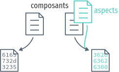
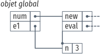

Étendre des interpréteurs par détournement
Application à des analyses dynamiques de sécurité en JavaScript
« I could tell you my adventures–beginning from this morning, » said Alice a little timidly: « but it’s no use going back to yesterday, because I was a different person then. »
« Explain all that, » said the Mock Turtle.
« No, no! The adventures first, » said the Gryphon in an impatient tone: « explanations take such a dreadful time. » — Through the Looking Glass, Lewis Caroll
Résumé
Il est difficile d’écrire un programme, mais il l’est encore plus de le maintenir. Les programmes sont souvent en développement continu: ils évoluent quand les besoins changent, quand de nouvelles fonctionnalités sont ajoutées, et quand leurs malfaçons sont découvertes et corrigées. Le moyen principal de gérer ces changements récurrents est la refactorisation.
Mais la refactorisation peut être délicate et chronophage. Refactoriser implique de réécrire des parties du code source, mais peut aussi requérir de réorganiser toute l’architecture du programme. La refactorisation est peut-être bien trop coûteuse dans un contexte où prime la vitesse d’itération.
Dans un but de sécuriser les applications web, nous nous sommes intéressés à appliquer des analyses dynamiques de sécurité à des programmes JavaScript. Dans ce contexte, pouvoir rapidement modifier l’interpréteur, et pouvoir composer des analyses à l’exécution est primordial.
Pour ce scénario, nous avons trouvé une alternative économe à la refactorisation: le détournement. Détourner un programme c’est changer ses résultats sans directement modifier son code source. Pour détourner un programme, on exploite des mécanismes de résolution tardive, tels que la portée dynamique et la métaprogrammation.
Pour illustrer le détournement, on commence par un interpréteur d’expressions arithmétiques, et l’on passe en revue les techniques utilisables pour détourner l’interpréteur afin qu’il supporte de nouveaux termes et opérations; un scénario similaire au problème de l’expression. On montre comment le détournement peut aider à construire des interpréteurs par incréments, en couches successives, ce qui permet de dynamiquement activer des comportements alternatifs.
Enfin, on applique ces techniques pour détourner un véritable interpréteur JavaScript par de multiples analyses dynamiques de sécurité. Détourner l’interpréteur est à la fois plus rapide et plus flexible que de le réécrire, mais a un impact potentiel sur son efficacité et sa sûreté. Le détournement est donc une alternative légitime à la refactorisation dans ce scénario réaliste.
READ Introduction
JavaScript est le langage des programmes exécutés par les pages web. Il est rare aujourd’hui de trouver une page web qui ne nécessite pas au moins un petit morceau de JavaScript, sans parler des applications web comme Facebook ou Google Maps qui rivalisent avec les applications classiques en taille de programme.
Seulement, tous ces programmes posent un vrai problème de sécurité pour l’utilisateur. Avant l’avènement d’Internet, exécuter un programme était un acte conscient et explicite: il fallait se procurer le programme (le plus souvent sur un support physique), puis l’installer, puis l’exécuter. Bien sûr, il existait des programmes malveillants: virus, malwares et autres portes dérobées qui pouvaient s’installer à votre insu, dissimulés dans le programme que vous vouliez installer, ou en utilisant des failles du système d’exploitation. Mais quand bien même, pour que les programmes malveillants pénètrent votre ordinateur, il fallait un acte conscient: introduire une disquette, un CD-ROM, ou cliquer sur « Installer ». Même aujourd’hui, l’installation d’un nouveau logiciel requiert des droits d’administration sur la plupart des systèmes d’exploitation. En revanche, dans un navigateur, les programmes JavaScript sont exécutés par défaut et sans demande de confirmation.
Bien sûr, les navigateurs ont des mécanismes pour éviter que n’importe quel programme JavaScript vienne effacer votre disque dur lorsque vous aller sur Wikipédia. Ces programmes sont exécutés dans ce qu’on appelle une machine virtuelle: ils ont un accès restreint aux fonctionnalités du système d’exploitation sous-jacent. Par exemple, un programme JavaScript n’a pas accès aux fichiers stockés sur le disque. Les applications web peuvent sauvegarder des données sur la machine, mais ces données sont écrites et gérées par le navigateur lui-même; l’application web interagit avec le navigateur pour les obtenir. Le navigateur élève une barrière entre les programmes JavaScript et le système d’exploitation.
Néanmoins, les protections mises en place par le navigateur ne sont pas toujours suffisantes pour éviter les drames. Par exemple, il n’y a pas de restrictions pour empêcher un programme JavaScript d’envoyer mon mot de passe à un serveur auquel il n’était pas destiné (voir [Kar16]). On peut tenter d’y remédier en analysant le programme.
Analyser le programmer c’est l’exécuter afin d’en observer son comportement. L’analyse n’exécute le plus souvent qu’une partie du programme; on pourra ainsi analyser le programme pour voir avec quels serveurs il tente de communiquer, mais sans réaliser cette communication. De l’analyse, on peut tirer de l’information qui permettra de prendre une décision: est-ce que ce programme est malveillant ou bénin? Les analyses de flot d’information ont pour but de répondre à ce genre de questions [SM03]. Mais il y a d’autres analyses qui nous aident à améliorer le programme: Valgrind détecte les fuites de mémoire [val], et les profilers recensent le temps d’exécution de chaque fonction pour guider le programmeur lors d’une optimisation.
Il est donc intéressant de pouvoir effectuer différentes analyses sur les programmes JavaScript. Des analyses de flot d’information aideront à détecter des programmes malveillants, et des analyses de performance aideront à optimiser tous types de programmes.
Mais pour pouvoir effectuer ces analyses, il faut avant tout les implémenter. Implémenter une analyse c’est essentiellement implémenter un interpréteur. C’est une tâche qui nécessite un effort non trivial. Une façon économe d’écrire une analyse est d’ailleurs de modifier un interpréteur existant plutôt que d’en construire un nouveau. Mais, comme on le montrera (chapitre 2), cette solution n’est pas non plus idéale pour implémenter plusieurs analyses. Dans un contexte exploratoire, il faut pouvoir itérer rapidement pour couvrir l’espace des solutions. Prototyper des analyses pour des programmes JavaScript devrait donc être rapide. Mais dans le même temps, il ne faut pas non plus sacrifier la facilité de maintenance et d’évolution de l’interpréteur.
C’est pourquoi nous proposons le détournement comme solution économe et pragmatique pour modifier et étendre des interpréteurs par de multiples analyses (chapitre 2.5). Détourner un interpréteur repose sur l’utilisation de mécanismes linguistiques qui nous permettent de modifier le comportement d’un programme sans modifier directement son code source: des mécanismes tels que le liaison dynamique, les variables à portée dynamique ou la métaprogrammation (chapitre 3).
FIXME: préciser quelles techniques pour le contenu des deux permiers chapitre de contribution
Pour illustrer le détournement, on utilisera de simples interpréteurs que l’on modifiera en utilisant différentes techniques (chapitres 4 et 5). Puis, pour démontrer l’utilité du détournement sur un interpréteur réaliste, on appliquera ces techniques à Narcissus (chapitre 6), un interpréteur de JavaScript. On montrera comment, grâce au détournement, on peut facilement ajouter des analyses dynamiques de programmes sans impacter le code source de l’interpréteur.
Mais avant de voir tout cela, il faut commencer par quelques définitions.
1 READ Préliminaires
1.1 Code source, processus, et spécification
Il faut distinguer le code source d’un programme et le processus que le code source engendre. Le code source est l’ensemble des fichiers de texte écrit par le programmeur. Le processus est l’action entreprise par la machine lorsqu’elle exécute le code source. Si on considère que le code source est un ordre (« additionne deux et deux »), le processus est le résultat de l’exécution de cet ordre par la machine. Le code source engendre le processus, mais ce sont deux aspects du même programme. On emploiera donc le terme programme pour désigner le code source, le processus, ou les deux, suivant le contexte.
Du point de vue de la machine, un programme est une simple liste d’instructions. Une séquence d’additions, de soustractions, d’écritures et lectures mémoire, de sauts conditionnels, et j’en passe. Ces instructions sont présentées à la machine sous la seule forme que son processeur est capable de manipuler: le binaire, une suite de zéros et de uns.
...001010110111001010110101011101010111110101...
Le programme est alors exécuté instruction par instruction. La machine lit une instruction, puis effectue l’opération correspondante; elle charge l’instruction suivante, la lit, effectue l’opération, charge, lit, effectue, etc. Cette monomanie contribue à l’utilité que nous trouvons à la machine, car son processeur agit certes simplement, mais il agit vite. N’importe quel processeur actuel est capable d’effectuer plusieurs milliards d’opérations par seconde. Pour la machine, le but du programme importe peu; tous se mêlent en une immense suite binaire exécutée à une vitesse nanoscopique.
Le programmeur en revanche cherche à structurer cette suite binaire. Une suite infinie de zéros et de uns est difficile à appréhender pour un cerveau humain; il lui faut des repères, des unités plus digestibles par nos facultés organiques. Un programmeur manipule rarement des bits afin de déclarer ses intentions à la machine; il utilise plutôt un langage de programmation.
function fibonacci(n) { return n < 2 ? 1 : fibonacci(n-1) + fibonacci(n-2) } print(fibonacci(10))
Dans les langages de programmation exotériques, un programme est constitué principalement de lettres plutôt que de nombres. Les lettres, arrangées en permutations judicieuses, nous servent à nommer les objets de la computation tels que les variables, les constantes, les fonctions, les classes et autres structures. Les mots sont plus facilement prononçables, davantage mnémoniques, et peuvent surtout communiquer, par homonymie, l’intention du programmeur. On peut ainsi, simplement en suivant les mots, supposer que le programme 1 calcule et affiche le onzième nombre de la suite de Fibonacci, sans être familier avec le langage de programmation utilisé. Les mots évoquent immédiatement du sens alors que le binaire en est dénué.
Mais, si le programme ainsi décrit est plus confortable pour le programmeur, il est incompréhensible par la machine en tant que tel. Il faut au préalable traduire ce programme en binaire avant de pouvoir l’exécuter. L’analogie avec les langues naturelles est pertinente: si je souhaite communiquer le contenu de ce document de thèse à des non-francophones, je dois le traduire dans une langue qu’ils parlent (écrire le programme en langage machine). Heureusement, la traduction d’un programme est une tâche moins hasardeuse que la traduction d’un document en langue naturelle. Les langages de programmation sont définis de façon à éliminer toute ambiguïté, ce qui permet d’effectuer la traduction en langage machine automatiquement.
La traduction d’un langage de programmation vers le langage machine est effectuée par le compilateur. Le compilateur lit le texte du code source, vérifie que ce texte est conforme aux règles syntaxiques du langage qu’il traduit, puis applique les règles de traduction en langage machine. Un compilateur permet donc au programmeur d’obtenir un programme exécutable par la machine à partir de code écrit dans le langage de son choix. Le programmeur peut manipuler des mots, la machine du binaire, et tous s’en trouvent contentés.

Comme le compilateur, l’interpréteur traduit le code source. Mais plutôt que de produire un fichier exécutable, un interpréteur exécute directement le programme. La distinction n’est pas toujours pertinente, car la compilation peut aussi avoir lieu à l’exécution du programme sans pour autant produire de binaire: la compilation just-in-time (JIT) traduit le code source vers des instructions machines qui sont directement exécutées. Ce qui importe, c’est que l’on dispose de différentes façons d’exécuter le code source écrit dans un langage de programmation. Et si l’on exécute le programme 1 avec l’un de ces traducteurs, on obtient:
> node fib.js 89
Notons que la compilation n’attache aucun sens particulier aux noms qui importent au programmeur. On aurait pu écrire le programme 1 ainsi:
xx=(x)=>x<2?1:xx(x-1)+xx(x-2);print(xx(10))
Ou, à l’extrême:
[][(![]+[])[+[]]+([![]]+[][[]])[+!+[]+[+[]]]+( ...28391 caractères plus loin... [+!+[]]])[!+[]+!+[]+[+[]]])()
Ces trois programmes ont trois codes sources différents, et chaque code source engendre un processus légèrement différent (le dernier sera légèrement plus long à l’exécution). Pourtant, on considère qu’ils sont équivalents, car tous les trois calculent bien le onzième nombre de la suite de Fibonacci. Dans ce cas, le processus effectué par la machine ne nous intéresse pas dans son intégralité, seul son résultat importe. On ne souhaite pas savoir le nombre d’instructions supplémentaires que le troisième programme requiert, ni le nombre de registres qu’il utilise, ni le nombre de défauts de cache qu’il cause. On cherche à comparer le résultat observable par l’utilisateur. Du point de vue de l’utilisateur, quand on exécute chacun des trois programmes, l’interpréteur JavaScript affiche 89; les programmes sont donc équivalents quand on considère le résultat.
Le résultat est la partie du processus qui nous intéresse à un moment donné. Parfois on s’intéresse à ce que le programme affiche à l’écran, ou aux sons qu’il émet à travers les enceintes. Et parfois on cherche à comparer deux programmes qui ont le même résultat mais qui n’ont pas la même durée d’exécution, ou la même consommation mémoire. On distingue alors le résultat du programme de son efficacité. Le résultat est sa fonction principale, ce qu’il fait; le résultat ne dépend en général pas des spécificités de la machine utilisée. L’efficacité du programme reflète comment le programme calcule son résultat; la machine peut avoir une grande influence sur l’efficacité. Du point de vue de l’efficacité, les trois programmes ne sont pas équivalents.
D’autre part, il y a le résultat obtenu, et il y a le résultat attendu. Le programmeur élabore le programme avec une idée en tête de son résultat, une intention. C’est cette idée qui guide le programmeur dans l’élaboration du programme: il construit le code source afin d’engendrer un processus qui produira le résultat attendu. Ce résultat attendu est appelé la spécification du programme. Cette spécification peut être plus ou moins détaillée; en voici trois:
- Le programme affiche 89.
- Le programme affiche le onzième nombre de la suite de Fibonacci.
- Le programme calcule le onzième nombre de la suite de Fibonacci à l’aide d’une fonction récursive, et affiche le résultat sur la sortie standard avant de se terminer.
La deuxième spécification est plus précise que la première, et la troisième plus précise que la deuxième. Un programme qui obéit à la troisième spécification obéira donc aussi à la deuxième et à la première. Notons que les deux premières spécifications s’intéressent strictement au résultat du programme, alors que la troisième stipule aussi sa structure: le programme doit utiliser une fonction récursive. On pourrait tout aussi bien spécifier l’efficacité du programme: « doit s’exécuter en moins d’une seconde sur telle machine », etc. Mais au minimum, la spécification décrit la fonctionnalité principale du programme.
La spécification est nécessairement incomplète. Qu’elle soit exprimée dans une langue naturelle ou dans un formalisme quelconque, la spécification ne peut pas détailler le processus de manière exhaustive, car si c’était le cas, la spécification serait le programme. Le but de la spécification est de décrire ce que le programme est censé faire. Parfois, la spécification décrit aussi comment certaines parties du programme doivent fonctionner. Mais c’est toujours au programmeur de combler les trous.
Le cycle de programmation peut-être résumé par l’illustration suivante:

Il s’agit bien d’un cycle, car un programme est rarement conforme à sa première exécution. À chaque itération, le programmeur modifie le code source, teste ses modifications, et observe le comportement du programme exécuté. Si le résultat attendu est obtenu, il s’arrête (et passe à la prochaine modification, ou au prochain programme). Sinon, c’est qu’il a manifestement fait une erreur, il met donc à jour sa représentation interne du programme, son modèle mental. Une fois la contradiction résolue, il modifie le code source (ou sa spécification) en conséquence, et ainsi recommence le cycle.
Ce faisant, le programmeur use de sa créativité. L’élaboration du programme à partir d’une spécification a en effet de nombreux degrés de liberté. Il suffit de voir qu’il y une infinité de programmes qui peuvent satisfaire une spécification. Tout comme il y a une infinité de façons d’obtenir le nombre 1: 1, 2 - 1, 1 + 0, 56/56, … Tout ce que la spécification ne précise pas est laissé au choix du programmeur. Il y a donc une infinité de processus qui obéissent à une spécification donnée, et une infinité de programmes qui engendrent ces processus. L’expertise du programmeur est de savoir exactement quels processus choisir, et quels programmes écrire, parmi ces infinités. Pour chaque programme, il faut choisir le langage de programmation, le compilateur, les bibliothèques, les algorithmes, les structures de données, etc. Tous ces éléments doivent s’accorder pour engendrer le résultat attendu par la spécification.
Mais le programme n’a pas seule vocation a être exécuté. Un programme est d’abord écrit, puis lu, puis corrigé, puis étendu, puis corrigé, etc. Lors de son développement, de nombreuses paires d’yeux vont le scruter et le modifier. Le programmeur ne communique son intention plus seulement à la machine, mais aussi à ses collègues, et même à un futur soi. Le choix des noms de variables et de fonctions devient important pour communiquer cette intention. De même, la simplicité du programme est une vertu. Un programme simple est plus facile à comprendre, à corriger, et à étendre. Les choix d’architecture, de structures de données, d’algorithmes, et même de styles, sont faits en prenant en compte toutes ces considérations: le programme doit être conforme à la spécification, mais il doit aussi être efficace, et clair, et facile à maintenir, et capable d’être étendu, et bien sûr, délivré dans le temps imparti et à un coût raisonnable.
La tâche du programmeur est donc d’élaborer un programme qui satisfait au mieux toutes ces contraintes, de choisir, parmi les infinies combinaisons de bibliothèques, de mécanismes, de suites de mots, celles qui offrent le meilleur compromis.
Et c’est précisément là que nous intervenons: nous explorons l’espace des programmes possibles, et étudions les compromis en jeu pour une application donnée. Et l’application qui va nous intéresser, c’est l’interpréteur Narcissus.
1.2 Une présentation du langage JavaScript
Genèse chez Netscape
JavaScript est le langage de programmation des pages web. Ce n’est pas juste le langage le plus populaire, c’est le seul langage supporté nativement par les navigateurs majeurs. Les alternatives comme les applets Java de feu Sun ou les programmes Flash d’Adobe nécessitent l’installation de plugins, ou ne sont pas compatibles avec toutes les plates-formes, mais surtout sont abandonnées par leurs constructeurs. JavaScript demeure le seul langage qui peut accompagner une page web et être exécuté par tous ces navigateurs sans installation supplémentaire.
JavaScript est utilisé pour rendre les pages web dynamiques (animer des boutons, valider des formulaires, …), voire les transformer en complètes applications (cartographie, portail social, ou même éditeur d’objets 3D). JavaScript dispose d’une interface riche avec tous les éléments d’une page web, et plus généralement de l’ordinateur: on peut facilement modifier l’arbre d’une page HTML et son style, mais on peut tout aussi aisément capturer le pointeur de la souris, redimensionner la fenêtre du navigateur, ou accéder à la caméra de l’ordinateur.
Les programmes JavaScript ne sont pas restreints aux navigateurs. Les interpréteurs JavaScript comme V8 (de Chrome) ou SpiderMonkey (de Firefox) sont exécutables en dehors du navigateur, et JavaScript devient alors comparable à l’utilité faite du langage Python: un langage simple à prendre en mains, disposant d’une riche collection de bibliothèques, et exécutable partout ou des interpréteurs sont disponibles. Le projet Electron [ele16], par exemple, permet d’écrire des applications multiplateformes en JavaScript.
À l’origine le langage était destiné à faire l’interface entre les pages web et les applets Java. Son auteur, Brendan Eich, est recruté par la compagnie Netscape dans le but de faire une version du langage Scheme pour leur navigateur web, le simplement nommé Netscape Navigator. En raison d’un partenariat avec Sun, le langage devait ressembler à Java; de là aussi vient son nom. Netscape souhaitait un langage de programmation qui pouvait être inclus dans des les fichiers HTML des pages web, un langage pour débutants, un langage pour des petits bouts de code, des scripts, qui viendraient suppléer les applets Java.
En mai 1995, Brendan Eich produit le premier prototype du langage, qui accompagnera la sortie de Netscape Navigator 2.0 dix mois plus tard. Le langage connaît un vif succès, ce qui pousse le concurrent de Netscape, Microsoft, à implémenter à son tour un interpréteur de JavaScript dans son navigateur Internet Explorer. Les deux versions cohabitent avec de légères différences, ce qui conduit à la standardisation du langage sous le nom d’ECMAScript en juin 1997.
Un langage à prototypes qui doit ressembler à Java
Sous ses allures de langage impératif, Eich dit s’être principalement inspiré de Self (pour les prototypes) et Scheme (pour les fonctions de première classe) [Eic08]. Contrairement à Java, JavaScript n’est pas un langage à classes. L’unité structurante majeure est la fonction:
function f(a, b) { /* code */ }
Les fonctions sont de première classe, c’est-à-dire qu’une fonction est une valeur comme une autre, qui peut être passée en argument, retournée par une fonction, mise dans une variable, etc.
function f(x) { return 2 * x } var function_in_var = f function_in_var(4) //: 8
JavaScript est typé dynamiquement. Les déclarations de variables, d’arguments, ou de valeurs de retour n’ont pas d’annotation de type. Une même variable peut très bien contenir une fonction, puis un nombre, puis une chaîne de caractères. Toujours pour simplifier la prise en main, il n’y a pas de gestion manuelle de la mémoire: le glaneur de cellules (garbage collector, ou GC) se charge de collecter les objets alloués mais inaccessibles.
Le langage a une syntaxe dédiée pour deux structures de base: les tableaux, et les objets. Un tableau peut contenir n’importe quelle valeur, et n’est pas nécessairement homogène:
var tab = [0,1,2,3,"quatre", function cinq() {}] tab[0] //: 0 tab[4] //: "quatre"
Les tableaux n’ont pas de taille fixe. On peut leur ajouter des éléments et en retirer à n’importe quel moment. En ce sens, ils ressemblent davantage aux vecteurs qu’aux tableaux de C++:
var tab = [] tab.push(6) tab.length == 1 //: true
Ce que JavaScript appelle un objet ressemble surtout à un dictionnaire: une structure associative où à chaque nom correspond une valeur:
var obj = { "a": 0, "b": "un", "c": function() { return 2 } } obj["a"] //: 0 obj.b //: "un" obj.c() //: 2
Comme les tableaux, les objets peuvent être modifiés à n’importe quel moment.
On peut ajouter une association, la supprimer, ou modifier la valeur associée à
un nom. Notons la syntaxe pour appeler une fonction associée dans un objet
(obj.c()), qui est identique à l’invocation d’une méthode en Java. Mais en
JavaScript, la fonction n’est pas liée à l’objet par construction. On pourrait
tout aussi bien l’invoquer de la sorte:
var obj = { "c": function() { return 2 } } var f = obj.c f() //: 2
Néanmoins, cette structure associative peut être utilisée pour représenter des objets au sens de la programmation par objets. Les objets de JavaScript disposent d’un lien de prototype, qui permet la délégation, et donc le partage de méthodes, entre objets.
var A = { "a": function() { return 0 } } var B = { __proto__: A, "b" : function() { return 1 } } A.a() //: 0 B.b() //: 1 B.a() //: 0
Ici on a deux objets, A et B. L’objet A contient une seule fonction, a.
L’objet B contient une seule fonction, b, mais déclare A comme prototype à
l’aide de la propriété spéciale __proto__. En conséquence, même si la
fonction a n’est pas déclarée sur B, B.a() appellera la fonction a qui
existe dans son prototype, A. On parle d’une chaîne de prototypes comme une
liste chaînée. L’algorithme de recherche d’une propriété dans une chaîne de
prototypes est d’ailleurs analogue à la recherche d’une valeur dans une liste
chaînée.
La propriété __proto__ n’est pas la seule façon d’affecter le prototype d’un
objet à sa création. On peut créer un objet qui hérite d’un autre à l’aide
d’Object.create:
var B = Object.create(A) B.b = function() { return 1 }
Et on peut aussi modifier le prototype d’un objet déjà créé à l’aide
d’Object.setPrototypeOf:
var B = {} B.b = function() { return 1 } Object.setPrototypeOf(B, A) Object.getPrototypeOf(B) == A //: true

Exemple de recherches dans une chaîne de prototypes. À gauche, on recherche la
propriété a. Cette propriété existe sur le second objet dans la chaîne, donc
la valeur retournée est 2. À droite, on recherche g sur la même chaîne, mais
cette fois g n’est présent dans aucun objet. Le troisième objet n’a pas de
parent, donc la recherche échoue et retourne undefined.
Dony, Malenfant et Bardou classifient les langages à prototypes [DMB98]. Selon cette classification, JavaScript a toutes les caractéristiques d’un langage à prototypes. La seule omission notable est l’absence de mécanisme pour cloner des objets:
- les objets ne sont pas associés à des classes, ils sont concrets;
- les objets sont des ensembles de couples clé-valeur;
- les objets communiquent par envoi de messages, mais notons que toutes les valeurs ne sont pas des objets: la distinction avec les types « primitifs » (entiers, booléens…) est due à la proximité avec Java voulue par Sun;
- les objets peuvent être créés vides (syntaxe
{}), ou en étendant un autre objet (Object.createou syntaxe{__proto__: parent}), mais il n’y a pas de mécanisme pour cloner un objet; - le mécanisme des prototypes réalise la notion « est-extension-de », et le lien
parent est matérialisé par la propriété
__proto__(ou la fonctionObject.getPrototypeOf); - pour activer une propriété héritée d’un objet (
B.adans l’exemple ci-dessus), l’interpréteur cherche la propriété sur son parent et l’active s’il la trouve, sinon il continue jusqu’à ce que l’objet soit sans parent, auquel cas la propriété n’est pas définie sur le receveur; - le langage dispose du mot-clé
this, qui dans une méthode fait référence au receveur du message, et non à l’objet qui définit la méthode.
Voici un exemple d’utilisation de this:
var point = { x: 0, y: 0, moveTo: function(x, y) { this.x = x this.y = y }, } var p1 = Object.create(point) p1.moveTo(1,2) p1 //: Object {x:1,y:2} point //: Object {x:0,y:0,moveTo:function}
L’objet point contient deux coordonnées, et une fonction moveTo qui remplace
ces cordonnées. L’objet p1 a point comme parent, et peut donc répondre au
message moveTo. Après cette invocation, on voit que p1 a deux propriétés
x et y qui correspondent aux valeurs passées à l’appel de moveTo, tandis
que les coordonnées de l’objet point sont restées à zéro. C’est que this
dans moveTo fait bien référence au receveur de l’appel, ici p1.
1.3 La modularité selon Parnas
David Parnas est fréquemment cité comme référence pour la notion de modularité d’un système, en particulier l’article « On the Critera to be Used In Decomposing Systems into Modules » [Par72]. Mais Parnas s’intéresse davantage à la phase de conception d’un système qu’à la phase d’implémentation.
Dans l’article, il décrit deux décompositions en modules d’un même système d’indexation ; un exemple didactique qui peut être implémenté « par un bon programmeur en une ou deux semaines ». La première décomposition comporte 5 modules, la seconde 6. Les deux décompositions sont supposées produire des programmes équivalents: qui fournissent les même fonctionnalités. Mais si les deux programmes sont équivalents, quel intérêt à choisir une décomposition plutôt qu’une autre? La réponse vient en s’intéressant aux choix d’implémentation qui ont été laissés en suspens.
Suivant le format d’entrée des données, ou l’emplacement mémoire de sauvegarde des données, il faudra modifier certaines parties du programme en conséquence. Et c’est là que les deux décompositions ne sont plus équivalentes: le second changement touche tous les modules de la première décomposition, alors que les changements sont restreints à un seul module dans la seconde décomposition. La seconde décomposition est donc mieux adaptée aux changements potentiels anticipés par le concepteur.

Dans le second design, les changements sont restreints à un seul module.

Un organigramme. Une façon courante de concevoir des programmes de 1950 à 1970.
Le second design est aussi plus facile à développer et plus facile à comprendre. Les modules du premier design correspondent aux étapes de traitement du système: Parnas nous dit qu’il suffit de dessiner le logigramme pour obtenir les 5 modules. Le résultat c’est que tous ces modules ont de nombreuses dépendances entre eux, ce qui pousse les programmeurs à avoir une compréhension globale du système pour pouvoir le développer. En revanche, il a élaboré le second design en suivant le principe d’encapsulation: les modules ne correspondent plus à des étapes de traitement, mais plutôt à des décisions de design, des responsabilités:
Every module in the second decomposition is characterized by its knowledge of a design decision which it hides from all others. Its interface or definition was chosen to reveal as little as possible about its inner workings.
Si l’on suit ce critère pour décomposer un système en modules, alors on peut qualifier le système de modulaire. Parnas liste les trois avantages attendus d’un système modulaire:
(1) managerial—development time should be shortened because separate groups would work on each module with little need for communication: (2) product flexibility—it should be possible to make drastic changes to one module without a need to change others; (3) comprehensibility—it should be possible to study the system one module at a time.
Le premier design a beau comporter des modules, il n’a pas ces avantages. Il n’est donc pas modulaire. Sur un second exemple de système, un compilateur et un interpréteur pour le même langage, il conclut là encore qu’une décomposition suivant le critère d’encapsulation est supérieure à une décomposition qui suit les étapes de traitement. Un interpréteur et un compilateur résolvent en partie les mêmes problèmes, et la décomposition préconisée par Parnas permet de réutiliser les modules d’un système à l’autre.

L’encapsulation cause de l’indirection, ce qui peut réduire l’efficacité du programme en augmentant les appels de procédures sur la pile.
Néanmoins, il y a un obstacle à utiliser une décomposition dont les modules adhèrent strictement à l’encapsulation: l’efficacité du système. Dans une telle décomposition, les appels de procédures sont plus nombreux et comportent davantage d’instructions. Là où le design qui suit le logigramme peut accéder directement à la mémoire pour modifier les données utilisées par un autre module, dans la décomposition suivant Parnas chaque module est responsable de ses propres données; il faut forcément passer par les procédures d’accès et de modification du module. Ces procédures peuvent en plus effectuer des vérifications sur leurs paramètres, qui ne sont peut-être pas nécessaires dans tous les cas, ce qui rajoute encore des instructions que la machine devra effectuer.
Parnas reconnaît ce problème d’efficacité, et suggère de concevoir un outil qui transforme le code de la décomposition modulaire en code qui suit davantage le fil d’exécution. Le concepteur peut travailler sur la représentation modulaire, et l’outil se charge de générer du code efficace. Dans le code généré par cet outil, les appels de procédures inutiles sont supprimés, et l’efficacité n’est pas sacrifiée. En revanche, la décomposition modulaire ne serait plus apparente. Il propose donc de conserver le programme sous ses plusieurs formes et de développer des outils pour passer d’une forme à l’autre.
Parnas met donc en avant le critère d’encapsulation pour concevoir un système modulaire. Mais surtout, il insiste sur l’importance de la phase de conception du système, indépendamment de son implémentation en code. Parnas ne croit d’ailleurs pas que le choix du langage de programmation puisse rendre un système modulaire. Un point qu’il développe dans « Why Software Jewels are Rare » [Par96].
Un « joyau logiciel » est un programme « bien structuré écrit dans un style homogène, sans bidouilles, développé tel que chaque composant est simple et organisé, et conçu pour que le produit soit facile à changer ». Parnas donne plusieurs raisons qui explique, selon lui, la rareté de ces joyaux: le logiciel existe pour répondre à un besoin, et la structure interne du programme n’est pas un besoin du client; un logiciel est plus utile à l’utilisateur s’il répond à plusieurs besoins, ce qui implique d’enrichir ses fonctionnalités, au détriment de la simplicité du programme. Les contraintes matérielles ne laissent que peu de place à l’élégance structurelle du code. Parnas rapporte notamment son échec à vouloir mettre à jour un système d’ordinateur de vol pour l’armée américaine; la machine ciblée possédait un matériel très limité qui demandait une optimisation manuelle de l’utilisation des registres, mais Parnas et son équipe désiraient s’abstraire de ces détails matériels:
Near-optimal register allocation was essential to fitting the program into a very small memory. One of our design goals had been to achieve hardware independence for most of our code. To achieve hardware independence on the specified processor, we needed an effective register allocation algorithm. The previous software for this task had been sucessful because none of the code was portable and register allocation was done by hand. We never found the necessary register allocation algorithm.
Et contrairement à ce que l’on pourrait penser, la loi de Moore ne résout pas le problème. Si les machines possèdent deux fois plus de registres et sont deux fois plus rapides, alors on leur demandera de faire deux fois plus de calculs (ou de les faire deux fois plus rapidement). Parnas le note:
Although today’s machines are far better than the one we were using, goals have expanded and competitive pressures often limit the resources available. Few of today’s designers are free to ignore performance requirements and hardware limitations.
Mais surtout, il faut se méfier des marchands de panacée:
Sometimes new languages are used in the design of jewels, and authors may attribute a product’s success to the use of a particular language or type of language. Here, I have grave doubts. I have lost count of the number of languages that have been introduced to me as the solution to the software problems that everyone experiences. First, I was told to use Fortran instead of an assembler language. Later, others advocated Algol-60 and its derivatives as the cure to the ugly software resulting from Fortran. Of course, NPL, later known as PL/I, was going to provide an even better solution. The list goes on. Wirth promotes Oberon while hundreds of people are telling me that an object-oriented language must be used to get clean software. I no longer believe such claims. The issue is design, not programming language.
[…]
We should not ignore the fact that most modern languages have inherent disadvantages. A language that supports certain approach to software design often compels us to use a particular implementation of a design principle, one that may be inappropriate for the task at hand. For example, many languages that support modules, abstract data types, and object classes require the use of subroutines where macro expansion might be a better choice. Moreover, languages that prevent programming errors, a goal advanced by some inveterate language designers, are as feasible as knives that can cut meat but not hands. We need sharp tools to do good work.
Un langage de programmation est un outil parmi d’autres, et aucun outil ne peut résoudre tous les problèmes. C’est au concepteur de choisir l’outil adapté qui est le plus à même de résoudre le problème qu’il a en vue. Choisir un langage n’affranchit pas le concepteur d’avoir à se poser des questions difficiles sur la structure du système. En 2003, Parnas déplore cette tendance [DBB+03]:
To a man with a hammer, everything looks like a nail. To a Computer Scientist, everything looks like a language design problem. Languages and compilers are, in their opinion, the only way to drive an idea into practice.
My early work clearly treated modularisation as a design issue, not a language issue. A module was a work assignment, not a subroutine or other language element. Although some tools could make the job easier, no special tools were needed to use the principal, just discipline and skill. When language designers caught on to the idea, they assumed that modules had to be subroutines, or collections of subroutines, and introduced unreasonable restrictions on the design. They also spread the false impression that the important thing was to learn the language; in truth, the important thing is to learn how to design and document. We are still trying to undo the damage caused by the early treatment of modularity as a language issue and, sadly, we still try to do it by inventing languages and tools.
Parnas réitère: le langage de programmation seul ne rend pas le programme modulaire. Il est aussi facile de créer un programme non-modulaire dans un langage de haut niveau qu’en assembleur. On ne pourra donc pas rendre les programmes modulaires simplement en fournissant de meilleurs languages ou outils.
Alors, quelle est la bonne direction à suivre? D’après Parnas, il faut insister sur la phase de conception du système; c’est là où les limites entre modules apparaissent, et là où les décisions d’architecture doivent être prises:
My engineering teacher laid down some basic rules:
- Design before implementing.
- Document your design.
- Review and analyze the documented design.
- Review implementation for consistency with the design.
There rules apply to software as least as much as they do to circuits or machines.
Conclusions
Parnas est souvent cité pour ses travaux sur la modularité, à juste titre, mais son message principal n’est pas toujours bien entendu. On trouve dans l’article déterminant de 1972 les avantages d’un système modulaire, et un critère pour les concevoir: le critère d’encapsulation. Quelles parties du système ont besoin de pouvoir être changées? D’une machine à l’autre, ou en réponse à des besoins futurs? Ces parties déterminent les modules du système selon le critère d’encapsulation. De ce critère découlent des notions de séparation des préoccupations et de type de données abstrait (qu’il ne nomme pas). L’encapsulation est un critère supérieur à la façon usuelle de découper les programmes selon le processus de traitement des données, en suivant un logigramme.
Parnas nous permet donc de qualifier la modularité d’un système. Un système simplement découpé en modules arbitraires n’est pas modulaire. Mais si pour changer la base de données utilisée par le système il suffit de modifier le code d’un seul module, alors ce système est modulaire par rapport à la base de donné utilisée. La base de donnée initiale est un choix de conception, mais un choix qui peut être changé ultérieurement sans demander la refonte totale du système. Le système est modulaire par rapport à un ensemble de choix qui peuvent être altérés ultérieurement.
On peut donc voir la modularité comme une des fonctionnalités du système; une fonctionnalité à destination des programmeurs chargés de la maintenance et de l’évolution du système, plutôt qu’une fonctionnalité destinée aux utilisateurs. Et comme toute fonctionnalité, la modularité impose un coût de complexité au système. Si le programme est flexible, s’il permet de changer la base de donnée utilisée, alors il faut que le reste du système soit capable de fonctionner non plus avec une seule base de donnée, mais avec plusieurs bases différentes. Gérer cette compatibilité impose de traiter plus de cas, ce qui inévitablement se traduit en code. De plus, pour implémenter un système modulaire, on fera souvent appel à des interfaces, des indirections, des appels de procédures qui encapsulent les décisions de conception. Et ces interfaces ont souvent un impact négatif sur l’efficacité du programme. Ces compromis modularité/complexité et modularité/efficacité semblent difficiles à éviter.
1.4 La théorie de Naur derrière le programme
Un point de vue qui complémente celui de Parnas est celui de Peter Naur. Dans « Programming as Theory Building » [Nau85] il attache, comme Parnas, beaucoup d’importance à la réflexion du programmeur dans l’élaboration d’un système. Et il s’intéresse également à la modification de programmes, aux difficultés qui apparaissent quand on essaye d’ajouter des fonctionnalités non prévues initialement.
Pour Naur, la tâche principale du programmeur n’est pas de produire du code source. Un programmeur avant tout construit une théorie du problème que le programme doit résoudre. Lors de la conception et de l’implémentation, le programmeur construit sa connaissance du problème, du domaine d’application, et des outils. Cette connaissance est naturellement interne, et toute production externe (code source, documentation, diagrammes) ne fait la refléter qu’en partie.

Pour Naur, le code source et la documentation ne sont que des produits secondaires de la programmation; mais l’activité principale du programmeur est de construire une connaissance du problème, une théorie.
Ce point de vue, Naur le tire de sa propre expérience à construire de larges systèmes. Il donne l’exemple d’un compilateur développé par un groupe A pour une machine X. Le compilateur fonctionne très bien, et un autre groupe de programmeurs, le groupe B, souhaite étendre légèrement le langage, et réutiliser ce compilateur pour une machine Y. Le groupe B planifie les changements à apporter au compilateur après avoir étudié sa structure, et vient discuter des changements avec le groupe A qui offre son soutient:
In several major cases it turned out that the solutions suggested by group B were found by group A to make no use of the facilities that were not only inherent in the structure of the existing compiler but were discussed at length in its documentation, and to be based instead on additions to that structure in the form of patches that effectively destroyed its power and simplicity. The members of group A were able to spot these cases instantly and could propose simple and effective solutions, framed entirely within the existing structure.
Le groupe B avait le code source et la documentation, et du temps pour les étudier. Malgré cela, les modifications du compilateur qu’il envisage sont jugées inadéquates par le groupe A, qui est capable de proposer rapidement des modifications plus simples et directes. Naur en conclut que la documentation et le code source n’ont pas été suffisants pour communiquer toutes les décisions de conception au groupe B, pour communiquer la théorie du compilateur.
« Théorie » ici n’a pas un sens abstrait; si un programmeur du groupe A possède la théorie du compilateur, c’est que non seulement il sait comment le compilateur fonctionne dans le détail, mais il est aussi capable de l’expliquer à quelqu’un du groupe B, de répondre à des questions sur le compilateur, de débattre sur les choix d’implémentation. Avoir la théorie du programme, c’est avoir internalisé une connaissance pratique, et être capable d’appliquer cette connaissance à d’autres problème connexes:
The notion of theory employed here is explicitly not confined to what may be called the most general or abstract part of the insight. For example, to have Newton’s theory of mechanics as understood here it is not enough to understand the central laws, such as that force equals mass times acceleration. In addition, as described in more detail by Kuhn, the person having the theory must have an understanding of the manner in which the central laws apply to certain aspects of reality, so as to be able to recognize and apply the theory to other similar aspects.
Pourquoi s’intéresser à cette notion de théorie? Parce qu’elle permet de mieux comprendre comment modifier un programme. Naur commence par constater que modifier des programmes est une pratique courante, motivée par l’économie. Si on a déjà un programme qui fait à peu près ce qu’on veut obtenir, il est raisonnable de penser que modifier ce programme sera plus rapide que d’en recréer un complètement nouveau. Naur remarque que ce raisonnement ne considère que la facilité de modifier le texte du programme. En effet, le code source d’un programme sous forme texte est facilement modifiable; bien plus qu’une construction physique comme un immeuble, un pont, ou une voiture. Si l’on considère plutôt le point de vue de Naur — que le programmeur manipule avant tout une théorie — on ne peut pas modifier le programme sans prendre en compte la théorie sous-jacente:
What is needed in a modification, first of all, is a confrontation of the existing solution with the demands called for by the desired modification. In this confrontation the degree and kind of similarity between the capabilities of the existing solution and the new demands has to be determined. The point is that the kind of similarity that has to be recognized is accessible to the human beings who possess the theory of the program, although entirely outside the reach of what can be determined by rules, since even the criteria on which to judge it cannot be formulated.
Si l’on se contente de modifier le code source sans considérer la théorie, on se retrouve dans le cas du groupe B; à étendre le compilateur de façon tarabiscotée, sans tirer partie de sa structure:
For a program to retain its quality it is mandatory that each modification is firmly grounded in the theory of it. Indeed, the very notion of qualities such as simplicity and good structure can only be understood in terms of the theory of the program, since they characterize the actual program text in relation to such program texts that might have been written to achieve the same execution behaviour, but which exist only as possibilities in the programmer’s understanding.
Donc, si l’on souhaite modifier le programme, il faut vraiment tenter de modifier la théorie. Pour cela, il faut d’abord avoir accès à cette théorie. Si on n’a pas accès aux développeurs du programme, les possesseurs de sa théorie, il faut tenter de la recréer à partir de code source et de la documentation. Naur appelle cela la « résurrection de programme ». À ses yeux, c’est un acte sans espoir:
A very important consequence of the Theory Building View is that program revival, that is re-establishing the theory of a program merely from the documentation, is strictly impossible.
[…] building a theory to fit and support an existing program text is a difficult, frustrating, and time consuming activity. The new programmer is likely to feel torn between loyalty to the existing program text, with whatever obscurities and weaknesses it may contain, and the new theory that he or she has to build up, and which, for better or worse, most likely will differ from the original theory behind the program text.
Il concède que faire revivre un programme de cette façon peut être utile dans des circonstances particulières, mais en étant bien conscient de l’effort à fournir pour obtenir un résultat probablement de qualité inférieure.
L’alternative qu’il conseille, est de toujours recréer le programme:
In preference to program revival, the existing program text should be discarded and the new-formed programmer team should be given the opportunity to solve the given problem afresh. Such a procedure is more likely to produce a viable program than program revival, and at a no higher, and possibly lower, cost.
Modifier le code source du programme n’est facile qu’en apparence; car modifier la fonctionnalité du programme demande de reconstruire sa théorie, afin de s’assurer que les changements envisagés auront bien les effets voulus. Puisqu’il faut reconstruire la théorie du problème initial, puis l’adapter au problème qui intéresse le programmeur, l’effort sera moindre en construisant une théorie directement adaptée au nouveau problème.
Naur attaque une autre idée populaire du génie logiciel: qu’une méthode de programmation, un ensemble de règles à observer, peut être supérieure à une autre. Une méthode préconise les étapes du processus de développement, ou les documents à produire et dans quel ordre. Mais pour Naur, le seul point qui importe c’est le développement de la théorie du programme, et aucune méthode ne peut garantir une construction correcte:
A method implies a claim that program development can and should proceed as a sequence of actions of certain kinds, each action leading to a particular kind of documented result. In the Theory Buiding View what matters most is the building of the theory, while production of documents is secondary. In buiding the theory there can be no particular sequence of actions, for the reason that a theory held by a person has no inherent division into parts and no inherent ordering. Rather, the person possessing a theory will be able to produce presentations of various sorts on the basis of it, in response to questions or demands.
Pour les mêmes raisons, le choix du langage de programmation, ou d’un formalisme particulier ne peut remplacer la construction de la théorie:
As to the use of particular kinds of notation or formalization, again this can only be a secondary issue since the primary item, the theory, is not, and cannot be, expressed, and so no question of the form of its expression arises.
Quoi dire alors aux programmeurs novices? Comment leur faire comprendre ces notions, comment les amener à construire d’élégantes théories pour créer des programmes flexibles et efficaces? Naur recommande de les former principalement de façon organique: en travaillant avec des programmeurs chevronnés, ils absorberont les connaissances nécessaires par osmose.
What remains is the effect of methods in the education of programmers. Indeed, on this view the quality of the theory built by the programmer will depend to a large extent on the programmer’s familiarity with model solutions of typical problems, with techniques of description and verification, and with principles of structuring systems consisting of many parts in complicated interactions.
While skills such as the mastery of notations, data representations, and data processes, remain important, the primary emphasis would have to turn in the direction of furthering the understanding and talent for theory formation. To what extent this can be taught at all must remain an open question. The most hopeful approach would be to have the student work on concrete problems under guidance, in an active and constructive environment.
Conclusions
Naur établit une distinction importante entre le code source d’un programme, et la connaissance que le programmeur a de son fonctionnement. C’est une distinction intuitive pour quiconque a une expérience même modeste de programmation. Cette distinction nous permet notamment de comprendre pourquoi modifier un programme n’est pas simplement modifier du texte, modifier son code source. Il faut prendre en compte les choix faits au moment de la conception du programme, et considérer comment les changements que l’on souhaite apporter affectent ces choix. Comprendre la théorie.
Naur estime que la théorie n’est pas communicable; qu’elle reste toujours interne au programmeur qui la construit. Mais à l’évidence le programmeur est toujours capable de la communiquer en partie. La théorie, c’est savoir comment le programme fonctionne, pourquoi telle partie est nécessaire, comment étendre le programme… Naur dit lui-même plusieurs fois qu’un programmeur qui possède la théorie est capable de répondre à ces questions sur le programme, c’est bien qu’il y a une personne qui doit interpréter ces réponses et reconstruire la théorie. Quand bien même la théorie ne peut être communiquée exactement comme telle d’un programmeur à l’autre, il suffit d’en communiquer une partie suffisante pour satisfaire les besoins de l’autre.
Le message général est proche de Parnas: l’important dans la programmation ce ne sont pas les formalismes, les langages ou les outils; c’est de réfléchir, de comprendre le problème, et construire une solution qui satisfait les contraintes données. Et c’est cette aptitude à résoudre le problème qui devraient être enseignée principalement aux novices. En cela, la programmation n’est pas différente d’autres activités:
This problem of education of new programmers in an existing theory of a program is quite similar to that of the educational problem of other activities where the knowledge of how to do certain things dominates over the knowledge that certain things are the case, such as writing and playing a music instrument. The most important educational activity is the student’s doing the relevant things under suitable supervision and guidance. In the case of programming the activity should include discussions of the relation between the program and the relevant aspects and activities of the real world, and of the limits set on the real world matters dealt with by the program.
2 Le problème: instrumenter et étendre des interpréteurs
2.1 READ Étude de cas: instrumentation ad-hoc de Narcissus
Narcissus est un interpréteur de JavaScript écrit et maintenu par Mozilla
[Nar11]. Narcissus est écrit en JavaScript, et est métacirculaire: il utilise
l’environnement hôte pour implémenter directement des parties de l’environnement
client (p.ex., l’objet String exposé au code client n’est pas réimplémenté par
Narcissus, mais est une simple façade de l’objet String de l’hôte). Narcissus
est une implémentation relativement légère (environ 6000 lignes de code) du
standard ECMAScript [ECM99], qui permet de rapidement prototyper des
fonctionnalités expérimentales pour le langage.

Une valeur à deux facettes.
En 2012, Austin et Flanagan se sont servi de Narcissus pour implémenter leur stratégie d’évaluation multi-facettes [AF12], une analyse dynamique de flot d’information. Cette évaluation restreint une valeur en lecture et en écriture à une autorité bien définie. Lorsqu’une valeur ainsi étiquetée est utilisée dans une expression, son étiquette est propagée au résultat de l’expression, ce qui préserve les permissions de l’autorité sur le résultat. Dans l’évaluation multi-facettes, chaque valeur étiquetée a deux facettes: une facette contient la valeur « privée » à destination de l’autorité, et l’autre facette contient la valeur « publique » destinée à des observateurs non autorisés. Pour évaluer une expression qui contient des valeurs à facettes, on évalue chaque facette tour à tour pour produire les deux facettes du résultat. Afin de suivre les étiquettes même lors de branchements (des flots indirects), l’évaluation multi-facettes maintient une liste des embranchements suivis lors de l’exécution; cette liste est appelée program counter (PC).

Par exemple, dans le code ci-contre, même si la valeur de x n’est pas
directement affectée à z, la valeur de z en dépend indirectement, à travers
les deux conditionnelles. C’est un flot indirect de x à z. Si le paramètre
x est true, alors la fonction retourne true, et si x est false, la
fonction retourne false. Un observateur du résultat de la fonction peut donc
extraire toute l’information de x sans jamais directement accéder à sa valeur.
En revanche, si on fait de x une valeur à facettes avec une valeur privée
true et une valeur publique false (qu’on écrit true:false), alors le
premier if sera exécuté deux fois: une fois pour chaque facette de la
condition, ce qui fait de y une valeur à facettes false:true. Après le
second if, la fonction retourne la valeur true:false. Un observateur qui ne
dispose pas de l’autorité a n’a accès qu’à la valeur publique du résultat, et
n’est donc pas capable d’inférer la valeur privée de x. L’évaluation
multi-facettes permet donc de protéger l’information de x, même contre les
flots indirects.
Pour implémenter cette stratégie d’évaluation sur JavaScript, les auteurs ont choisi de modifier le code source de Narcissus directement. Pour donner une idée de l’échelle de la tâche, Narcissus fait 6000 lignes de code, et les deux plus gros fichiers sont le parseur (1600 lignes) et le fichier principal de interpréteur, « jsexec » (1300 lignes). Ce fichier principal contient la logique pour interpréter des arbres de syntaxe abstraits, et pour mettre en place l’environnement d’exécution des programmes clients. Les changements effectués pour l’implémentation de l’évaluation multi-facettes sont restreints à ce fichier principal; 640 lignes sont affectées, soit la moitié.
On peut obtenir l’ensemble des changements requis pour l’évaluation multi-facettes en extrayant un diff des deux versions. La figure suivante donne une vue d’ensemble de ces changements:

 Ces catégories sont explicitées en 2.3.
Ces catégories sont explicitées en 2.3.
On constate immédiatement que les changements effectués par l’instrumentation
touchent de nombreuses parties du code de l’interpréteur, sans être restreints à
une ou deux régions particulières. Les changements sont éparpillés dans le
code. De plus, des changements de catégories différentes sont entremêlés:
certaines fonctions sont affectées par les changements evaluateEach et
ProgramCounter. Résultat, il devient difficile de comprendre les effets de
l’instrumentation en lisant le code à l’œil nu, ou de s’assurer de sa justesse
par rapport à une spécification. Il devient difficile également, sans
connaissances avancées de Narcissus et de l’évaluation multi-facettes, de savoir
si une ligne de code de l’interpréteur instrumenté concerne l’interprétation
décrite par le standard ECMAScript, ou si elle concerne l’évaluation
multi-facettes. Le code de l’interpréteur instrumenté ne comporte aucune
information qui permet de les distinguer.
Autre point important: l’instrumentation duplique tout le code de l’interpréteur. C’est une solution simple pour créer un interpréteur qui supporte l’évaluation multi-facettes. En revanche, la duplication de code a un impact important sur la maintenance à long terme: plus du double du code doit être maintenu. Les changements requis dans le code source pour corriger un bug dans Narcissus, ou pour ajouter une fonctionnalité, doivent désormais être répétés dans l’instrumentation. Le coût de maintenance devient prohibitif lorsque plusieurs instrumentations sont envisagées.
Il est évident que les auteurs avaient pour but de démontrer la viabilité de l’évaluation multi-facettes sur un langage réaliste, en l’occurrence JavaScript. Ils ne cherchaient probablement pas à résoudre les problèmes d’éparpillement et d’entremêlement de code. C’est pourquoi modifier directement Narcissus était une solution adéquate pour atteindre leur but.
Néanmoins, ces problèmes sont légitimes, et pas seulement dans le simple contexte d’un interpréteur et d’une analyse de flot dynamique. La duplication de code apparaît bien souvent dans d’autres programmes. Et il est rare qu’ajouter ou modifier une fonctionnalité à un programme n’impacte qu’une partie bien définie du code source; éparpillements et entremêlements ne sont pas des problèmes spécifiques à l’instrumentation d’un interpréteur. On peut alors se demander si ces problèmes sont évitables, et s’ils le sont, comment les éviter? L’instrumentation de Narcissus constitue un bon scénario pour tenter de répondre à ces questions.
2.2 READ Le but: factoriser les changements
D’un point de vue abstrait, on peut voir l’interpréteur comme une fonction mathématique qui associe un code source à un processus:
spec_1: source -interpréteur-> processus
La définition exacte de cette fonction correspond à une spécification de l’interpréteur (voir 1.1).
L’instrumentation de la section précédente correspond à une modification de cette spécification. Et à cette nouvelle spécification correspond à une nouvelle fonction:
spec_2: source -interpréteur modifié-> processus
Dans la spécification 1, un programme JavaScript est évalué en suivant les règles du standard ECMAScript. En suivant la spécification 2, un programme JavaScript est évalué en suivant les règles de l’évaluation multi-facettes.
À ces spécifications correspondent un programme. Dans la section précédente, on a bien deux programmes: Narcissus correspond à la spécification 1, et Narcissus instrumenté par Austin et Flanagan correspond à la spécification 2. L’interpréteur modifié est vu comme un nouvel interpréteur, sans aucune relation avec le premier. En suivant ce point de vue, il est naturel d’implémenter l’interpréteur modifié comme un nouveau programme.
Pourtant, le nouveau programme est en grande partie basé sur le premier. L’instrumentation pour l’évaluation multi-facettes change moins de 10% du code source de Narcissus. On pourrait alors adopter un point de vue complémentaire, et s’intéresser à la modification en elle-même:
interpréteur -modification-> interpréteur modifié

La modification décrit uniquement les changements, le delta, entre les deux interpréteurs. L’interpréteur modifié est alors dérivé de l’interpréteur d’origine. C’est un peu la même distinction que l’on peut faire entre représenter un rectangle par quatre sommets, ou bien par une origine et un vecteur. La seconde représentation est plus compacte que la première, sans perte d’information.
Lorsque la modification est relativement mineure par rapport à la taille de l’interpréteur, la représentation du couple origine + delta sera plus compacte. On qualifiera une telle représentation de différentielle.
Mais quel est l’intérêt de cette représentation différentielle?
Rappelons nous que le processus de développement est le suivant:

Le programmeur élabore le code source en fonction de la spécification. À partir du code source, le compilateur produit un programme exécutable, et le programmeur observe les résultats de son exécution sur la machine. Le but du programmeur est de concevoir un programme qui aura les résultats attendus par la spécification. Si les résultats sont en accord avec la spécification, le programme est fini. Le plus souvent, il faut corriger le code source pour corriger le processus engendré, jusqu’à ce que les résultats concordent, ou que le programme ne présente plus d’intérêt, ce qui offre une porte de sortie à ce cycle.
Le changement décrit dans la section précédente correspond à une modification de la spécification. Dans le premier point de vue, cela entraîne deux codes sources, pour deux programmes, pour deux processus, bien distincts:

La spécification est modifiée: il y a des parties nouvelles (▬ ), qui correspondent aux ajouts de l’évaluation multi-facettes, qui viennent se greffer sur la spécification de l’interprétation d’origine. Puisque les spécifications sont proches, on peut réutiliser le code source de l’interpréteur d’origine, et y apporter des modifications. Au final, on a un interpréteur qui se comporte différemment, mais dont la fonctionnalité principale reste inchangée: il interprète toujours du code JavaScript. Mais même si cette similarité entre les deux interpréteurs existe bien, elle n’est pas exploitée: on a deux spécifications, deux codes sources, deux programmes.
Dans une représentation différentielle, le but est de factoriser cette similarité. Plutôt que d’avoir deux programmes, on a un programme et sa modification:

On a une spécification et son delta qui décrit une variante de comportement de la spécification. Pareil pour le code source: il n’y a plus deux codes, mais un code d’origine, et un delta qui décrit les modifications de la spécification. Ce code peut engendrer deux programmes différents: le programme d’origine, ou le programme qui contient en plus le delta. On retrouve alors les deux processus attendus, mais les similarités de la spécification et du code source sont factorisées.
L’intérêt de cette seconde représentation factorisée est qu’elle préserve la séparation des préoccupations: l’interpréteur d’origine est conservé, et toujours présent dans le code source. Le delta est séparé, et non plus mêlée dans le code de l’interpréteur. Et cette factorisation passe plus facilement à l’échelle. Si l’on veut appliquer non plus une mais quatre analyses sur Narcissus, on n’a pas à dupliquer le code de l’interpréteur quatre fois, mais juste à décrire les quatre deltas requis par les analyses.
Cette factorisation correspond directement à une factorisation algébrique. Si I1 est l’interpréteur d’origine et I2 l’interpréteur modifié, on note δ2 le delta qui transforme I1 en I2 (δ2 est une fonction). On a I2 = δ2 I1. Soient deux autres interpréteurs: I3 et I4, et leurs deltas respectifs δ3 et δ4. On a:
I2 = δ2 I1
I3 = δ3 I1
I4 = δ4 I1
Alors,
(I1, I2, I3, I4) = (Id I1, δ2 I2, δ3 I3, δ4 I4) = (Id, δ2, δ3, δ4) I1
Au lieu d’avoir quatre interpréteurs différents, on peut juste conserver les l’interpréteur de base et les quatre deltas. C’est une factorisation qui élimine la redondance de I1.
Mais si intuitivement une telle factorisation semble possible, les questions naturelles qui suivent sont: comment réaliser cette factorisation dans le code source? Par quels moyens? À quoi ressemble un interpréteur factorisé? Et ultimement, comment factoriser Narcissus?
2.3 READ Quatre axes de factorisation pour l’instrumentation
En observant les modifications apportées par l’instrumentation de Narcissus pour
l’évaluation multi-facettes de plus près, on peut distinguer quatre catégories
de changements: les imports/exports, l’ajout du paramètre program counter,
le branchement pour évaluer chaque facette, et les ajouts à l’objet global.
Première catégorie: imports/exports. De nouvelles définitions ont besoin d’être importées dans le module de l’interpréteur, et une nouvelle fonction est exportée. Ce sont de simples ajouts qui sont localisés en début et en fin de fichier respectivement. Voici comment ils se présentent dans le code:
// Imports + var FacetedValue = Zaphod.facets.FacetedValue; + var ProgramCounter = Zaphod.facets.ProgramCounter; ... // Exports - test: test + test: test, + getPC: getGC
Notons au passage que JavaScript ne dispose pas de système de modules. Il n’y a
pas de mots-clés import comme en Java. Par convention, un simple objet
JavaScript peut regrouper les valeurs et fonctions exportées par un module:
c’est le cas dans les Exports ci-dessus. Pour importer ces définitions, il
suffit alors de faire référence à ces propriétés, c’est ce qu’on voit dans les
Imports.
Seconde catégorie: les changements effectués pour accommoder le program
counter utilisé par l’analyse. D’abord, le constructeur de l’objet
ExecutionContext est étendu pour accepter un argument supplémentaire: la
valeur courante du program counter, pc:
- function ExecutionContext(type, version) { + function ExecutionContext(type, pc, version { + this.pc = pc;
Dans Narcissus, lorsque l’interpréteur doit exécuter une fonction, ou tout un
fichier, il crée une instance de l’objet ExecutionContext. Cet objet contient
l’environnement lexical utilisé pour résoudre les noms de variables du code
exécuté par ce contexte. L’objet ExecutionContext est une réification du
concept éponyme de la spécification ECMAScript.
L’évaluation multi-facettes a besoin de suivre la valeur courante du program
counter, c’est pourquoi cette valeur est sauvegardée dans l’objet
ExecutionContext.
Ce faisant, la signature du constructeur d’ExecutionContext est étendue. Tous
ses appels doivent être modifiés en conséquence pour fournir une valeur correcte
pour le paramètre program counter. Il y a plus de 80 instances de ce simple
changement dans l’instrumentation. En voici deux exemples:
- x2 = new ExecutionContext(MODULE_CODE); + x2 = new ExecutionContext(MODULE_CODE, x.pc); ... - getValue(execute(n.children[0], x)); + getValue(execute(n.children[0], x), pc);
Ce changement est viral: il entraîne un ajout de paramètre non seulement sur les
appels au constructeur d’ExecutionContext, mais sur d’autres fonctions, comme
getValue, qui feront appel à ce constructeur, et ainsi de suite.
Troisième catégorie: les changements effectués dans l’exécution de l’arbre syntaxique abstrait pour propager les étiquettes sur les valeurs à facettes. Par exemple, additionner deux valeurs à facettes devrait produire une nouvelle valeur à facettes. Dans l’implémentation, plutôt que d’effectuer une simple addition entre les deux opérandes, l’interpréteur doit d’abord inspecter l’opérande gauche, et si c’est une valeur à facettes, additionner la valeur de l’opérande droite à chacune de ces facettes. Bien sûr, l’opérande droite peut également être une valeur à facettes, et il faut alors faire deux additions de ce côté aussi. L’interpréteur Narcissus ne contient aucun code pour gérer l’addition de deux valeurs à facettes, donc l’instrumentation doit ajouter la logique nécessaire pour distribuer l’addition sur chaque facette.
Pour ce faire, chaque opération sujette à cette distribution est enrobée dans un
appel à la fonction evaluateEach. Cette fonction teste si la valeur passée
est une valeur à facettes, et effectue récursivement l’opération sur chaque
facette si c’est le cas. Au total, 25 appels à evaluateEach ont été ainsi
ajoutés dans l’instrumentation. Le code suivant donne la forme générale de ces
changements:
- var v = getValue(node.a) + evaluteEach(getValue(node.a), function(v,x) { ... do something with v ... + }
Dans Narcissus non instrumenté, on récupère une valeur d’un nœud de l’arbre
syntaxique (p.ex., l’opérande gauche d’une affectation, ou la condition d’un
if) puis on fait quelque chose avec cette valeur. Dans l’instrumentation, on
récupère la même valeur, mais cette fois on distribue l’évaluation en appelant
evaluateEach avec cette valeur comme premier argument, et comme second une
fonction qui opère sur une valeur simple (v), c’est-à-dire sans facettes.
Quatrième et dernière catégorie: les changements effectués sur l’environnement
d’exécution de code client. Dans un programme JavaScript, l’environnement
d’exécution fournit un objet global qui contient les objets de base comme
Array, Math, String et Object. Puisqu’il est métacirculaire, Narcissus
expose ces objets aux programmes qu’il interprète en réutilisant ceux qui lui
sont exposés par son environnement hôte. Certains de ces objets sont
directement exposés, et d’autres sont exposés via des mandataires (proxies).
L’objet global exposé par Narcissus est aussi enrichit par de nouvelles
propriétés; la fonction print par exemple qui permet d’écrire sur la sortie
standard.
La construction de l’objet global s’effectue en trois étapes. Premièrement,
Narcissus crée l’objet globalBase pour contenir les nouvelles propriétés et
surcharger certaines définitions de l’environnement hôte. Deuxièmement, il crée
l’objet global qui sera exposé au code interprété à partir de l’objet global de
son environnement hôte, et y copie toutes les propriétés de globalBase.
Troisièmement, il réutilise les objets Array, String et Function de
l’environnement hôte via des mandataires, et les ajoute à l’objet global du code
interprété.
L’instrumentation de l’évaluation multi-facettes enrichit l’objet global
client en ajoutant 50 propriétés à globalBase, comme la suivante:
var globalBase = { ... + isFacetedValue: function(v) { + return (v instanceof FacetedValue); + },
L’instrumentation change également la propriété String de globalBase pour
capturer les valeurs à facettes passées en argument au constructeur de chaînes
de caractères.
Enfin, il y a quelques modifications qui n’appartiennent à aucune de ces catégories: des refactorisations, et des corrections.
Le fait que la plupart des changements de l’instrumentation appartiennent à une de ces quatre catégories suggère des axes potentiels de factorisation. Factoriser permettrait de réduire la duplication de code, et surtout de regrouper les changements de même nature en un seul endroit. Par exemple, si l’interpréteur disposait d’une fonction pour ajouter une valeur à l’objet global, tous les ajouts à cet objets requis par l’instrumentation pourraient être effectués au même endroit:
addToGlobal({
facetedValue: function(v) { ... },
...
})
Mais si on dispose de quatre axes de factorisation, une question demeure: comment utiliser ces axes pour effectivement factoriser Narcissus? Comment réaliser cette factorisation?
2.4 READ Refactoriser Narcissus: une solution coûteuse
Un moyen de modifier Narcissus serait de le refactoriser. En programmation, refactoriser c’est « changer la structure interne d’un programme pour le rendre plus simple et plus facile à modifier sans changer son résultat » [Fow99]. Par changements successifs de code, le programme est restructuré pour être plus clair et plus extensible, sans que son comportement observable n’en soit affecté.
On sait qu’il y a une infinité de programmes différents qui donnent le même résultat, mais ils ne sont pas tous aussi faciles à modifier. Suivant les choix faits par le concepteur, certaines modifications seront faciles à appliquer (s’il y a une interface adéquate), tandis que d’autres nécessiteront de réécrire une grande partie du code source. Au cours de la vie du programme, la nature modifications effectuées peut changer; les modifications anticipées à la conception ne sont plus représentatives des modifications présentes. Pour simplifier le travail de maintenance, on peut alors changer la structure du programme.
Mais restructurer implique de changer le code source, et surtout la logique derrière le programme. Or, les programmes sont fragiles, en grande partie parce qu’ils sont basés sur des centaines d’hypothèses implicites. Changer le code source est une très bonne façon d’introduire des erreurs.
La refactorisation a pour but de guider la restructuration du programme par de petits changements successifs. Ces changements, pris un à un, sont simples à effectuer (presque mécaniques), et l’idée est qu’il est alors plus facile de se convaincre (ou d’observer) qu’ils ne changent pas le comportement du programme. À l’inverse, si on restructure le programme entier ou de grandes parties d’un seul tenant, on fait plutôt de la réécriture, ce qui est plus risqué.
Puisqu’on souhaite factoriser Narcissus suivant les quatre axes de la section précédente, la refactorisation est une solution légitime. On pourra choisir différentes structures (patron visiteur, hooks…), qui nous conduiront à intégrer plus facilement l’évaluation multi-facettes à l’interpréteur d’origine, sans avoir à en modifier la moitié du code source.
Mais même si la refactorisation appelle à la prudence, refactoriser implique toujours de modifier le code source; une très bonne façon d’introduire des erreurs. S’assurer qu’une refactorisation préserve la sémantique du programme est un problème ouvert. Restructurer, quelque soit la méthode employée, comporte des risques.
De plus, rien ne nous garantit que les axes de factorisations qui sont indiqués par l’évaluation multi-facettes seront aussi des axes de factorisation pour d’autres analyses. Si l’on refactorise Narcissus selon ces quatre axes, l’évaluation multi-facettes sera alors mieux intégrée, mais si l’on souhaite appliquer d’autres analyses à Narcissus, faudra-t-il refactoriser l’interpréteur à nouveau? Refactoriser demande un certain effort, un investissement en temps pour comprendre le programme, analyser les axes de factorisation, et appliquer la restructuration. Si cet effort doit être répété pour chaque analyse que l’on souhaite ajouter à l’interpréteur, le coût de la refactorisation deviendrait plus important que le coût de la duplication de code que l’on essayait de minimiser pour commencer.
2.5 READ L’idée: le détournement de programme
Il y a une alternative pragmatique à la refactorisation, que nous appellerons le détournement.
Le détournement est basé sur une simple observation: le code source d’un programme ne détermine pas son processus. Le code source et l’interpréteur déterminent le processus. Le code source seul ne donne aucune information si l’on ne connaît pas aussi l’interpréteur. Seul, le code est inerte. Voici un programme:
(=<`#9]~6ZY32Vx/4Rs+0No-&Jk)"Fh}|Bcy?`=*z]Kw%oG4UUS0/@-ejc(:'8dc
Mais je ne vous dis pas de quel langage il s’agit. Que fait-il?
L’interpréteur est crucial, même pour un langage conventionnel. Suivant l’interpréteur, le code source peut engendrer des processus vastement différents. Voici un programme Python:
print 89
Sans surprise, ce programme affiche 89 sur la sortie standard. Mais seulement avec un interpréteur pour Python 1 ou 2. En Python 3, le même programme donne une erreur.
Mais maintenant, imaginons que l’on puisse redéfinir la fonction print avant
d’exécuter ce programme:
print = lambda s: ... print 89
On ne peut plus dire qu’il affichera 89 si on ne sait pas par quelle fonction
print a été redéfinie. On ne touche pas directement à la ligne print 89,
mais on a bien modifié le programme.
Détourner un programme, c’est changer son comportement en changeant son
contexte. L’intérêt est que l’on peut modifier le comportement du programme
sans changer son code source directement. On peut changer son interpréteur, son
compilateur, son arbre syntaxique, les bibliothèques qu’il utilise, ou même,
lorsque le langage le permet, les objets primitifs comme Int ou String.
En détournant un programme, on parviendrait à modifier son processus sans le restructurer. La modification effectuée n’affecte pas le code source, elle en est distincte. Le détournement nous permettrait de séparer le programme principal de ses modifications. Dans le scénario d’instrumentation de Narcissus pour plusieurs analyses, on pourra détourner l’interpréteur pour chaque analyse, tout en séparant les préoccupations.
Étendre un interpréteur n’est pas un problème particulièrement nouveau. De même, cette idée de détournement prend différentes formes à travers l’histoire des langages. Le chapitre suivant étudie plus en détail l’existant.
3 Le détournement à travers l’histoire des langages de programmation
Dans ce chapitre, on s’intéresse aux travaux qui cherchent à étendre des interpréteurs, ou à étendre des programmes en général. Si le problème est similaire, la solution proposée pourra peut être s’appliquer à notre problème.

Un thème qui résonne à travers ce chapitre est l’indirection. On va voir que pour modifier et étendre un programme, une idée récurrente est de découpler les parties que l’on souhaite modifier du reste du programme. On ne fait plus référence à ces parties directement, mais indirectement, ce qui permet de les changer plus facilement.
3.1 READ Le programme reflète le processus: la programmation structurée
At the IFIP Congress in 1971 I had the pleasure of meeting Dr. Eiichi Goto of Japan, who cheerfully complained that he was always being eliminated. — Donald Knuth [Knu74]

La programmation structurée n’est pas un ensemble de techniques, ni une méthode de programmation, mais plutôt un but à atteindre. Dans sa célèbre lettre à l’éditeur des communications de l’ACM, « Go To Statement Considered Harmful » [Dij68], Dijkstra décrit ce but:
Our intellectual powers are rather geared to master static relations and our powers to visualize processes evolving in time are relatively poorly developed. For that reason we should do (as wise programmers aware of our limitations) our utmost to shorten the conceptual gap between the static program and the dynamic process, to make the correspondence between the program (spread out in text space) and the process (spread out in time) as trivial as possible.

L’objet du programmeur est le processus effectué par la machine, mais ce processus n’est manipulé qu’indirectement via un programme. Dijkstra tente de construire des programmes qui reflètent le comportement du processus.
Dijkstra commence par établir une distinction cruciale entre le programme tapé
par le programmeur sous forme de texte, et le processus engendré par ce
programme, et exécuté par la machine. Le programmeur n’a pas de contrôle direct
sur le processus, il ne peut que modifier le programme. Afin de mieux
comprendre le processus engendré par le programme, lorsque l’on écrit et relit
le code, il faut que le programme reflète au mieux ce processus. Dijkstra
cherche donc à établir une correspondance claire entre les instructions
exécutées par la machine (la dimension temporelle) et les instructions dictées
par le programme (la dimension spatiale). Et pour lui, goto est une
construction qui va à l’encontre de cette correspondance.

Le processus s’exécute dans le temps, et le programme décrit ce processus dans l’espace. Comme le programmeur manipule et lit le programme, celui-ci doit refléter le plus directement possible le déroulement du processus.
Pour Dijkstra, on comprend un programme en suivant les instructions une à une. C’est facile à faire pour un programme qui contient juste une liste d’affectations à des registres et de simples additions: on met son doigt sur la première ligne, puis on suit les instructions, une à une, jusqu’à la dernière. On peut comme ceci retrouver la valeur d’un registre particulier après la dixième instruction. Si on exécute le programme plusieurs fois, le registre à cet endroit aura toujours la même valeur. C’est un invariant du programme à cet endroit, qui peut être utile pour vérifier que le processus correspond à une spécification donnée. La correspondance entre le programme et le processus est directe.
On peut continuer de localiser ces invariants dans des programmes plus
complexes. Si l’on considère des conditions introduites par un if then else
ou un cond, suivre le flot d’exécution est encore simple: il suffit de prendre
la branche correspondante. Pour les boucles (while, repeat A until B), il
faudra prendre en compte la valeur actuelle de l’indice de boucle pour savoir
s’il faut répéter le corps de la boucle encore une fois, ou s’il faut sortir.
Pour les appels de procédures, on ne peut plus se contenter d’utiliser un seul
doigt pour suivre la ligne de code courante, il faut aussi tenir compte de la
pile d’appels en cours, pour savoir où continuer l’exécution lorsque la
procédure actuelle prend fin.
L’instruction courante, l’indice de boucle, et la pile d’appels forment ce que Dijkstra appelle un système de coordonnées de l’exécution du processus. On peut localiser précisément un point d’exécution du processus en donnant une position dans ce système de coordonnées. Et à un point d’exécution du processus on peut rattacher un invariant, ce qui permet de s’assurer de la correction du programme.
Et c’est là que goto pose problème. En utilisant un goto, le processus peut
continuer l’exécution vers n’importe quelle ligne du programme: même au beau
milieu d’une procédure, ou d’une boucle. Le système de coordonnée n’est plus
suffisant pour connaître avec certitude l’état du processus, les valeurs des
variables. Il faudrait également connaître à tout moment le chemin exact
emprunté par le processus. Mais ce n’est plus un système de coordonnées: on ne
peut plus raisonner localement dans une boucle ou une procédure, il faut
considérer l’intégralité du programme.
C’est pourquoi, d’après Dijkstra, goto est une construction qui permet trop
facilement de transformer le programme en véritable labyrinthe; d’obscurcir la
correspondance entre le programme et le processus. C’est une construction qui
va à l’encontre du but qu’il a énoncé en commençant la lettre.
La programmation structurée ne se réduit pas à l’abolition des goto dans un
programme. Au contraire, se concentrer sur le goto serait passer complètement
à côté du message initial; Knuth le remarque très justement [Knu74]:
There has been far too much emphasis on GO TO elimination instead of the really important issues; people have a natural tendency to set up an easily understood quantitative goal like the abolition of jumps, instead of working directly for a qualitative goal like good program structure.
La programmation structurée tente simplement de résoudre les problèmes posés par la complexité croissante des programmes. Les programmes pour les premiers ordinateurs, écrits en assembleur ou langage machine, avaient comme principal objectif d’utiliser au mieux les capacités de l’ordinateur. Pour optimiser l’utilisation de la mémoire, l’affectation des registres se fait à la main, en prenant garde qu’aucun code n’écrase les registres d’un autre. Plus les machines deviennent rapides, et moins toutes ces techniques de programmation en assembleur deviennent nécessaires. Le frein vient surtout de notre capacité à comprendre et gérer de larges programmes écrits dans des langages de plus haut niveau. Wirth [Wir74] relate ce changement de contraintes:
As the power of computers on the one side, and the complexity and size of the programmer’s task on the other continued to grow with a speed unmatched by any other technological venture, it was gradually recognized that the true challenge does not consist in pushing computers to their limits by saving bits and microseconds, but in being capable of organizing large and complex programs, and assuring that, they specify a process that for all admitted inputs produces the desired results. In short, it became clear that any amount of efficiency is worthless if we cannot provide reliability.
La programmation structurée cherche donc à produire des programmes fiables avant toute chose. L’efficacité est une préoccupation secondaire. Ce qui importe, c’est de pouvoir écrire et comprendre des programmes complexes, malgré les limites de nos capacités cognitives. Wirth parle d’un mouvement, une attitude plutôt qu’une liste de règles à suivre:
[Structured programming] is the expression of a conviction that the programmer’s knowledge must not consist of a bag of tricks and trade secrets, but of a general intellectual ability to tackle problems systematically, and that particular techniques should be replaced (or augmented) by a method. At its heart lies an attitude rather than a recipe: the admission of the limitations of our minds. The recognition of these limitations can be used to our advantage, if we carefully restrict ourselves to writing programs which we can manage intellectually, where we fully understand the totality of their implications.
La programmation structurée prône donc l’utilisation des langages qui
maintiennent le système implicite de coordonnés de Dijkstra. Des langages comme
ALGOL et Pascal, dans lesquels les procédures n’ont qu’un seul point d’entrée et
un seul point de sortie, et où les goto et autres sauts arbitraires sont
proscrits.
Seulement, en voulant reléguer l’efficacité à la seconde place, et avec elle les
langages et constructions non structurés, on perd aussi en flexibilité.
L’assembleur est un langage malléable, qui offre notamment la possibilité de
changer le programme chargé en mémoire pendant son exécution (self-modifying
code). Modifier le code du programme de cette façon va à l’encontre des
principes de la programmation structurée. De même, le goto décrié par
Dijkstra a des avantages qui ne sont pas couverts par les constructions
de boucles usuelles [Knu74].
Autre exemple: le COMEFROM [Cla73]. Le COMEFROM est le dual du GOTO: un
GOTO 10 transfère le contrôle à la ligne 10, alors qu’un COMEFROM 10
capture le contrôle après l’exécution de la ligne 10.

COMEFROM est le dual de GOTO.
10 J=1 11 COME FROM 20 12 WRITE (6,40) J STOP 13 COME FROM 10 20 J=J+2 40 FORMAT (14)
Dans cet exemple tiré de [Cla73], les lignes exécutées sont, dans l’ordre: 10,
13, 20, 11, 12. STOP termine le programme à la ligne 12, et la ligne 40 n’est
jamais exécutée. Le flot de contrôle n’est pas évident à suivre. Après chaque
ligne, il faut regarder tout le programme pour voir s’il y a un COME FROM où
poursuivre l’exécution. Ici c’est assez simple de se débarrasser des COME
FROM pour obtenir le programme équivalent:
10 J=1 20 J=J+2 12 WRITE (6,40) J STOP
Sans COME FROM, le programme est limpide. Ces deux exemples illustrent la
correspondance entre le programme et le processus. La correspondance est plus
directe dans le second programme; ce programme est donc plus clair. COMEFROM
rend le code encore plus difficile à suivre qu’un GOTO, et c’est bien
l’intention de son auteur, qui voit le débat autour du GOTO avec humour:
Nearly six years after publication of Dijkstra’s now-famous letter, the subject of GOTO-less programming still stirs considerable controversy.
The author has developed a new language construct on which, he believes, both the pro- and the anti-GOTO factions can agree.
Même s’il faut voir COME FROM comme une blague (aucun langage ne l’inclut),
un tel mécanisme n’est pas totalement dénué d’intérêt. Intuitivement, COME
FROM peut remplacer un GOTO:
10 PRINT CHR$(205.5+RND(1)) 20 GOTO 10
10 COME FROM 20 20 PRINT CHR$(205.5+RND(1))
Dans ces deux programmes, GOTO et COME FROM permettent tous deux de réaliser
une la boucle infinie. Mais il y a une différence notable: GOTO influe sur le
flot d’exécution qui le suit, tandis que COME FROM capture l’exécution qui le
précède. En combinant les deux, on pourrait modifier un programme à distance:

10 X=1 20 PRINT X ... bien plus loin ... 4040 COME FROM 10 4041 X=12 4042 GOTO 20
Dans cet exemple, le programme affiche 12. Après l’affectation ligne 10,
l’exécution est capturée par le COME FROM ligne 4040, puis on change la valeur
de X avant de retourner à l’affichage ligne 20.
Notons que sans les lignes 4040, 4041 et 4042, le programme affiche 1. Si on rajoute ces lignes, on modifie le comportement du programme simplement en rajoutant du code source, sans modifier du code existant. C’est un exemple de détournement de programme. Le code supplémentaire interrompt et capture le flot de contrôle, exécute de nouvelles instructions, et retourne à l’endroit de l’interruption.
Alors, bien que Dijkstra nous mette en garde contre les constructions qui
manipulent le flot de contrôle, elles ont aussi leur intérêt. Les utiliser sans
vergogne certes obscurcit la correspondance entre le programme et son processus,
mais les utiliser raisonnablement semble offrir une flexibilité qui n’a pas
d’analogues. Se priver de ces constructions serait se priver de cette
flexibilité. Il est alors dommage de constater que le folklore interprète la
proclamation de Dijkstra littéralement. Le GOTO est rarement inclus dans les
langages modernes, et dans les langages où il l’est, son utilisation est
vilipendée. L’intention de la programmation structurée est de clarifier la
correspondance programme-processus, ce qui passe par être capable de découper le
programme en unités sur lesquelles on peut raisonner indépendamment.
Ultimement, le but est de permettre aux programmeurs de comprendre des
programmes complexes. Mais comme la section suivante le montre, il y a d’autres
façons d’aborder ce but.
3.2 READ L’ordre psychologiquement correct: la programmation littéraire
[Literate programming] may be only for the subset of computer scientists who like to write and to explain what they are doing. — Donald Knuth [Knu84]
La programmation structurée recommande une discipline de construction du programme de haut en bas (top-down), par raffinements successifs. On commence par une spécification de haut-niveau, qu’on enrichit petit à petit jusqu’à avoir décrit le programme dans le moindre détail. L’intention de cette méthodologie est de réaliser des programmes corrects par construction, par opposition à un développement de bas en haut (bottom-up), où l’on rassemble différentes pièces afin d’élaborer un ensemble cohérent.
Knuth [Knu84] confesse qu’il préfère la seconde méthode:
I knew that I often created major parts of programs in a « bottom-up » fashion, starting with the definitions of basic procedures and data structures and gradually building more and more powerful subroutines. I had the feeling that top-down and bottom-up were opposing methodologies: one more suitable for program exposition and the other more suitable for program creation.
Mais les deux approches ne sont pas nécessairement antagonistes si l’on prend du recul. Ces approches supposent l’une comme l’autre que le programme a une structure hiérarchique, une forme d’arbre. On peut alors élaborer l’arbre soit à partir de la racine, vers les feuilles, où l’inverse. Mais Knuth considère que l’on peut voir un programme comme un réseau, comme une toile d’araignée. Ce qui importe, c’est d’exprimer les relations qui forment ce réseau:
A complex piece of software consists of simple parts and simple relations between those parts; the programmer’s task is to state those parts and those relationships, in whatever order is best for human comprehension – not in some rigidly determined order like top-down or bottom-up.

Un programme ressemble davantage à un réseau qu’à un arbre.
Pour permettre au programmeur de tisser cette toile, Knuth développe le système de programmation littéraire WEB. En WEB, un programmeur écrit un document qui contient du Pascal et du TeX mêlés. Mais il ne s’agit pas simplement d’écrire des commentaires en TeX autour d’un programme Pascal, ou même d’insérer des programmes Pascal dans un document TeX. Knuth souhaite que le programme soit destiné avant tout au lecteur humain, et en second lieu à la machine:
Instead of imagining that our main task is to instruct a computer what to do, let us concentrate rather on explaining to human beings what we want to do.
La machine n’a que faire des considérations de style, ou de l’ordre de présentation du programme; le code source suffit. Pour l’humain en revanche, les explications sont très utiles pour comprendre le fonctionnement du programme et les intentions de son auteur.
Knuth écrit un programme WEB comme il écrit un article: il explique les grandes lignes, puis fournit les détails dans un second temps. L’ordre d’exécution n’est pas nécessairement l’ordre d’exposition. Un programme littéraire est organisé comme un manuel à destination du programmeur étranger. Knuth donne un exemple de programme qui liste les 1000 premiers nombres premiers:
1: @* Printing primes: An example of \WEB. 2: The following program is essentially the same as 3: Edsger Dijkstra's "first example of step-wise 4: program composition." [...] 5: 6: @<Program to print...@>= 7: program print_primets(output); 8: const @!m = 1000; 9: @<Other constants of the program@>@; 10: var @<Variables of the program@>@; 11: begin @<Print the first |m| prime numbers@>; 12: end.
Le premier paragraphe est écrit en TeX; le @* dénote une section. Toutes les
commande usuelles de TeX sont disponibles, ce qui permet en particulier d’écrire
des mathématiques sans être limité par la table des caractères ASCII.
Le second paragraphe est le programme Pascal. Ces 6 lignes décrivent le programme du début à la fin, en omettant les détails pour la suite. La ligne 9 déclare juste que c’est à ce moment dans le programme que les constantes sont déclarées, mais le code qui déclare ces constantes apparaîtra dans des sections ultérieures. Ce paragraphe donne au lecteur une idée du fonctionnement du programme, mais sans s’embourber dans les détails. Tout ce que le lecteur voit pour l’instant c’est une description de haut niveau.
Plus loin dans le document, les constantes sont définies avec l’opérateur =:
@<Other constants of the program@>=
rr = 50;
cc = 4;
ww = 10;
C’est le code qui va être inséré à la ligne 9 de l’exemple précédent. Les
constantes sont décrites, mais dans un second temps. D’après Knuth, c’est
l’ordre « psychologiquement correct »: l’ordre dans lequel on comprend mieux le
programme. C’est à ce moment, mais pas avant, qu’il peut nous expliquer que
rr, cc, et ww représentent respectivement le nombre de lignes, de
colonnes, et de caractères de la sortie du programme.
En poursuivant cette idée, toutes les constantes n’ont pas à être définies en
une seule fois. Dans un premier temps, Knuth nous a décrit les constantes
d’affichage parce qu’il expliquait la phase d’impression du programme. Mais
l’algorithme pour trouver les nombres premiers utilise aussi des constantes qui
seront déclarées au même endroit. L’opérateur += permet de compléter le
contenu de cette section, sorte d’addendum:
@<Other constants of the program@>+=
ord_max = 30;
En l’occurrence, cette constante est même définie après sa première apparition dans du code. Un peu au dessus, on peut lire:
@<Variables of the program@>+=
ord: 2..ord_max;
Dans un programme Pascal, faire référence à la constante avant de l’avoir
définie serait une erreur. Mais ici, peu importe l’ordre qui prime est l’ordre
psychologique. La valeur maximale que peut prendre ord est d’abord justifiée
mathématiquement, avant d’être définie en code. L’opérateur += permet de
rajouter du code à une section, et ce de n’importe quel point du document
source. C’est particulièrement adapté pour les constantes et les variables, qui
en Pascal doivent être déclarées au début du programme. Mais toutes les
variables ne sont pas utilisées par toutes les parties du programme; d’où le
mécanisme de concaténation de WEB qui permet de regrouper les variables avec le
morceau de code qui les utilise. C’est une sorte de regroupement des
préoccupations.
Le document source contient du TeX et du Pascal, mais c’est un document peu digeste pour un lecteur humain, et inexécutable par la machine car dans le désordre. À partir de ce source, deux documents sont générés par deux programmes différents: TANGLE et WEAVE. TANGLE reconstruit le programme Pascal monolithique; il parcourt les sections et remplace les références par leur contenu afin d’émettre du code qui pourra être accepté par un compilateur Pascal. WEAVE produit une source compatible TeX, qui pourra engendrer le document imprimable et lisible par un humain. Il numérote les sections et introduit des liens pour chaque référence; il indique également quelles sections utilisent quel code, pour permettre au lecteur de s’y retrouver sur un format papier. C’est ce document qui est le programme littéraire: une exposition structurée du programme, qui contient à la fois tout le code source, et des explications pour chaque partie, dans un ordre naturel d’exposition.

À partir d’un programme littéraire WEB, WEAVE produit un fichier TeX source, et TANGLE produit un fichier Pascal.
Un programme littéraire n’est pas simplement un programme bien commenté. Dans un programme classique, la structure du code est imposée par le langage de programmation; le langage peut même imposer l’ordre d’apparition des fonctions ou des variables, comme en C. Lire le code pour comprendre le programme demande de suivre les appels, et de savoir distinguer les parties essentielles à la fonctionnalité des détails annexes (comme le traitement d’erreurs, ou de cas particuliers rares). Dans un programme littéraire, l’ordre est imposé par le discours, l’explication de la fonctionnalité. La structure d’un programme littéraire est donc complètement renversée: l’explication domine, et le programme est secondaire; il découle de l’explication.

Et pour permettre au programmeur de composer le programme dans l’ordre de
l’explication, la programmation littéraire offre un mécanisme pertinent pour le
détournement. Une section du programme peut être simplement nommée, et on peut
lui ajouter du code de n’importe quel autre point du programme. Knuth l’utilise
pour regrouper les définitions de variables dispersées dans le document, mais on
peut imaginer d’autres applications. La différence avec l’utilisation couplée
de GOTO et COME FROM de la section précédente c’est que l’opérateur += ne
nous permet que d’ajouter du code à un section existante, pas le remplacer.
Mais l’idée est similaire, et n’est pas restreinte à Pascal. WEB est lié au
langage Pascal, mais d’autres implémentations de la programmation littéraire
peuvent s’appliquer à tous les langages: Noweb [Now] et Org mode [Org] sont
deux exemples.
La programmation littéraire permet de séparer et regrouper les préoccupations.
Knuth n’utilise pas le terme, mais donne un exemple qui en a le parfum. Il
s’agit d’écrire une procédure update qui met à jour une structure de données:
procedure update; begin if (input data is invalid) then (Issue an error message and try to recover); (Update the data structure); end.
Dans un programme classique, le code pour traiter l’erreur et le code pour mettre à jour la structure sont tous deux placés dans la procédure. Or, si le code de la mise à jour est trivial (une ou deux lignes), et que le traitement de l’erreur ne l’est pas (10-15 lignes), il y a un déséquilibre cognitif. Traiter le cas particulier prend une place disproportionnée par rapport à la fonctionnalité essentielle de la procédure. Knuth suggère qu’un programmeur, inconsciemment, tente de minimiser le code du traitement d’erreur pour rétablir un équilibre où la longueur du code est proportionnelle à son importance. En conséquence, le traitement de l’erreur sera raccourci, et peut-être incomplet.
Mais dans un programme littéraire, le code du traitement de l’erreur n’est que mentionné dans la procédure. Les détails apparaîtront plus loin, dans une section dédiée, où le programmeur aura tout le loisir de traiter l’erreur de façon exhaustive, sans percevoir un quelconque déséquilibre.
La programmation littéraire renverse les priorités du programmeur. Dans un programme classique, on construit une suite d’instructions valides pour la machine d’abord, et un programme compréhensible par autrui en second lieu. Dans un programme littéraire, la priorité est de communiquer un raisonnement à l’humain; la machine est secondaire. La programmation structurée aussi cherchait à s’abstraire des idiosyncrasies de la machine et des langages bas-niveau. La programmation littéraire va un pas plus loin en proposant au programmeur d’imposer l’ordre du code, mais les programmes manipulent encore des variables, des boucles et des procédures. La programmation par objets, en revanche, propose un nouveau paradigme.
3.3 READ Modéliser le monde: la programmation par objets

Classes et héritage: Smalltalk
Classification is the objectification of nessness. — Dan Ingalls [Ing81]
Ah, voilà enfin le roi de la classe ! — José, /La Classe Américaine/ [HM93]
C’est avec le langage Smalltalk qui débute la programmation par objets [Ing78,Ing81,Kay93]. Alan Kay, alors employé au laboratoire de recherche de Xerox à Palo Alto (PARC), souhaite développer l’ordinateur personnel pour tous. Il est inspiré par le NLS (Online System) de Douglas Engelbart [EE68], un système qui permet d’organiser des documents de travail, de créer de multiples vues de ces documents, d’établir des relations (prémices de l’hypertexte), et de collaborer à distance; tout cela dans le but « d’accroître l’intelligence humaine ». Kay voit dans l’ordinateur personnel à la fois un support qui permettrait à tout un chacun de décupler ses facultés de raisonnement et d’analyse, mais aussi un catalyseur de créativité. Chacun pourrait créer une simulation interactive pour mieux comprendre un phénomène, développer un outil pour résoudre un problème de la vie courante, mais aussi composer des mélodies inédites, ou tracer des esquisses improbables. L’ordinateur personnel serait à l’intellect ce que l’exosquelette est au corps humain.
Dans le but de construire cet ordinateur personnel pour tous, Kay crée au sein de PARC le Learning Research Group en 1971. Inspiré par les travaux de Piaget et Bruner sur le développement intellectuel chez les enfants, il souhaite construire un ordinateur intuitif utilisable par les enfants « de tout âge ». Programmer ce système serait simple comme bonjour, et c’est pourquoi il nomme son langage de programmation « Smalltalk ».
Smalltalk est inspiré par Sketchpad [Sut63], SIMULA [DN66], LISP [McC60]. De Sketchpad, il retient l’utilisation des contraintes et l’interactivité. De SIMULA, il tire la différence entre les classes de procédures et leurs instances, et le mécanisme d’héritage. Et de LISP, il emprunte le style de construction récursif, l’absence de gestion manuelle de la mémoire, et la relation symbiotique entre programme et structures de données.
Pour Kay, les objets de Smalltalk sont comme des cellules: des constituants quasi-autonomes, capables de se répliquer:
For the first time I thought of the whole as the entire computer and wondered why anyone would want to divide it up into weaker things called data structures and procedures. Why not divide it up into little computers, as time-sharing was starting to? But not in dozens. Why not thousands of them, each simulating a useful structure?
Ce qui se traduit, en Smalltalk, par le principe du « tout objet ». Un nombre entier est un objet. Une chaîne de caractère est un objet. Une liste chaînée est un objet. Un fichier est un objet. Une image est un objet. Et un objet, bien entendu, est un objet.
Les objets ont leur propre mémoire: ils sont les seuls maîtres des données qu’ils manipulent. L’objet liste chaînée contient les références vers ses objets cellules; l’objet fichier contient la référence vers le descripteur fournit par le système d’exploitation. On dit que les objets encapsulent ces données: c’est une forme de type de donnée abstrait.
Pour communiquer entre eux, les objets s’envoient des messages. Il n’y a pas
de procédures, seulement des méthodes qui répondent à certains messages. Pour
additionner deux entiers par exemple, on écrit 2 + 3, comme en arithmétique
classique. Mais en Smalltalk il faut lire cette expression comme « Passer le
message +3 à l’objet 2 ». L’objet 2 contient une méthode qui interprète le
message +3 comme une addition avec l’objet 3, ce qui retourne un nouvel
objet: 5. On ne pense plus alors en termes d’opérateur (+) et d’opérandes
(2 et 3), mais d’un objet (2) qui reçoit un message (+3). C’est le
changement de paradigme majeur de la programmation par objets:
On the one hand, the act of assembling expressions into statements and then into methods is not very different from conventional programming. On the other hand, the experience is totally different, for the objects which populate and traverse the code are active entities, and writing expressions feels like organizing trained animals rather than pushing boxes around. — [Kay93]
Le passage de messages est une métaphore uniforme. Pour additionner deux points
p1 et p2, on écrira p1 + p2. Pour concaténer deux chaînes de caractères
s1 et s2, on écrit de même s1 + s2. Le sens du message + dépend de
l’objet qui le reçoit et l’interprète. C’est le mécanisme de liaison
dynamique.
+ t1 [⇑ Point new x: x + t1 as PtX y: y + t1 as PtY]
Le programmeur ne crée pas des objets directement. Il décrit des classes. Une classe est un moule à partir duquel on peut créer des objets. Une classe contient les données privées manipulées par l’objet (ses attributs), et ses méthodes, qui sont partagées entre toutes les instances de cette classe.
Si un objet appartient à une classe, il observe le comportement décrit par cette
classe. Mais les classes sont elles-mêmes des objets, et peuvent hériter
d’autres classes. Lorsqu’une classe B hérite d’une classes A, tous les
messages non capturés par la classes B sont traités par la classe A. La
classe Integer va par exemple hériter de la classe Number, qui définit les
opérations de comparaison <, > et =. Ces comparaisons sont définies à
partir de la soustraction, qui n’est pas un message interprété par Number
directement, seulement par les classes qui en hérite: Integer, mais aussi
Float ou Natural. En conséquence, la classe Integer hérite du
comportement de la classe Number, ce qui permet de réutiliser les
comportements, et de factoriser le code.

L’héritage permet aux classes Integer et Float de réutiliser les méthodes de
Number.
< t1 [⇑ self - t1 < 0] > t1 [⇑ self - t1 > 0] = t1 [⇑ self - t1 = 0]
Pour Ingalls, co-auteur de Smalltalk, la modularité dans un système complexe c’est de ne jamais dépendre des détails internes d’un autre objet. Les classes et le passage de message contribuent à forcer cette barrière:
Objects are created and manipulated by sending messages. The communication metaphor supports the principle of modularity, since any attempt to examine or alter the state of an object is sent as a message to that object, and the sender need never know about internal representation.
[…]
The class is the natural unit of modularity, as it describes all the external messages understood by its instances, as well as all the internal details about methods for computing responses to messages and representation of data in the instances. — [Ing78]
Le paradigme objet favorise l’extensibilité. Ingalls donne comme exemple
l’ajout d’un nouvel objet au système, et les modifications nécessaires pour
représenter cet objet sur la sortie standard. Dans un système qui contiendrait
une fonction print centrale, c’est cette fonction qu’il faudrait modifier.
Elle pourrait être large et compliquée, et il faudrait faire attention à ne pas
affecter l’affichage des autres objets. En Smalltalk, tous les objets sont
affichables s’ils répondent au message printon: s. Du coup, il suffit
d’ajouter cette méthode dans le nouvel objet, sans avoir à toucher au reste du
système. La nouvelle fonctionnalité est localisée dans l’objet que l’on
ajoute. Le système est extensible.
Un autre avantage est la recompilation indépendante des classes. Les objets ne
dépendent pas de la représentation interne d’autres objets. Modifier ou ajouter
un champ à la classe Rectangle n’impacte que le code généré pour cette classe,
jamais le code des classes extérieures. Les classes peuvent donc être compilées
indépendamment.
L’héritage de classes permet la réutilisation de code. Mais une classe ne peut avoir qu’un seul parent, ce qui force une hiérarchie des objets du système sous forme d’arbre qui peut s’avérer inflexible. Dans l’exemple ci-contre, trois classes ont des opérations en commun qui ne peuvent pas être partagées seulement par héritage car leur intersection est nulle. L’implémentation de Smalltalk pour l’ordinateur STAR de Xerox permet à une classe de réutiliser les méthodes de plusieurs classes à la fois par le mécanisme des traits [CBL+82].

Ces trois classes ont toutes deux à deux des méthodes en commun, mais leur intersection est nulle. Elles ne peuvent pas être factorisées par l’héritage.
Un trait décrit une fonctionnalité qui peut être réemployée par plusieurs classes; il contient une ou plusieurs méthodes et leurs implémentations, ainsi que les attributs utilisés par ces méthodes. Une classe peut implémenter plusieurs traits; on passe d’un arbre à un graphe dirigé acyclique. Un trait peut en outre implémenter des traits à son tour, ce qui permet de regrouper des traits souvent utilisés ensemble.

Une classe peut récupérer les méthodes de plusieurs traits à la fois, ce qui permet de factoriser ces trois classes.
Pour Kay, l’ingrédient clé de la flexibilité de la programmation par objets est
le retard de liaison causé par le passage de messages. On n’appelle plus une
procédure qui correspond à un code spécifique, mais on passe une requête.
L’opération effectuée, le code invoqué, dépend entièrement de l’objet qui reçoit
cette requête. Avec l’héritage, cet objet n’est pas nécessairement connu du
code appelant; on peut effectuer des opérations sur des Number sans savoir si
ce sont des instances d’Integer ou de Float avec lesquelles on traite.
Le message est un lien indirect, et puisqu’il est indirect, il peut être plus
facilement modifié, comme l’exemple d’Ingalls le montre.
L’indirection est donc un principe général utile pour le détournement que l’on souhaite réaliser. Mais cette indirection n’est pas restreinte aux seuls langages à classes. On peut aussi faire de la programmation par objets avec des prototypes.
Prototypes et délégation: Self
Les langages à prototypes poursuivent l’approche du tout objet. Il n’y a plus de classes, plus d’instances, seulement des objets.
Taivalsaari [Tai97] voit entre ces deux approches une distinction philosophique. Les langages à classes (SIMULA, Smalltalk, Java) suivent l’école d’Athènes: de Platon et d’Aristote. Platon distingue les formes, qui sont les descriptions idéales des choses, des instances de ces formes, qui sont leur manifestation concrète et imparfaite. Platon considère que les formes sont plus réelles que leurs instances. Pour Aristote, il existe une unique taxonomie correcte de toutes les choses naturelles, et il souhaite l’établir. Il classe une chose à partir de ses propriétés essentielles (le genre), et ses propriétés qui la distinguent les autres choses du même genre (le différentiel).
Aristote, comme Platon, voyaient la classification comme absolue: la taxonomie est la seule vraie hiérarchie des choses. À l’inverse, Wittgenstein la considère subjective [Wit53]. Certains concepts sont difficiles à définir en intension, par une liste de propriétés communes à toutes ses instances. Wittgenstein propose plutôt la notion de ressemblance familière. La chose n’est plus déterminée par une définition absolue, mais par ses similarités avec des prototypes représentatifs.
De cette distinction philosophique, Taivalsaari tire trois conclusions:
- Il n’y a pas de hiérarchie de classe optimale. Le choix est subjectif et dépend non seulement des besoins de l’application, mais surtout de son concepteur. Les langages à classes nécessitent d’établir une hiérarchie, et celle-ci est souvent inflexible. Lorsque le choix de cette hiérarchie sera remis en question, il sera difficile de la modifier sans impacter une grande partie du système.
- Dans une hiérarchie de classes, ce sont les classes du milieu qui sont souvent les plus représentatives des objets de l’application. Les classes les plus hautes sont trop abstraites pour être utiles, et les classes les plus basses trop spécifiques pour être réutilisables.
- Les prototypes correspondent davantage au processus de réflexion humain. En abordant un domaine, on ne commence pas par établir des classes abstraites qui capturent l’essence des objets considérés. On part d’exemples, de cas particuliers, que l’on relie entre eux par similarités. Et ce n’est qu’après avoir accumulé de nombreux exemples que leurs similarités résonnent suffisamment pour qu’émergent des formes abstraites. La généralisation est la dernière étape de la réflexion.
Ces conclusions suggèrent que les langages à prototypes sont plus flexibles pour modéliser le monde. Les classes sont trop rigides, trop abstraites; les prototypes sont plus dynamiques. Ce point de vue fait écho à Lieberman [Lie86], qui illustre la différence entre les deux mécanismes à l’aide d’un éléphant nommé Clyde.
Si je rencontre Clyde l’éléphant, je vais construire un modèle mental de Clyde qui contiendra tout ce que j’ai appris sur lui: sa taille, la couleur de sa peau, son nombre de pattes, la forme de ses oreilles, etc. Ce savoir, je peux le réutiliser lorsque je rencontre un autre éléphant, Fred. Mais comment ce partage s’effectue exactement? De deux façons: on peut utiliser les classes, ou les prototypes.

Dans des langages à classes, on réifie le concept d’éléphant (et même des sous-concept) avant de pouvoir manipuler les objets qui représentent Clyde et Fred. Les deux mécanismes de partage sont l’héritage et l’instantiation.
En utilisant les classes, on construit le concept abstrait d’éléphant, qui contient toutes les propriétés que l’on juge essentielles aux éléphants. Clyde et Fred sont des instances de ce concept (cette classe); l’instantiation est un premier mécanisme de partage du savoir. Le second est l’héritage: si Fred et Clyde ont des propriétés communes, non essentielles, comme des grandes oreilles, alors je peux créer un sous-concept d’éléphant africain qui hérite du concept d’éléphant pour les représenter spécifiquement.

Dans les langages à prototype, on manipule directement les objets qui représentent Clyde et Fred. Le mécanisme de partage est la délégation.
En utilisant les prototypes, je ne crée pas de concept. Si Clyde est le premier éléphant que je rencontre, il devient mon éléphant prototype. Si on me demande la couleur d’un éléphant, je suppose qu’ils sont tous de la même couleur que Clyde, et je réponds « gris ». Puis je rencontre Fred, et il ressemble beaucoup à Clyde. Je lie les deux en disant que Clyde est le prototype de Fred; il est comme Clyde, mais avec un nom différent. Si Fred a d’autres particularités, s’il a la peau bleue, je l’inscris seulement dans sa représentation. Si on me demande la couleur de Fred, je n’ai besoin que d’inspecter la représentation de Fred. Mais si on me demande combien de pattes a Fred, il en a autant que Clyde, son prototype. L’information non spécifique à Fred est sauvegardée par son prototype: c’est le mécanisme de délégation.
Self [US91], est un langage à prototypes plutôt représentatif. Comme en Smalltalk, tout est objet. Mais à l’inverse de Smalltalk, il n’y a pas de classes. Le programmeur ne crée pas une hiérarchie de concepts, mais des familles d’objets. Cette absence de structure est un avantage dans un processus de développement interactif: on peut raffiner les objets à l’exécution. Mais pour ses auteurs, c’est aussi un inconvénient en pratique:
Reducing the number of basic concepts in a language can make the language easier to explain, understand, and use. However, there is a tension between making the language simpler and making the organization of a system manifest. As the variety of constructs decreases, so does the variety of linguistic clues to a system’s structure.
[…]
The absence of class-instance distinction may make it too hard to understand which objects exist solely to provide shared information for other objects. Perhaps SELF programmers will create entirely new organizational structures. In any case, SELF’s flexibility poses a challenge to the programming environment; it will have to include navigational and descriptive aids.
Les langages à prototypes sont particulièrement adaptés pour représenter des objets qui ont un comportement unique, comme dans des interfaces graphiques [Smi95]. Mais il arrive souvent que l’on doive gérer de nombreux objets similaires. Les concepteurs de Self décrivent une façon de structurer ces objets à l’aide de traits [UCC+91]. Comme en Smalltalk, un trait est un objet qui regroupe les méthodes utilisées par plusieurs objets. On crée ensuite un objet prototype qui étend ce trait, et fournit une implémentation et des valeurs d’attributs par défaut. Tous les objets de la même famille étendent ce prototype. Cette structure permet de séparer les méthodes (le comportement) des attributs (l’état).

Les traits de Self sont proches des traits de Smalltalk, a une distinction près. En Smalltalk, le langage fait une distinction syntaxique entre classes, traits, et instances, alors qu’en Self ce sont tous des objets qui ont juste des rôles différents.
Les concepteurs de Self remarquent que le mécanisme de délégation est plus général que l’héritage. Le premier émule le second, mais pas l’inverse. En outre, la délégation et le clonage facilitent l’adaptation dynamique du programme. Sans hiérarchie à respecter, il est plus facile de remplacer des objets par d’autres, qui ont un comportement différent. La délégation est un autre exemple d’indirection, et donc un mécanisme utile pour le détournement.
D’un autre côté, les langages à classes, en imposant une structure supplémentaire, peuvent être mieux optimisés, mais sont moins adaptés pour des situations où la taxonomie n’est pas bien définie.
Mais cette opposition n’est pas irréconciliable. Les mécanismes réflexifs sont capables de proposer aussi bien l’héritage que la délégation au sein d’un même langage. Et ils sont sont aussi très utiles pour le détournement.
3.4 READ Réifier le langage: métaprogrammation et réflexion

En programmation par objets, on cherche à établir une correspondance entre les objets que l’on modélise et les objets que l’on programme. Dans la simulation d’un écosystème qui comprend de l’herbe, des moutons et des loups, on trouve des objets qui représentent l’herbe, des objets moutons, et des objets loups. Un objet du programme est une réification de l’objet de l’écosystème.
Mais un programme peut aussi réifier les objets de sa propre exécution, les objets de la sémantique; on parle alors de réflexion. La réflexion permet même à un programme d’altérer sa structure, ou de modifier la sémantique du langage, pendant qu’il s’exécute. Cette adaptation dynamique offre de nouvelles façons de modifier et d’étendre des programmes.
Un simple exemple de réflexion: être capable d’inspecter une classe à l’exécution, ainsi que ses méthodes et attributs. L’API de réflexion du langage Java nous le permet:
1: import java.lang.reflect.*; 2: 3: class A { 4: int n; 5: 6: void m1() {} 7: int m2(int i) { return i * 2; } 8: 9: public static void main(String[] args) { 10: Class a = A.class; 11: 12: System.out.println("Fields:"); 13: for (Field f: a.getDeclaredFields()) 14: System.out.println(f); 15: 16: System.out.println("\nMethods:"); 17: for (Method m: a.getDeclaredMethods()) 18: System.out.println(m); 19: 20: System.out.print("\nA.m2(3) = "); 21: try { 22: Method m2 = a.getDeclaredMethod("m2", int.class); 23: Object anA = a.newInstance(); 24: int result = (int) m2.invoke(anA, 3); 25: System.out.println(result); 26: } catch (Exception e) {} 27: } 28: }
Fields: int A.n Methods: void A.m1() int A.m2(int) public static void A.main(java.lang.String[]) A.m2(3) = 6
Ici on liste, à l’exécution, l’attribut n et les deux méthodes m1 m2 avec
leurs signatures complètes. On voit que l’API de réflexion réifie les objets de
la programmation par objets: on a une classe Field pour les attributs, une
classe Method, une classe Object, et une classe Class.
On peut non seulement inspecter ces objets, mais aussi en synthétiser des
instances, sans connaître leurs noms statiquement. Ligne 23 on crée une
instance de A, anA, et on invoque la méthode m2 récupérée elle aussi par
réflexion. Invoquer une méthode dynamiquement à partir d’une chaîne qui
contient son nom rend le programme plus flexible: ça permet par exemple
d’implémenter simplement l’appel de procédure distante (RPC). On peut aussi
récupérer ou changer la valeur d’un attribut dynamiquement, ce qui est utile
pour écrire des objets qui font la passerelle avec des bases de données
relationnelles (ORM).
L’API de réflexion de Java ne permet pas de synthétiser de nouveaux éléments: on ne peut pas ajouter d’attributs ni de méthodes à une classe, ni créer de classe dynamiquement. Dans des langages plus dynamiques comme Python ou JavaScript, synthétiser ces objets est possible sans cérémonie:
C = type('C', (), {'m2': lambda self, i: i * 2}) c = C() print(c.m2(3))
Ici on crée, on utilisant la fonction type, une classe C qui contient une
méthode m2 comme dans l’exemple précédent. On peut ensuite instancier cette
classe (c) et appeler la méthode m2 comme sur une classe décrite
statiquement.
Modifier une méthode existante est tout aussi anodin:
class C(): def m2(self, i): return i * 2 c = C() print(c.m2(3)) C.m2 = lambda self, i: i * 20 print(c.m2(3))
Un autre mécanisme intéressant est de donner la possibilité à une classe
d’intercepter les appels à une méthode qu’elle ne définit pas. C’est déjà
possible en Smalltalk, via la méthode spéciale doesNotUnderstand. De façon
analogue, en Python:
class C(): def __getattr__(self, name): return lambda *args: print(*args) c = C() c.m1(1,2,3) c.m2(4,5,6) c.notAMethod("cueillir des cerises")
La classe C définit une unique méthode: la méthode spéciale __getattr__.
Pourtant, on peut appeler les méthodes m1, m2 et notAMethod sur l’instance
c. La méthode __getattr__ intercepte les appels aux méthodes non définies
sur la classe, et en l’occurrence retourne une méthode unique qui affiche ses
arguments sur la sortie standard. Potentiellement, cela nous donne un point
unique du code à modifier si l’on souhaite étendre le comportement de la classe.
On pourrait même de cette façon définir un mécanisme de liaison dynamique
personnalisé pour cette classe.
Le protocole des métaobjets de CLOS [KdRB91] va encore plus loin, en exposant au programmeur le protocole qui implémente les mécanismes de programmation par objets dans ce langage. Pour réconcilier les différentes implémentations de programmation par objets qui existait en CommonLisp (Flavors, LOOPS), CLOS laisse au programmeur la possibilité de redéfinir l’héritage entre classes, la liaison dynamique, ou la visibilité des membres. En Python ou en Java, il y une structure de classe imposée, et un mécanisme de liaison par défaut qu’il n’est pas toujours possible de redéfinir. En CLOS, ce qui est fourni est avant tout le protocole des métaobjets; puis une implémentation par défaut de ce protocole, mais qui est en tout point redéfinissable par le programme. Autrement dit, le programmeur ne programme plus seulement des applications, mais il programme en partie le langage. Il programme l’interprétation du programme, d’où le terme de métaprogrammation.
READ L’implémentation ouverte
La réflexion n’est pas restreinte aux implémentations de langages à objets, ni aux langages de programmation. Les membres de Xerox PARC se sont donc intéressés à appliquer la réflexion sur à d’autres systèmes, ce qu’ils appellent plus généralement « implémentation ouverte » [Rao91,Kic96,MLM+97,KLL+97].
One meaning of the word reflect is to consider some subject matter. Another is to turn back something (e.g. light or sound). Punning on these two meanings, we get the notion of turning back one’s consideration or considering one’s own activities as a subject matter. Our ability as humans to reflect in this sense has been credited, since Aristotle, with our success in adapting to new situations and mastering our environment. Naturally, it was widely conjectured in the artificial intelligence community that by providing reflective capabilities to computational systems, we would obtain systems with greater plasticity and consequently, enhanced functionality. — [Rao91]
[Rao91] commence par remarquer que tout système définit une interface qui peut être vue comme un langage. Tout système est donc aussi un interpréteur de son interface. Alors, la réflexion dans les langages de programmation n’est qu’un cas particulier, et on peut l’appliquer à tout système qui expose une interface. Et comme un interpréteur réflexif permet au programme d’inspecter et de modifier le processus engendré par l’interpréteur, il en va de même pour un système plus général.
Mais à quoi ressemble un système réflexif, en général? Rao définit un système à implémentation ouverte comme un système ayant deux interfaces: l’interface de base, qui est l’interface classique associée au système, et l’interface de métaniveau, qui révèle en partie l’implémentation de l’interface de base.

On va préférer ici le terme « interface d’implémentation » pour l’interface de métaniveau.
Pour illustrer ces deux interfaces, il prend l’exemple d’un système de gestion de fenêtres pour CLOS, appelé Silica. Dans un système de gestion de fenêtres, l’interface de base permet de construire des arbres de fenêtres, d’interroger et de modifier ces arbres (pour accéder aux fenêtres, en ajouter, les retirer…), et de lire et écrire dans les fenêtres.
Comment les fenêtres et la structure d’arbre sont implémentés peut impacter l’utilisateur du gestionnaire de fenêtres. En particulier, Rao prend l’exemple d’un tableur qui crée une fenêtre pour chaque cellule de la feuille de calcul. Ce choix peut paraître curieux, mais est justifié par la réutilisation des fonctionnalités du gestionnaire de fenêtres (capture de la souris, peindre les cellules en fonction de leur visibilité, …) pour simplifier l’implémentation du tableur. Dans un gestionnaire de fenêtres naïf, il faut allouer de la mémoire pour chaque fenêtre, alors que dans le cas du tableur on pourrait partager bon nombre de propriétés entre les fenêtres utilisées comme cellules. De même, lorsque qu’un clic de souris est détecté par le gestionnaire de fenêtres, il faut parcourir les arbres de fenêtres pour déterminer la fenêtre qui est actuellement au dessus des autres, car les fenêtres peuvent se superposer. Mais dans un tableur, les cellules ne peuvent pas se superposer, donc on peut déterminer le clic de souris directement grâce à ses coordonnées. Ces optimisations ne sont possibles que si le gestionnaire de fenêtres laisse au programme client la possibilité de modifier son implémentation. En l’occurrence, Silica est un système à implémentation ouverte, et Rao montre qu’il peut supporter ces optimisations en utilisant l’interface d’implémentation.
Pour réaliser cette interface, Silica est construit en deux couches: une couche qui implémente les fenêtres, pour fournir l’interface de base; et une couche qui implémente les contrats, pour stipuler la politique d’utilisation des fenêtres par le client de l’interface (comment redessiner une fenêtre, comment rapporter les événements souris, comment gérer les sous-fenêtres, …).

Une façon de fournir l’interface d’implémentation est de structurer le système en deux parties, une de bas-niveau qui gère les détails d’implémentation et est manipulable via l’interface d’implémentation, et une de haut-niveau qui utilise la partie inférieure pour présenter l’interface de base.
Le client de l’interface de base n’a pas besoin de modifier les contrats par défaut. En revanche, c’est par cette couche qu’il faut passer pour réaliser les optimisations du tableur.
Mais il ne s’agit pas ici de simplement séparer le mécanisme de la politique; un système à implémentation ouverte ne propose pas nécessairement toute liberté au client. Tout comme un interpréteur peut n’exposer que certaines parties du langage par une interface réflexive, ici aussi un système à implémentation ouverte peut choisir l’étendue de son interface d’implémentation.
[KLL+97] donne des recettes pour construire ces systèmes, en fonction des besoins des programmes clients:
- Le client n’a aucun contrôle: le système adapte son implémentation en observant le programme client.
- Le client déclare son utilisation du système, et le système sélectionne une stratégie pré-établie.
- Le client spécifie la stratégie parmi celles pré-établies par le système.
- Le client fournit la stratégie au système.
Le degré 4 donne le plus de contrôle au client, mais on voit que d’autres styles d’implémentation ouverte sont possibles.
En somme, le concept d’implémentation ouverte répond au besoin de certains programmes d’avoir à optimiser des choix d’implémentation du système qu’ils utilisent. Le système laisse au programme la possibilité de modifier ces choix, statiquement ou même dynamiquement, via une interface d’implémentation. Le système peut être adapté à plus de cas qu’un système qui ne proposerait pas d’interface d’implémentation; le système à implémentation ouverte promet davantage de réutilisation de code.
On ne spécifie pas comment cette interface d’implémentation est rendue disponible par le système. Dans les interpréteurs, la réflexion est souvent utilisée, mais d’autres solutions sont envisageables suivant le système: l’inversion de contrôle, ou le patron de conception Stratégie seraient envisageables. Un autre bon candidat est la programmation par aspects.
3.5 READ Séparer les préoccupations: la programmation par aspects

Autre production du laboratoire PARC de Xerox, la programmation par aspects est une technique qui pourrait être utilisée pour fournir l’interface d’implémentation d’un système à implémentation ouverte [KLM+97,MKL97].
La motivation derrière la programmation par aspects est d’ailleurs similaire: les deux approches proposent de nouvelles techniques pour organiser le code, pour qu’il soit à la fois simple à écrire, facile à maintenir, et ne sacrifie pas l’efficacité. Dans l’implémentation ouverte l’idée est que le système expose une interface secondaire qui donne un accès direct à son fonctionnement interne, ce qui permet certaines optimisations. Dans la programmation par aspects, l’idée est de reconnaître que la décomposition d’un programme selon l’axe classique des fonctions et des classes n’est pas suffisante pour maintenir ces trois qualités; les aspects y remédient en introduisant une nouvelle dimension de composition.
La distinction entre composants et aspects
A design process and a programming language work well together when the programming language provides abstraction and composition mechanisms that cleanly support the kinds of units the design process breaks the system into. — [KLM+97]
Pour expliquer ce qu’est un aspect, [MKL97] part d’un exemple. Le système qui les intéresse prend une image en noir et blanc et lui applique une série de filtres; c’est une partie d’un système de reconnaissance de caractères. Ils souhaitent que le système soit facile à développer et à maintenir, mais aussi efficace, car les images traitées sont grandes, et les filtres rapidement coûteux à calculer.

Pour faciliter le développement, il suffit de créer des filtres composables.
D’abord des filtres basiques, comme Or, And, Not, analogues des opérateurs
communs sur les bits, mais appliqués aux images, pixel par pixel. Voici le code
du filtre Or [KLM+97]:
(defun or! (a b) (let ((result (new-image))) (loop for i from 1 to width do (loop for j from 1 to height do (set-pixel result i j (or (get-pixel a i j) (get-pixel b i j))))) result))
Puis, à partir de ces filtres élémentaires, on peut en définir des plus complexes:
(defun remove! (a b)
(and! a (not! b)))
(defun top-edge! (a)
(remove! a (down! a)))
(defun horizontal-edge! (a)
(or! (top-edge! a)
(bottom-edge! a)))
...
On voit que les filtres complexes se définissent très facilement à partir des filtres élémentaires. Le code est clair, simple et direct, donc facile à écrire et à maintenir. Et pour ce faire, on n’a besoin que de composer des procédures.
En revanche, côté efficacité, c’est loin d’être optimal. Tous les filtres
élémentaires, Or, And, Not créent une nouvelle image intermédiaire, et
bouclent sur les pixels de l’image. Un filtre composite comme Remove appelle
deux filtres élémentaires, et donc va créer deux images intermédiaires, et
itérer deux fois sur tous les pixels de l’image: une fois dans And, et une
fois dans Not. Le gaspillage est encore plus important pour les filtres plus
complexes, comme HorizontalEdge.
Une version optimisée de Remove ne contiendrait qu’une seule boucle et ne
créerait qu’une seule image, le résultat. Mais si on écrit cette version
optimisée directement, on perd alors la composition des filtres élémentaires.
Cherchant l’efficacité, les auteurs ont réécrit tous les filtres complexes
directement. Le système efficace comporte trois optimisations majeures: la
fusion de boucle, l’utilisation d’un bassin d’objets pour éviter l’allocation
d’images intermédiaires, et la mémoïsation des résultats. Le système efficace
comporte 35213 lignes de code, alors que la version simple, mais non efficace,
en comporte 768; 5 fois moins de code à écrire, et à maintenir. C’est d’autant
plus dommage que les versions optimisées suivent toujours le même motif:
fusionner les boucles, pour combiner les opérations à l’intérieur des boucles
plutôt qu’à l’extérieur.
Alors, peut-on réconcilier l’efficacité avec la simplicité de la composition des filtres? Peut-on arranger les procédures différemment, pour satisfaire les deux buts à la fois? Les auteurs pensent que non. La composition hiérarchique des filtres est incompatible avec la composition nécessaire pour optimiser les boucles. Composer les filtres hiérarchiquement c’est composer les fonctionnalités offertes par les filtres, de façon simple et homogène. Mais pour optimiser ces filtres complexes, il faut fusionner les boucles qui appartiennent à des procédures différentes. La composition hiérarchique est réalisée par la composition des procédures du langage de programmation, mais la seconde composition, qui dépasse l’unité de la procédure, n’est pas supportée par le langage, et doit être réalisée manuellement.

Dans Remove, on ne peut pas fusionner les boucles de And et de Not sans
outrepasser les frontières imposées par les fonctions (▬ ). Il
faut un nouvel axe (▬ ) de composition.
C’est la distinction que les auteurs font entre composants et aspects. Si une fonctionnalité du système peut être implémentée par une procédure (ou une méthode, un objet, une API), alors c’est un composant; sinon, c’est un aspect. Dans leur expérience, un aspect ne concerne pas la fonctionnalité principale du système, mais plutôt des propriétés orthogonales ou complémentaires au système, comme la performance, ou la gestion d’erreurs. Le but de la programmation par aspects est de pouvoir exprimer clairement ces deux catégories de fonctionnalités:
The goal of AOP is to support the programmer in cleanly separating components and aspects from each other, by providing mechanisms that make it possible to abstract and compose them to produce the overall system. This is in contrast to [classic] programming, which supports programmers in separating only components from each other by providing mechanisms that make it possible to abstract and compose them to produce the overall system.
Exprimer les aspects par un langage dédié
Une implémentation par aspects reflète cette distinction. Pour une application écrite dans un langage classique, il y a trois éléments importants: le programme, le langage dans lequel le programme est écrit, et le compilateur pour ce langage. Pour une application écrite en programmation par aspects, on distingue: le programme des composants, le (ou les) programme des aspects, le langage des composants, le langage des aspects, et un compilateur qui prend en compte les deux langages en même temps, qu’on appelle le tisseur d’aspects.
Dans l’exemple des filtres d’images, le langage de composants est CommonLisp
avec des primitives de plus haut niveau. Le filtre Or ne s’exprime plus avec
une boucle, mais avec une construction plus déclarative:
(define-filter or! (a a) (pixelwise (a b) (aa bb) (or aa bb)))
Plutôt que de définir une fonction, on définit un filtre, qui itère sur chaque
pixel avec l’itérateur pixelwise.
Les filtres ainsi définis sont passés au tisseur d’aspects, qui va interpréter
le code pour récolter les filtres et itérateurs utilisés: un filtre complexe,
comme Remove, va faire appel aux filtres primitifs And et Not; le tisseur
lui associe donc ces filtres. Ce faisant, le tisseur construit la seconde
composition, la composition que le langage procédural ne pouvait pas exprimer.
Dans un second temps, le tisseur passe cette information aux programmes d’aspects, qui vont pouvoir réaliser les trois optimisations; la fusion de boucle, la mémoisation, et le bassin d’objets. Chaque optimisation est un programme d’aspects différent. La fusion de boucle par exemple teste si les arguments d’un filtre ont une itération compatible avec l’itération faite par le filtre; si c’est le cas, on peut générer une seule boucle qui applique les opérations des arguments et du filtre:
(cond ((and (eq (loop-shape node) 'pixelwise)
(eq (loop-shape node) 'pixelwise))
(fuse loop input 'pixelwise
...)))
Enfin, dans ce système, le tisseur génère du code C pour chaque filtre.
Au final, l’implémentation par aspects a une performance comparable à l’implémentation optimisée manuellement, en seulement 4500 lignes de code (dont 3500 pour le tisseur), soit seulement 13% du code de la version optimisée. La version par aspects permet de clairement séparer les composants des aspects, ce qui atteint le but de simplicité d’écriture et de maintenance, mais sans sacrifier l’efficacité.
Dans cet exemple, il est intéressant de noter la place importante du tisseur. La version simple, mais inefficace, du programme ne comportait que 770 lignes. En 1000 lignes, la version par aspects décrit les filtres, et les trois programmes d’aspects qui correspondent aux optimisations. Même ordre de grandeur. Mais pour que la version par aspects fonctionne, elle nécessite le tisseur, et celui-ci fait 3 fois la taille du programme client. Même si des parties du tisseur peuvent être réutilisées pour d’autres programmes, le langage reste spécifique à la création de filtres pour traiter des images en deux dimensions. On peut se poser la question: si l’on souhaite appliquer la programmation par aspects, faut-il réimplémenter un tisseur pour chaque application? Y a-t-il d’autres façons de faire?
D’autres mécanismes pour la programmation par aspects
La caractéristique principale de la programmation par aspects est la distinction entre composants et aspects. Cette distinction, si elle apparaît au moment de la conception du programme doit être maintenue dans son implémentation. Tout mécanisme, toute façon de réaliser cette distinction dans le programme est donc compatible avec la programmation par aspects. Un langage spécifique pour l’application, qui permet de distinguer composants et aspects, est une façon de faire. La réflexion en est une autre.
Un système réflexif permet d’observer et de modifier le processus d’exécution du programme, au delà de la séparation entre procédures. Un système réflexif peut observer la pile d’appels, ou tous les messages reçus par une classe, ou par tous les objets du programme. La réflexion permet de composer un programme selon un axe complémentaire à celui des procédures; c’est donc un mécanisme de programmation par aspects. Les auteurs, certainement familiers avec le concept, le notent:
A reflective system provides the base language and (one or more) meta-languages that provide control over the base language’s semantics and implementation. In AOP terms, meta-languages are lower-level aspect languages whose join points are the « hooks » that the reflective system provides. AOP is a goal, for which reflection is one powerful tool. — [KLM+97]
FIXME: Citer Dony?
Et il y a d’autres mécanismes connus. Le try/catch, ou le mécanisme
d’exceptions, transcende la frontière des procédures. Les exceptions ne sont
qu’un cas particulier des continuations (call/cc en Scheme), qui permettent de
manipuler le flot d’exécution du programme de façon arbitraire. Les variables à
portée dynamique permettent de changer le comportement d’une procédure qu’on
n’appelle pas directement; c’est une forme de recomposition, mais moins
puissante que les précédentes.
Les auteurs de la programmation par aspects justifient la présence de ces mécanismes par le besoin des programmeurs d’exprimer les aspects dans des langages qui proposent de n’assembler que des composants. Mais bien qu’ils permettent d’exprimer des aspects, ces mécanismes sont considérés de bas-niveau, au même titre que la réflexion. Un langage d’aspects dédié, comme celui utilisé pour optimiser les filtres d’image, est déclaratif, et correspond plus directement à l’intention du programmeur. Fournir les outils qui permettent au programmeur d’exprimer cette intention est un des buts de la programmation par aspects:
When we say « separation of concerns » we mean the idea that it should be possible to work with the design or implementation of a system in the natural units of concern – concept, goal, team structure etc. – rather than in units imposed on us by the tools we are using. We would like the modularity of a system to reflect the way « we want to think about it » rather than the way the language or other tools force us to think about it. In software, Parnas is generally credited with this idea. — [KHH+01]
Néanmoins, créer un langage dédié pour chaque application peut avoir un coût trop élevé pour adopter la programmation par aspects. Et tous les langages ne supportent pas les mécanismes de bas-niveau qui pourraient servir à exprimer des aspects. Ce sont les raisons qui vraisemblablement motivent le développement d’AspectJ.
AspectJ: jonctions, coupes, et méthodes d’aspect
AspectJ est un langage d’aspects pour Java [KHH+01]. Dans un système par aspects, il y a un langage d’aspects, ici AspectJ, et un langage de composants, ici ce sera Java. AspectJ est un langage d’aspect général, qui fournit des mécanismes de recomposition applicables à tout programme Java. Et pour ce faire, AspectJ propose deux types de recomposition.
En premier, les déclarations inter-types permettent de définir, au sein d’un même aspect, des attributs et des méthodes pour une ou plusieurs classes [Asp03]. Ces attributs augmentent les classes au moment de la compilation. La classe est, en Java, et comme dans d’autres langages à classes pour la programmation objet, l’unité de composition. Elle décrit les attributs et les méthodes partagées par toutes ses instances; c’est l’élément clé de la structure statique du programme. Comme c’est une unité de composition, une classe n’a pas vocation à pouvoir affecter les attributs et méthodes d’une autre classe. Mais un aspect est une unité de composition qui traverse la composition des composants, et c’est donc naturel de permettre, dans un aspect, d’ajouter attributs et méthodes à plusieurs classes. C’est une recomposition de la structure statique.
public int Point.x = 0; public int Point.getX() { return this.x; }
Le second type de recomposition d’AspectJ permet de modifier la structure dynamique du programme; de modifier le comportement du programme à l’exécution. C’est rendu possible par trois constructions:
- les jonctions (joinpoints) sont des points d’exécution du programme bien définis: l’appel d’une méthode, l’affectation d’un attribut, la création d’une instance de classe, etc.
- les coupes (pointcuts) permettent de sélectionner un ensemble de jonctions, et d’en extraire de l’information comme le nom de la méthode appelée, et ses arguments.
- les méthodes d’aspect (advice) contiennent le code à exécuter lorsque le programme atteint les jonctions décrites par la coupe de la méthode. Une méthode d’aspect décrit également comment le code doit s’insérer dans le processus d’exécution: avant, après, ou autour de la jonction.
Le programmeur ne manipule pas les jonctions directement, mais utilise les coupes pour les sélectionner dans des méthodes d’aspect. On pourra ainsi écrire:
after(): call(void Point.setX(int)) { System.out.println("setX was called") }
pour déclencher l’affichage sur la sortie standard après (after) tout appel
(call) de la méthode Point.setX(int) dans le programme.
Les coupes sont des prédicats, et peuvent être combinées avec les opérateurs
booléens &&, ||, et !:
execution(void Point.setX(int)) || execution(void Point.setY(int)) call(void FigureElement.incrXY(int, int)) && !instanceof(FigureElement)
Ce qui permet de capturer des ensembles de jonctions pertinents pour cibler une préoccupation particulière. AspectJ permet d’ailleurs de nommer les coupes pour plus de clarté, et pour pouvoir les partager:
pointcut moves(): execution(void FigureElement.incrXY(int, int)) || execution(void Point.setX(int)) || execution(void Point.setY(int)); after(): moves() { ... }
Une coupe nommée peut être utilisée par une méthode d’aspect, mais aussi par n’importe quelle autre coupe, ce qui encourage la composition, et réduit la duplication de code.
Les jonctions exposées par AspectJ évoquent fortement les réifications du
protocole des métaobjets (voir 3.4): appel et exécution de méthode,
création d’une instance. Mais il y a d’autres coupes intéressantes qui sont
applicables à n’importe quel langage à procédures: withincode(method) permet
de cibler n’importe quelle jonction qui émane de la méthode donnée. C’est
particulièrement utile associé à d’autres coupes:
call(void m()) && withincode(void m())
Là on capture uniquement les appels récursifs directs de m. Inversement, si
l’on souhaite capturer les appels non récursifs à m, on peut utiliser
cflow:
call(void m()) && !cflow(call(void m()))

Les appels non récursifs de m sont capturés (▬ ) par la coupe, et
les appels récursifs échouent le test de cflow (▬ ).
cflow(coupe) capture toutes les jonctions qui sont dans le flot de contrôle de
la coupe passée en argument; c’est à dire, ici, toutes les jonctions qui
existent après qu’au moins un appel de m soit présent sur la pile d’appels.
Dans l’exemple, la coupe composée capture les appels de m lorsqu’aucun appel à
m n’existe sur la pile, ce qui exclut les appels récursifs (directs et
indirects).
À travers les différents types de jonctions observées, le langage d’aspects d’AspectJ permet de capturer de nombreux points d’exécution du programme, et d’exécuter du code au delà des frontières délimitées par les classes et les méthodes de Java. Contrairement au langage spécifique d’aspects du premier papier, le mécanisme est ici général; il s’applique à n’importe quel programme Java. Le langage permet donc de séparer les composants des aspects, et ce pour n’importe quelle application.
Les auteurs donnent l’exemple d’un aspect qui enregistre toutes les erreurs levées par toutes les méthodes publiques d’un package:
aspect SimpleErrorLogging { Log log = new Log(); pointcut publicEntries(): execution(public * com.xerox.printers.*.*(..)); after() throwing(Error e): publicEntries() { log.write(e) } }
Cet aspect est équivalent à enrober chaque appel dans un try/catch et appeler
log.write sur l’erreur levée. Mais ici c’est fait en 8 lignes, pour toutes
les classes du package, même les classes futures.
Un désavantage du langage spécifique est qu’il faut réécrire le programme des composants dans le nouveau langage à composants. Ici, le langage d’aspects manipule directement le langage à composants déjà existant: Java. Un programmeur peut donc directement appliquer la programmation par aspects à un programme Java existant, simplement en ajoutant des programmes d’aspects, et en invoquant le tisseur à la compilation. Aucune modification du programme des composants n’est nécessaire, mais pourtant ce programme va être modifié par des aspects. Les déclarations inter-types peuvent étendre des classes sans modifier le code source de celles-ci. Et les méthodes d’aspect vont modifier le comportement à l’exécution de plusieurs classes, ici encore sans en altérer le code source.
La programmation par aspects nous donne donc deux façons de modifier un programme: dans les filtres d’images, la modification est explicite, car il faut réécrire les filtres pour expliciter quel type de boucle est utilisé; mais dans AspectJ, le programme est modifié implicitement par les aspects.
En revanche, dans les deux cas, les programmes des composants ne dépendent pas des programmes d’aspects pour fonctionner. Dans l’exemple de l’aspect de journalisation des erreurs, on pourrait compiler le programme sans cet aspect (sans tisser l’aspect), et on obtiendrait un programme qui a les mêmes fonctionnalités, mais sans la journalisation. Aucune modification du code du programme n’est nécessaire pour activer ou désactiver la journalisation; c’est uniquement le choix des aspects à activer au moment du tissage qui détermine les fonctionnalités du programme final. De même, dans les filtres d’image, ne pas inclure les programmes d’aspects n’impacte que l’efficacité du programme, mais pas son résultat. On dira alors que, dans ces deux cas, les aspects sont oubliables (obliviousness property).

Le programme peut être compilé avec ou sans les aspects, et engendrer deux exécutables différents.
Les limites de la programmation par aspects
Le but de la programmation par aspects est louable: distinguer les composants des aspects dans le programme, c’est mettre de l’ordre, c’est séparer les choses différentes, et regrouper les fonctionnalités similaires. Le bénéfice, c’est qu’un code source ordonné est, a priori, plus simple, et donc plus facile à maintenir. Mais il y a aussi des inconvénients à faire cette distinction [Ste06].
Le fait que les aspects capturent l’exécution de façon implicite nuit à la compréhension modulaire du programme. On ne peut plus raisonner sur le comportement d’un module seulement en regardant son code, il faut prendre en compte tous les aspects qui peuvent intervenir pendant l’exécution du code du module. La compréhension du programme devient nécessairement globale: il faut connaître tous les aspects qui peuvent s’y appliquer, et en prenant en compte les aspects qui pourraient être activés dynamiquement. C’est un problème considéré par Kiczales et Mezini comme inhérent à l’approche de la programmation par aspects [KM05].
Une façon d’atténuer ce problème est de faire apparaître, dans l’environnement de développement du programmeur, les endroits du code où des aspects pourraient s’exécuter. L’article qui introduit AspectJ [KHH+01] montre une telle fonctionnalité dans l’éditeur de texte Emacs. Les aspects deviennent explicites, mais l’intégrité du module demeure compromise. Le système nécessite toujours une analyse globale pour être compris, et les aspects traversent encore la barrière du module, ce qui empêche de développer le module indépendamment des aspects.
Les aspects capturent les points d’exécution du module, ce qui revient à dire que tout module expose une interface implicite qui est utilisée par les aspects. Que cette interface soit implicite rend les aspects fragiles: tout changement du code peut rendre des aspects inopérables. Mais c’est aussi le fait qu’elle soit implicite qui permet aux aspects d’être oubliables, et donc de pouvoir s’appliquer à plusieurs points d’exécution sans avoir à modifier le code des composants. L’interface implicite est donc un choix de conception du système, à adopter si le besoin de modifier plusieurs modules en un seul lieu (dans un aspect) surpasse le besoin de comprendre et développer les modules indépendamment.
Conclusions
La contribution principale de la programmation par aspects est de distinguer deux types de programmes qui cohabitent dans un même système: les composants, en charge de la fonctionnalité du système, et les aspects, qui décrivent des préoccupations orthogonales à la fonctionnalité principale. La programmation par aspects est donc avant tout une méthodologie.
Le langage des jonctions et des coupes, popularisé par AspectJ, est le mécanisme
principalement associé à la programmation par aspects. Mais il y d’autres
façons de réaliser la séparation des composants et des aspects: on peut utiliser
la programmation événementielle, les try/catch, les variables à portée
dynamique, ou créer un langage dédié pour les composants et un pour les aspects.
Dans le monde de la programmation fonctionnelle, les monades sont aussi un moyen
de séparer les préoccupations orthogonales [Meu97,HO07].
Il ne faut donc pas mélanger la méthodologie—le but philosophique de la programmation par aspects—et les (multiples) mécanismes qui permettent d’atteindre ce but. En particulier, on peut faire de la programmation par aspects sans AspectJ, sans jonctions, sans coupes, et sans méthodes d’aspects. C’est le cas du langage des filtres d’images.
Enfin, la programmation par aspects n’est pas une balle en argent. Les jonctions et les coupes sont oubliables par les composants, mais sacrifient le raisonnement modulaire. Les autres mécanismes qui permettent de séparer les composants des aspects ont également cette caractéristique: recomposer le flot d’exécution dynamiquement rend le programme moins prévisible, et moins compréhensible. Tous ces mécanismes présentent donc des avantages et des inconvénients, et le choix du bon compromis est dans les mains du concepteur du système.
3.6 READ Le problème de l’expression
Le problème de l’expression est un problème proche du notre. Le but est de pouvoir étendre un interpréteur sans avoir à modifier les définitions existantes. Toute solution à ce problème sera donc potentiellement pertinente pour l’extension de Narcissus.
Définition du problème
Wadler définit le problème ainsi [Wad98]:
The Expression Problem is a new name for an old problem. The goal is to define a datatype by cases, where one can add new cases to the datatype and new functions over the datatype, without recompiling existing code, and while retaining static type safety (e.g., no casts).
Dans un langage fonctionnel, une façon courante d’implémenter un interpréteur est en utilisant un type algébrique de données pour représenter les termes. En Haskell par exemple, on définit un simple langage arithmétique par le type algébrique suivant:
data Term = Constant Int | Plus Term Term | Mult Term Term
Term est un type qui a trois variantes: un terme est soit une constante
(Constant, un entier), une addition (Plus), ou une multiplication (Mult).
La syntaxe du type algébrique correspond à la façon usuelle de définir des grammaires: la forme de Backus-Naur (BNF). Une BNF pour le langage arithmétique pourrait être:
<term> ::= <int> | <term> + <term> | <term> * <term> <int> ::= 0 | 1 | 2 ...
Ici encore, un terme a trois variantes. L’addition et la multiplication
contiennent d’autres termes, et la variante int ne contient qu’un nombre
terminal. On voit que le type algébrique est suffisamment proche de la BNF pour
rendre la traduction en code Haskell triviale. Les grammaires pour les langages
de programmation étant souvent définies par une BNF, le type algébrique est la
solution la plus évidente pour les représenter.
Constant, Plus et Mult sont les constructeurs du type Term, qui
permettent de créer des expressions du langage. L’expression 2 + 5 * 3 sera
construite par:

Plus (Constant 2) (Mult (Constant 5) (Constant 3))
Cette valeur représente l’expression 2 + 5 * 3, et nous donne en même temps un arbre syntaxique abstrait de cette expression.
Pour évaluer l’expression arithmétique, il faut évaluer l’arbre syntaxique et produire un nombre en retour. C’est le rôle de l’interpréteur du langage, qui sera donc une fonction du type algébrique. Dans la terminologie de Wadler, ces fonctions sont appelées des opérations.
L’opération principale est l’opération d’évaluation qui donne un sens à chaque
terme du langage. Par exemple, on souhaite évaluer les expressions de notre
langage arithmétique en suivant le sens usuel de l’addition et de la
multiplication d’entiers. C’est à dire, pour évaluer Plus t1 t2, on évalue
t1 et t2 pour obtenir des entiers, puis on les additionne. En Haskell, on
écrira l’évaluation en traitant les trois variantes séparément, par pattern
matching:
1: eval :: Term -> Int 2: eval (Constant n) = n 3: eval (Plus t1 t2) = eval t1 + eval t2 4: eval (Mult t1 t2) = eval t1 * eval t2
La première ligne donne le type de l’opération: elle consomme un terme pour
produire un entier. Chaque variante de terme est traitée explicitement sur
chaque ligne. Si le terme est une constante, c’est la ligne 2 qui sera
exécutée, si c’est un Plus, la ligne 3, et ainsi de suite.
On remarque que l’évaluation est récursive pour Plus et Mult. La définition
du type algébrique l’était déjà: Term est utilisé dans sa propre définition.
Les grammaires de langage sont souvent récursives, pour permettre la
construction de grandes expressions à partir de simples éléments. Même un
langage aussi simple que celui-ci exhibe cette récursion.
On peut maintenant évaluer l’expression 2 + 5 * 3:
> eval (Plus (Constant 2) (Mult (Constant 5) (Constant 3))) 17
Un interpréteur peut définir plusieurs opérations. Wadler prend l’exemple d’un
afficheur (pretty-printer), une opération d’affichage des arbres syntaxiques
dont la sortie est plus amicale pour l’œil humain. Typiquement, l’afficheur
d’un langage transforme l’arbre syntaxique en code source que le programmeur a
l’habitude de lire. Appliqué aux expressions arithmétiques, il faut transformer
le Plus, qui est préfixe, en + infixe, et faire disparaître le mot
Constant qui n’apporte pas d’information capitale.
pp :: Term -> String pp (Constant n) = show n pp (Plus t1 t2) = pp t1 ++ " + " ++ pp t2 pp (Mult t1 t2) = pp t1 ++ " * " ++ pp t2
Si on affiche ainsi l’arbre syntaxique de l’expression 2 + 5 * 3, on obtient:
> pp (Plus (Constant 2) (Mult (Constant 5) (Constant 3))) 2 + 5 * 3
L’implémentation de l’affichage a la même structure que de l’implémentation de
l’évaluation. On traite les trois variantes du type algébrique dans trois
lignes différentes. Les deux variantes Plus et Mult sont définies
récursivement, mais pas la variante Constant, qui est un terminal dans la
grammaire. L’opération traite l’arbre syntaxique en partant de la racine, puis
s’applique récursivement sur les nœuds de l’arbre jusqu’aux feuilles. Ce
processus, commun aux interpréteurs, est parfois appelé une descente
récursive.
Dans le problème de l’expression, on cherche à étendre le langage et son interpréteur de deux façons: en rajoutant des nouveaux termes au langage, et en rajoutant de nouvelles opérations.
Avec pp, on a déjà vu comment ajouter une nouvelle opération à l’interpréteur:
il suffit de définir son comportement pour toutes les variantes des termes du
langage. Term a 3 variantes, donc pp définit 3 cas. Notons aussi que pour
ajouter l’opération il suffit d’ajouter du code à l’interpréteur. Aucune
modification au code existant n’est requise. C’est une distinction importante,
car il est souvent plus facile d’ajouter du code que de modifier du code
existant.
On peut caractériser la complexité d’un changement de l’interpréteur comme la
complexité d’un algorithme. L’opération pp comporte autant de ligne qu’il y a
de variantes de Term, plus une pour sa signature. S’il y a v variantes,
ajouter une opération aura une complexité de l’ordre de v lignes de code
(O(v)). On note que ces lignes sont des additions par un ’+’: +O(v).
Étendre le langage demande de modifier le code existant. Si on veut rajouter un
terme pour la soustraction, il faut commencer par étendre le type algébrique
Term:
data Term = Constant Int | Plus Term Term | Mult Term Term ~ | Minus Term Term
C’est une ligne de code ajoutée. Mais c’est surtout une redéfinition du type algébrique. Typiquement, ajouter une variante induit une recompilation. On compte donc cette ligne comme une modification, et non un simple ajout.
Mais il faut aussi traiter cette nouvelle variante dans les opérations existantes:

Dans une décomposition fonctionnelle classique, les opérations implémentent du code pour chaque variante du langage (sens des flêches). Ajouter une opération (à gauche) n’affecte pas les unités existantes, mais ajouter un terme (à droite) nécessite de modifier toutes les opérations.
eval :: Term -> Int ~ eval (Minus t1 t2) = eval t1 - eval t2 pp :: Term -> String ~ pp (Minus t1 t2) = pp t1 ++ " - " ++ pp t2
Au total, si on a p opérations dans l’interpréteur, le changement a une
complexité de ~O(p).
Les deux changements sont linéaires en lignes de code ajoutées. Mais ajouter une opération et ajouter un terme ne sont pas des changements similaires pour autant. Ajouter un terme demande de modifier des définitions existantes dans l’interpréteur, alors que pour ajouter une opération il suffit d’adjoindre une nouvelle fonction.
Le problème de l’expression touche à la fois à la modularité et à l’extensibilité. À l’extensibilité, parce qu’on cherche à étendre l’interpréteur. Et à la modularité, parce qu’on cherche à découper les termes et les opérations en modules, à réduire leurs dépendances. Chaque extension devrait être restreinte à un module. Dans l’exemple en Haskell, ajouter une opération revient à ajouter un module sans affecter les autres, mais ajouter un terme requiert de modifier plusieurs modules.
Le problème inverse en programmation par objets
Le problème de l’expression se pose aussi en programmation par objets.
Une façon classique d’implémenter un interpréteur en programmation par objets est de suivre le patron Interpréteur [GHJ+94]. Dans ce patron, chaque terme du langage est représenté par une classe, et chaque classe possède une méthode par opération.
abstract class Term { abstract int eval(); } class Constant extends Term { int n; Constant(int n) { this.n = n; } int eval() { return n; } } class Plus extends Term { Term t1, t2; Plus(Term t1, Term t2) { this.t1 = t1; this.t2 = t2; } int eval() { return t1.eval() + t2.eval(); } } class Test { public static void main(String[] args) { Term e1 = new Plus(new Constant(1), new Constant(2)); System.out.println(e1.eval()); } }
3
Ici on a deux classes Constant et Plus qui implémentent l’opération eval.
Tous les termes héritent de la classe abstraite Term qui définit les
opérations supportées. Comme précédemment, l’évaluation de Plus.eval est
récursive. Cette fois en revanche, la définition de l’opération eval n’est
pas localisée en un seul endroit dans le code source, mais répartie dans les
objets. Chaque classe de terme définit sa propre évaluation.
En conséquence, ajouter un terme au langage se fait simplement en ajoutant une nouvel classe:
class Mult extends Term { Term t1, t2; Mult(Term t1, Term t2) { this.t1 = t1; this.t2 = t2; } int eval() { return t1.eval() * t2.eval(); } }
On n’a pas à modifier le code des autres classes. Ajouter un terme au langage revient à ajouter +O(p) lignes, s’il y a p opérations.
En revanche, pour ajouter une opération comme l’affichage il faut modifier toutes les classes existantes:
abstract class Term { ~ abstract String pp(); class Constant extends Term { ~ String pp() { ... } class Plus extends Term { ~ String pp() { ... } class Mult extends Term { ~ String pp() { ... }

Dans cette décomposition, les termes contiennent le code des opérations. Ajouter un terme n’affecte pas les unités existantes, mais ajouter une opération nécessite de modifier tous les termes.
Cela implique de rajouter l’opération sur Term, puis de la définir pour tous
les termes. Pour v termes, on a ~O(v) lignes modifiées. C’est la situation
inverse que dans la décomposition fonctionnelle précédente.
Le problème de l’expression se manifeste ici aussi, puisqu’on peut ajouter des termes sans recompiler les classes existantes, mais ajouter des opérations demande de modifier les classes existantes.
Solution: ouvrir les types et les fonctions
Dans la décomposition fonctionnelle, le problème peut être résolu si l’on est
capable d’étendre le types de données algébriques qui représente les termes,
ainsi que les fonctions qui représentent des opérations. C’est la solution
proposée par Löh et Hinze [LH06]. Ils suggèrent une extension à Haskell dans
laquelle certains types de données algébriques et certaines fonctions sont
ouverts. Il suffit de préfixer la définition d’un type ou d’une fonction par
le mot-clé open pour les ouvrir. Par exemple, on définirait Term de cette
façon:
open data Term :: *
Puis, chaque constructeur de terme sera donné par sa signature:
Constant :: Int -> Term Plus :: Term -> Term -> Term Mult :: Term -> Term -> Term
L’intérêt c’est que ce type reste ouvert: on peut lui ajouter des constructeurs après la déclaration du type.
De même, les fonctions ouvertes se déclarent ainsi:
open eval :: Term -> Int
Et de nouveaux cas peuvent être rajoutés pour traiter de nouvelles variantes de
Term:
Plus :: Term -> Term -> Term eval (Plus t1 t2) = eval t1 + eval t2
Ils proposent en outre de changer la stratégie de résolution du pattern-matching. Le comportement par défaut d’Haskell est de choisir le premier motif qui correspond (first-fit). Pour des fonctions ouvertes, ils suggèrent plutôt de choisir le motif le plus précis (best-fit). Ils décrivent la sémantique de cette nouvelle stratégie, ainsi que la sémantique des types et fonctions ouverts, et esquissent une implémentation par réécriture vers du code Haskell.
Solution: utiliser les classes types
Ils notent au passage que l’on peut simuler cette extension avec des classes types (typeclasses). Les constructeurs de termes deviennent des types, et les opérations deviennent des classes types avec une seule méthode:
data Constant = Constant Int class Eval a where eval :: a -> Int instance Eval Constant where eval (Constant n) = n data Plus a b = Plus a b instance (Eval a, Eval b) => Eval (Plus a b) where eval (Plus a b) = eval a + eval b

La décomposition est un choix d’implémentation; elle n’est pas imposée par le langage. Ajouter une opération ou ajouter un terme revient à définir une arête dans le graphe (▬ ). L’implémentation détermine juste comment cette arête est définie dans le programme.
On peut ainsi continuer d’ajouter de nouveaux termes et de nouvelles opérations, sans avoir à étendre le langage Haskell. Cette solution a l’avantage de séparer complètement les termes et les opérations; il n’y a plus de pression imposée par un axe principal (termes d’abord, ou opérations d’abord) car les relations entre variantes et opérations sont toutes décrites indépendamment.
Un inconvénient d’utiliser les classes types est que le type des expressions du
langage dépend de l’expression. Les expressions 1 +2 et 1 n’ont pas de type
commun:
Plus (Constant 1) (Constant 2) :: Plus Constant Constant Constant 1 :: Constant
Avec les types et fonctions ouverts, toutes les expressions avaient le même type
Term. Mais ici, on ne peut plus écrire des fonctions qui prennent des termes
en paramètre, il faut nécessairement passer par les contraintes des classes
types. En particulier, on ne peut plus inspecter les arbres syntaxiques.
Swierstra propose une solution au problème de l’expression qui contourne cet
inconvénient [Swi08]. Sa solution est basée sur les classes types et la monade
gratuite (free monad). Là aussi, chaque terme est implémenté par un type de
données algébriques, et chaque opération est une classe type. Mais toutes les
expressions ont le terme commun Term:
data Term f = In (f (Term f))
si bien que le type des expressions contient explicitement les termes qu’elle utilise:
e1 :: Term (Constant :+: Plus) e1 = plus (plus (constant 1) (constant 2)) (constant 3)
Précédemment, le type était lié à l’arbre syntaxique de l’expression. Ici, ce
n’est pas le cas; Constant et Plus n’apparaissent qu’une seule fois.
Puisque le type Term est destiné à être étendu, il faut pouvoir distinguer les
expressions suivant les termes qu’elles contiennent. La représentation des
termes choisie ici permet cette distinction.
En revanche, l’approche de Swierstra requiert d’élaborer une machinerie complexe avant de pouvoir combiner les termes ainsi. L’utilisation de la monade gratuite est aussi critiquable pour son inefficacité [KI15].
Solution: utiliser le patron visiteur
Dans la décomposition objet qui suit le patron interpréteur, ajouter des
opérations requiert de modifier toutes les classes. Gamma et al. notent que
pour y remédier, on peut utiliser le patron visiteur [GHJ+94]. Dans le patron
visiteur, les classes qui représentent les termes n’ont plus qu’une seule
méthode: accept(Visitor):
abstract class Term { abstract <T> T accept(Visitor<T> v); } class Constant extends Term { int n; Constant(int n) { this.n = n; } <T> T accept(Visitor<T> v) { return v.forConstant(this); } } class Plus extends Term { Term a, b; Plus(Term a, Term b) { this.a = a; this.b = b; } <T> T accept(Visitor<T> v) { return v.forPlus(this); } }
Les appels v.forConstant et v.forPlus impliquent l’interface suivante pour
le visiteur:
interface Visitor<T> { T forConstant(Constant c); T forPlus(Plus p); }
Pour ajouter une opération, il faut maintenant créer un visiteur qui doit obéir à cette interface:
class Eval implements Visitor<Integer> { public Integer forConstant(Constant c) { return c.n; } public Integer forPlus(Plus p) { return p.a.accept(this) + p.b.accept(this); } }
À chaque terme correspond une méthode. Pour tester, il suffit de passer une instance de ce visiteur à une expression:
Term e1 = new Plus(new Constant(1), new Constant(2)); System.out.println(e1.accept(new Eval()));
D’un premier coup d’œil on pourrait se dire que l’on a juste retrouvé la
décomposition fonctionnelle, en plus verbeux. L’opération Eval contient une
méthode pour chaque terme, et si l’on souhaite ajouter des termes, il faudra
ajouter une méthode pour ce terme à Eval et à l’interface Visitor.
Krishnamurthi et al. [KFF98] proposent donc le protocole du visiteur extensible pour pouvoir ajouter des termes sans affecter les opérations existantes. Pour ajouter un terme dans le visiteur extensible, il faut ajouter une classe qui représente ce terme:
class Mult extends Term { Term a, b; Mult(Term a, Term b) { this.a = a; this.b = b; } <T> T accept(Visitor<T> v) { return ((VisitorForMult<T>)v).forMult(this); } }
Notons ici la conversion forcée de Visitor en VisitorForMult. L’interface
Visitor ne sait pas traiter un terme Mult, mais on peut étendre cette
interface par une autre. Si un visiteur ne sait pas traiter des Mult, cette
conversion causera une exception. Le programme n’est donc pas sûr.
Il faut maintenant définir cette nouvelle interface:
interface VisitorForMult<T> extends Visitor<T> { T forMult(Mult m); }
On ne modifie par Visitor; on ajoute seulement une interface pour Mult.
De même, pour étendre l’opération Eval:
class EvalForMult extends Eval implements VisitorForMult<Integer> { public Integer forMult(Mult m) { return m.a.accept(this) * m.b.accept(this); } }
Si bien que l’ajout du terme Mult ne modifie aucune classe existante. Et
comme ajouter une opération sur tous les termes existants revient à implémenter
les différents visiteurs, là non plus on ne modifie pas de classes existantes.
L’inconvénient restant de cette approche est la lourdeur structurelle du protocole. Il faut implémenter des interfaces, des visiteurs, jongler avec des types génériques, des conversions…
D’autres solutions plus simples existent. Odersky et Zenger utilisent le langage Scala, et notamment les mixins et l’auto-référence pour résoudre le problème de l’expression en préservant la sûreté [OZ05]. Findler et Flatt utilisent également les mixins pour résoudre le problème en MzScheme [FF98]. Pour Ernst, la solution est triviale dans les langages qui disposent du polymorphisme de famille [Ern04]. Et plus récemment, Wang et Oliveira montrent que la covariance peut suffire pour préserver la sûreté, ce qui donne une solution simple même en Java [WdSO16].
Solution: les algèbres d’objets
Oliveira et Cook ont une autre façon d’utiliser le patron visiteur qu’ils appellent une algèbre d’objets [dSOC12].
Dans leur solution, les termes du langage sont toujours des classes:
abstract class Term { abstract int eval(); } class Constant extends Term { int n; Constant(int n) { this.n = n; } public int eval() { return n; } } class Plus extends Term { Term a, b; Plus(Term a, Term b) { this.a = a; this.b = b; } public int eval() { return a.eval() + b.eval(); } }
Ici on a un langage minimal. Les classes peuvent implémenter différentes opérations; ici l’opération d’évaluation.
L’idée de l’algèbre d’objets est de construire des expressions virtuelles, qui
seront évaluées par différentes algèbres. Plutôt que de construire l’expression
1 + 2 en utilisant les constructeurs Constant et Plus:
Term e2 = new Plus(new Constant(1), new Constant(2));
on utilise les constructeurs virtuels constant et plus:
<T> T e2(Visitor<T> v) { return v.plus(v.constant(1), v.constant(2)); }
Ces constructeurs virtuels sont des méthodes d’un visiteur qui représente
l’algèbre d’objet. C’est le visiteur qui détermine le type de retour de cette
fonction. L’expression e2 ne fait que décrire la structure plus(constant,
constant).
L’interface Visitor est similaire à celle du visiteur extensible; une méthode
pour chaque terme:
interface Visitor<T> { T constant(int n); T plus(T e1, T e2); }
Sauf que dans le visiteur extensible, la méthode forConstant prenait une
Constant comme paramètre. Ici, les méthodes sont des constructeurs virtuels
(factory) pour les termes.
On peut d’ailleurs implémenter un visiteur qui produit des Constant et des
Term directement:
class ASTVisitor implements Visitor<Term> { public Term constant(int n) { return new Constant(n); } public Term plus(Term a, Term b) { return new Plus(a, b); } }
Pour l’utiliser, il suffit d’invoquer l’expression e2 avec ce visiteur:
e2(new ASTVisitor()).eval();
3
Mais on peut aussi passer un autre visiteur, qui correspond à une autre opération sur le langage. Si on ajoute l’opération d’affichage:
interface PP { String pp(); } class PPVisitor implements Visitor<PP> { public PP constant(int n) { return () -> new Integer(n).toString(); } public PP plus(PP a, PP b) { return () -> a.pp() + " + " + b.pp(); } }
On peut ensuite exécuter cette opération sur l’expression e2 en substituant le
visiteur:
e2(new PPVisitor()).pp();
1 + 2
Ajouter un terme comporte les même étapes que dans le visiteur extensible: ajouter une classe pour représenter le terme, étendre l’interface du visiteur pour supporter ce terme, et implémenter cette nouvelle interface pour chaque opération.
Les algèbres d’objets sont donc très proches du visiteur extensible. Elles éliminent cependant le problème de sûreté, et réduisent le bruit structurel, mais sans pour autant l’éliminer complètement.
L’utilisation des constructeurs virtuels est intéressante car non seulement elle rend les expressions lisibles, mais en même temps ces expressions n’ont aucune sémantique attachée. Cette approche rend évidente le fait que l’expression construit simplement un arbre syntaxique, et que le visiteur peut être vu comme un interpréteur de cet arbre.
Conclusions
Les différentes solutions au problème de l’expression montrent que même si le langage de programmation peut favoriser une certaine décomposition (selon les termes, ou selon les opérations), ce biais est contournable. La décomposition par opérations est plus évidente en Haskell (et autres langages de la famille de ML), tandis que la décomposition par termes est plus évidente en Java (et autres langages objets). Mais en utilisant divers mécanismes de ces langages, on peut réconcilier ces deux décompositions.
Comme le problème de l’expression est lié à l’extension des interpréteurs, les mécanismes que l’on vient d’étudier pourront être pertinents pour l’extension de Narcissus.
Mais le problème de l’expression est différent du problème que l’on a posé. Les solutions au problème de l’expression permettent d’étendre des interpréteurs, à condition qu’ils suivent une certaine structure. Les termes sont des classes qui acceptent un visiteur; ou les termes sont les variantes d’un type de données algébrique.
Pour étendre Narcissus, on cherche à minimiser les changements apportés à l’interpréteur existant. S’il ne suit pas une des structures extensibles exposées ici, il faudrait alors le refactoriser, ce qui impliquerait des modifications de son code source trop importantes.
Néanmoins, ces solutions restent applicables au problème plus large, qui est de construire des interpréteurs extensibles.
3.7 READ Autres mécanismes de détournement
La superposition
La superposition regroupe un ensemble de techniques qui visent à étendre le programme au niveau du code source plutôt qu’au niveau du langage.
Hyper/J est un système pour le séparation pluridimensionnelle des préoccupations en Java [TOH+99,TO00]. C’est un paradigme qui permet de séparer les préoccupations d’un système selon plusieurs axes, en regroupant tous les artefacts liés à une préoccupation: le code source, mais aussi la documentation, et les documents de conception. Le but de cette séparation et de minimiser l’impact d’un changement. Les auteurs prennent l’exemple de problème de l’expression, où, on l’a vu, ajouter un terme ou une opération n’est pas équivalent.
The goal of low impact of changes requires additive, rather than invasive, change. Yet conceptually simple changes, like those in the expression system, often have widespread and invasive effects, both within the modified artifact and on related pieces of other artifacts. This is primarily because units of change often do not match the units of abstraction and encapsulation within the artifcats. Thus, additive changes in one artifact, like requirements, may not translate to additive changes in other artifacts, like design and code.
Pour les auteurs, si un ajout de fonctionnalité ne se traduit pas en ajout de code, c’est que les abstractions du langage de programmation ne sont pas adaptées. L’abstraction proposée en Hyper/J pour résoudre le problème de l’expression est l’hypercoupe.

Séparation des préoccupations dans le problème de l’expression en utilisant des hypercoupes. Chaque hypercoupe correspond à une opération, et les classes qui représentent les termes apparaissent dans toutes les hypercoupes.
L’hypercoupe regroupe tous les artefacts liés à la préoccupation. Pour le
problème de l’expression, il y aura par exemple hypercoupe pour chaque
opération: eval, display (pretty-printing), ou bien encore check pour
une analyse du programme. Les artefacts peuvent apparaître dans plusieurs
hypercoupes. C’est le cas ici: les classes qui représentent les termes
apparaissent dans toutes les hypercoupes. Les hypercoupes sont simplement des
vues différentes d’un même système.
Dans Hyper/J, la superposition intervient lorsqu’il s’agit de composer les
hypercoupes pour synthétiser le programme. Composer le code source se fait à
partir des noms de classes et des méthodes: deux classes homonymes dans deux
hypercoupes différentes combineront leurs méthodes. Dans les hypercoupes de
l’exemple, on obtient une seule classe Term qui aura trois méthodes: eval,
display, et check. La superposition s’applique aussi aux méthodes
homonymes, mais on peut en plus préciser de quelle façon combiner comme en
programmation par aspects (after, before, around).
L’intérêt de cette approche, c’est qu’elle ne dépend pas (ou peu) du langage concerné. On peut créer des hypercoupes regroupant des extraits de programmes dans différents langages de programmation. Ce qui importe, c’est de préciser comment ces extraits sont combinés pour synthétiser le programme final.
Il y d’autres exemples de superposition, notamment dans le domaine de la programmation par fonctionnalités (Feature-Oriented Programming) et des lignes de produit [ABK+13]. FeatureHouse [AKL13] est similaire à Hyper/J dans la mesure où l’on peut superposer plusieurs extraits de la même classe. Combiner trois extraits ou plus est aussi possible, et résolu comme dans un système de contrôle de version. FeatureHouse se base sur un arbre syntaxique réduit du programme, et comme Hyper/J, est essentiellement indépendant du langage de programmation.
De la même manière, les patches sémantiques [PLM07] reconnaissent des arbres syntaxiques partiels afin de répliquer des changements automatiquement. L’application principale est de pouvoir modifier des pilotes lorsque l’interface du noyau Linux change. Dans un patch sémantique, on décrit le motif général du changement à l’aide d’ellipses:
@ rule2 @
identifier proc_info_func;
identifier hostptr;
@@
proc_info_func (
+ struct Scsi_Host *hostptr,
- int hostno
) {
...
- struct Scsi_Host *hostptr;
...
- hostptr = scri_host_hn_get(hostno);
...
- if (!hostptr) { ... return ...; }
...
- scsi_host_put(hostptr);
...
}
L’ellipse peut correspondre à n’importe quelle séquence d’instructions dans le code du driver. Les patches sémantiques sont donc applicables à tous les fichiers qui contiennent ce motif, ce qui permet d’automatiser le changement.
Enfin, si on ne peut pas séparer les préoccupations avec ces outils, on peut toujours l’émuler en créant ses propres vues. C’est l’idée de l’information transparente [Gri01], que l’on retrouve aussi sous le nom de séparation virtuelle des préoccupations [AK09]. Le principe de l’information transparente est d’exploiter les similarités du code, et en particulier les similarités cohérentes:
Code elements likely to be changed together as part of a complete, consistent change should look similar, and code elements unlikely to be changed together should look different.

Les similarités d’un projet peuvent être récupérées par des outils standard.
Ici, grep permet de créer différentes vues du projet.
Par exemple, pour adapter une analyse de programmes C pour analyser également
des programmes Ada, on peut réutiliser l’analyse des boucles while en C pour
les boucles loop en Ada. Si le code de l’outil est cohérent, les variables
et les fonctions qui manipulent le while de C s’appelleront WHILE, ou
WhileStmt. Du coup, il suffira de faire une simple recherche sur tous les
fichiers du projet, avec grep par exemple, pour trouver tous les endroits
qu’il faudra adapter pour les programmes Ada.
Ce principe ne s’applique pas seulement au code. Une pratique courante est
d’inclure les mots TODO, FIXME ou REFACTOR dans les commentaires d’un code
source pour indiquer un problème que l’auteur note dans le feu de l’action, dans
l’intention de le résoudre ultérieurement. On peut ensuite facilement obtenir
une liste de toutes ces notes avec une simple recherche dans le texte.
L’environnement de développement Eclipse affiche par exemple toutes les tâches
d’un projet à partir de ces mots-clés.
L’information transparente a l’avantage de pouvoir s’appliquer à n’importe quel
programme, puisqu’elle ne repose que sur des conventions. Elle n’impose pas de
changements structurels, ce qui la rend plus économique à adopter qu’un nouveau
paradigme. En contrepartie, elle n’offre aucune garantie. Si l’on écrit TOOD
plutôt que TODO, la note sera peut être oubliée à jamais.
Les valeurs virtuelles et les mandataires
Austin, Disney et Flanagan proposent d’étendre les langages à l’aide de valeurs virtuelles [ADF11]. Une valeur virtuelle est une valeur dont le comportement peut être redéfinie par le programmeur. Par exemple, lorsqu’une valeur virtuelle est utilisée comme indice dans un tableau, ou dans un test d’égalité, ou invoquée comme une fonction, le programmeur peut intercepter cet usage et y substituer son propre comportement.
Avec les valeurs virtuelles, on peut par exemple implémenter la mémorisation
de valeurs. Les auteurs donnent l’exemple d’une fonction delay qui prend
comme argument une fonction qui représente le calcul à mémoriser. La valeur
retournée par delay est une valeur virtuelle, qui se comporte comme une valeur
primitive: pour le reste du programme, ce n’est plus une fonction. La première
fois que le programme utilise cette valeur virtuelle, le calcul sera exécuté et
mémorisé. Le calcul est donc effectué au plus une seule fois, de façon
transparente pour le programme.
var v = delay(() => large_computation_returns_an_int()) return Math.max(v, threshold)
Les auteurs donnent aussi l’exemple de valeurs virtuelles pour de l’analyse de
flot d’information. Une valeur virtuelle peut être colorée par la fonction
taint, ce qui colore toutes les valeurs avec lesquelles elle interagit,
elles-mêmes devenant des valeurs virtuelles. Ajouter 1 et 2, où 1 est une
valeur colorée donnera la valeur colorée 3. Les valeurs colorées sont en tout
point semblables aux valeurs primitives, mais elles propagent leur couleur.
L’intention des valeurs virtuelles est d’implémenter des stratégies d’interprétation alternatives, sans avoir à modifier l’interpréteur. Il faut néanmoins que l’interpréteur gère les valeurs virtuelles dans un premier temps. Mais une fois cette modification effectuée, les différentes stratégies d’interprétation peuvent se faire à travers les valeurs virtuelles directement.
Un inconvénient potentiel de cette approche est qu’il faut implémenter la stratégie d’interprétation du point de vue de la valeur: quoi faire quand la valeur est ajoutée à une autre valeur, quoi faire quand elle est utilisée dans une conditionnelle, quoi faire quand elle est appelée comme fonction, etc. Suivant la stratégie d’interprétation, modifier l’interpréteur peut être plus direct.
Mais plus important, toutes les modifications de l’interpréteur ne sont pas
réalisables à l’aide des valeurs virtuelles. Comme une valeur virtuelle est
toujours créée explicitement à partir d’une valeur primitive, on ne peut pas
capturer toutes les valeurs primitives du programme pour tracer l’interprétation
par exemple. Intuitivement, les valeurs virtuelles sont plus adaptées pour des
stratégies d’interprétations qui n’affectent que certaines valeurs, et non tout
le comportement du programme. Par exemple, la mémorisation est utile pour
retarder l’évaluation d’une valeur ponctuelle, mais les valeurs virtuelles ne
transforment pas pour autant les expressions qui les contiennent en expressions
paresseuses. Si l’on souhaitait changer évaluer tout un programme
paresseusement avec les valeurs virtuelles, il faudrait manuellement rajouter
des appels à delay absolument partout. Modifier l’interpréteur directement
serait alors bien plus simple.
FIXME: Anything relevant from Ducasse on proxies in this setting?
Une valeur virtuelle est essentiellement un mandataire (proxy) autour d’une valeur primitive. Les auteurs baptisent d’ailleurs leur langage λproxy. Un mandataire s’intercale entre le reste du programme et la valeur primitive, et permet de redéfinir comment cette valeur réagit aux opérations usuelles du langage qui d’habitude échappent au contrôle du programmeur. Les valeurs virtuelles ont inspiré l’implémentation des mandataires en JavaScript [CM13], qui n’est cependant pas aussi riche pour des raisons de compatibilité. Néanmoins, Keil et Thiemann ont utilisé ces mandataires avec succès pour améliorer leur moniteur d’effets JSConTest qui était précédemment basé sur de la transformation de code [KT13].
La portée dynamique
La portée dynamique est aussi un moyen de détourner des programmes. C’est un
des ingrédients de l’extensibilité de l’éditeur de texte Emacs [Sta81]. Stallman
prend l’exemple de l’association temporaire d’une séquence de touche à une action,
tant qu’un mode d’édition spécifique est actif. Si le mode fait référence à la
table des raccourcis bind-map, on peut, par portée dynamique, redéfinir
temporairement bind-map lors de l’activation de ce mode:
(let ((bind-map ...))
(specific-edit-mode))
Et ce, sans besoin de modifier la façon dont le mode accède à bind-map. De
façon générale, la portée dynamique permet à l’appelant de redéfinir les
variables libres d’une fonction.
Historiquement, la portée dynamique est d’abord une erreur de programmation dans
les premières implémentations de Lisp [McC81], ce qui a été rectifié par l’ajout
de l’opérateur FUNCTION [Mos70]. Un Lisp traditionnel peut donc comporter des
variables à portée dynamique, et d’autres à portée lexicale. C’est un avantage,
car en plus du scénario mentionné ci-dessus, Moreau note que la portée dynamique
apporte de l’expressivité à un langage purement fonctionnel [Mor98]. Il remarque
que la plupart des langages courants n’offrent que la portée lexicale; Perl,
TeX, CommonLisp et Bash sont des langages où la portée dynamique est encore
présente. La raison étant que la portée lexicale est bien moins surprenante; la
portée dynamique peut modifier le comportement des fonctions appelées par
inadvertance. Néanmoins, le langage Haskell propose tout de même la portée
dynamique dans une extension, sous la forme de paramètres implicites [LLM+00].
3.8 READ Récapitulatif
Dans tous les travaux que l’on a étudiés dans ce chapitre il y a un thème qui résonne: l’indirection.
FIXME: Add examples to make it clear what do we mean by indirection here (maybe also in the respective chapters)
D’abord, la programmation structurée nous met en garde contre l’indirection.
C’est parce que GOTO cause de l’indirection qu’il est jugé néfaste pour la
compréhension des programmes. La programmation littéraire met au centre la
compréhension du programme: le programme est avant tout écrit pour l’humain. Le
programme littéraire est composé par morceaux, des extraits liés entre eux par
des liens, des indirections qui permettent de tisser le programme final et sa
documentation. Dans la programmation par objets, les mécanismes d’héritage, de
délégation, de liaison dynamique et de traits sont tous des exemples
d’indirection au service de l’extensibilité. La réflexion, la métaprogrammation
et l’implémentation ouverte poussent l’indirection à l’extrême: le programme
observe et modifie sa propre interprétation. Dans une moindre mesure, les
aspects interceptent les appels de méthodes pour modifier les programmes à
distance.
On peut même voir dans ce bref historique émerger une tendance vers davantage d’indirection, ce que remarquent Malenfant et al. [MJD96]:
The general trend in the evolution of programming languages has been to postpone formal binding times towards the running of programs, but to use more and more sophisticated analysis and implementation techniques to bring actual times back to the earlier stages.
L’indirection est aussi présente dans les différentes solutions au problème de l’expression, qui est un problème d’extensibilité des interpréteurs. Les fonctions ouvertes et les classes types sont similaires à la liaison dynamique de la programmation par objets, un exemple d’indirection. Le patron visiteur est une inversion de contrôle qui introduit une indirection: on appelle une méthode à travers un visiteur. Enfin, les valeurs virtuelles et les mandataires ne sont que de l’indirection, et la portée dynamique repose sur l’utilisation des variables libres, qui sont elles-mêmes des indirections.
FIXME: Decide on the order of chapter 4 and 5
Il apparaît donc que l’indirection, sous toutes ces formes, est l’ingrédient principal pour étendre des programmes en général, et des interpréteurs en particulier. Le chapitre 5 montre comment utiliser des mécanismes d’indirection de JavaScript pour construire des interpréteurs de façon incrémentale.
On observe que la plupart des solutions exposées ici proposent de rendre les programmes extensibles par construction. Si les programmes suivent le paradigme proposé, alors il sera plus facile de les étendre par la suite. Mais lorsque le programme est déjà écrit, et qu’il ne suit pas une solution extensible, que faire? On peut le réecrire, pour adapter l’un des paradigmes mentionné. L’alternative, c’est de le détourner. Le chapitre 4 montre comment utiliser l’indirection dans différents langages afin de détourner des interpréteurs existants.
Enfin, le chapitre 6 montre comment appliquer l’indirection en JavaScript pour détourner l’interpréteur Narcissus.
4 INPROGRESS Variations sur un interpréteur de lambda-calcul extensible
’When I use a word,’ Humpty Dumpty said in rather a scornful tone, ’it means just what I choose it to mean—neither more nor less.’
’The question is,’ said Alice, ’whether you can make words mean so many different things.’
— Through the Looking Glass, Lewis Caroll
Obladi, Oblada
— The Beatles
Dans ce chapitre, on s’intéresse spécifiquement à comprendre comment les techniques du chapitre précédent peuvent s’appliquer pour détourner un interpréteur, et en particulier un interpréteur écrit en JavaScript. Pour ce faire, on va illustrer ces techniques sur un interpréteur minimal.
Programmation structurée
On a vu (§3.1) que théoriquement l’on pouvait utiliser GOTO et
COMEFROM ensemble de cette façon:
eval-num: ; Évaluation des constantes ... eval-double: ; Évaluation alternative COMEFROM eval-num ... ; code exécuté avant `eval-num` GOTO eval-num
Lorsque le programme arrive au point de redirection, le flot de contrôle est
capturé par COMEFROM qui le passe au code de l’extension. Une fois le code de
l’extension exécuté, celui-ci rend le contrôle au code initial par le GOTO
final. De cette façon, on peut modifier le comportement du programme simplement
en rajoutant du code, et sans modifier le code du programme d’origine. On
pourrait ainsi rajouter autant d’extensions que l’on souhaite, et cela
fonctionnerait pour n’importe quel programme.
Les problèmes apparaissent quand on s’intéresse aux détails. D’abord, quels
arguments COMEFROM et GOTO prennent? Si ce sont des numéros de lignes, ou
des adresses mémoires, l’approche est évidemment fragile. Ajouter ou retirer
une ligne du programme va nécessairement modifier ces indices. Toutes les
extensions devraient alors être modifiées en conséquence. Une solution à ce
problème est d’utiliser des étiquettes (labels). Une étiquette est associée à
une ligne, et GOTO accepte l’étiquette en argument. Quelques soient les
bouleversements dans le programme, l’étiquette fera toujours référence à la même
ligne. Et les étiquettes sont applicables dans des langages où les instructions
ne sont pas numérotées. C’est le cas dans le langage C, où les lignes ne sont
pas numérotées mais GOTO est utilisable avec des étiquettes. Mais le plus
grand problème demeure que peu de langages proposent le mot-clé COMEFROM
(autre que comme une blague), et qu’il semble peu probable qu’ils aient
l’intention de l’ajouter.
Quand on utilise des étiquettes, on peut considérer que l’on vient modifier le code ciblé. Techniquement il s’agit bien d’une modification, mais on peut aussi le voir comme une simple annotation. L’ajout d’une étiquette ne change pas la sémantique du code, tant que cette étiquette n’est pas utilisée.
On peut se passer de COMEFROM, et à la place utiliser un autre GOTO, mais
cette fois dans le code que l’on cherche à détourner. Plutôt que de détourner
le flot de contrôle à distance, on vient explicitement ajouter une seule ligne
qui envoie dans les extensions:
eval-num: GOTO eval-double ... eval-double: ... ; code exécuté avant `eval-num` GOTO eval-num + 1
Et le second GOTO retourne le flot de contrôle au code initial. Cette fois on
vient modifier le code ciblé explicitement en rajoutant un GOTO, et pas
seulement un label, ce qui rend l’approche moins attractive.
Qui plus est, l’attrait de GOTO est limité dans les langages qui l’offrent
comme mot-clé. En C, GOTO ne peut pas faire référence à une étiquette définie
dans une autre fonction. En JavaScript, il n’y a pas de GOTO; seuls les
mots-clés continue et break peuvent accepter des étiquettes. Mais ces
mots-clés ne peuvent apparaître qu’à l’intérieur de boucles for ou while, ce
qui réduit davantage leur portée. On cherche à détourner le programme à
distance: le code de l’extension ne vient pas modifier le code détourné. Mais
avec ces mots-clés restreints le code de l’extension doit être placé dans le
corps de la fonction détournée. Et si on peut modifier la fonction directement,
il y a certainement plus simple que d’utiliser un GOTO.
Dans la pratique, GOTO et COMEFROM ne sont pas applicables pour détourner un
interpréteur, et certainement pas en JavaScript. Néanmoins, l’idée de
capturer le flot de contrôle et de retourner au code détourné n’est pas remise
en cause. Il faut juste trouver d’autres mécanismes pour la réaliser.
Programmation littéraire
Dans la programmation littéraire, le mécanisme qui nous intéresse est de pouvoir nommer des blocs de code pour les définir à un autre moment.
Par exemple, on peut écrire un interpréteur minimal en JavaScript ainsi:
<<terms>>= let num = (n) => ({type: 'num', n}) let plus = (a, b) => ({type: 'plus', a, b}) <<interp>>= function interp(n) { switch (n.type) { case 'num': <<interp-num>> break case 'plus': <<interp-plus>> break } }
La fonction d’évaluation interp ne fait que déléguer l’évaluation aux
fonctions spécifiques des termes num et plus. Ces fonctions ne sont pas
encore définies, mais on peut les définir plus loin en utilisant la syntaxe de
WEB:
<<interp-num>>= return n.n <<interp-plus>>= return interp(n.a) + interp(n.b)
Ici on sait que ces bouts de code vont être injectés dans un case, donc on
retourne directement le résultat suivant le type du terme. Pour tester le
programme, on pourra définir l’extrait suivant comme point d’entrée:
<<terms>> <<interp>> let e1 = plus(num(1), num(2)) interp(e1) //:
Pour pouvoir exécuter ce programme, on engendre le fichier JavaScript entrelacé
par TANGLE:
let num = (n) => ({type: 'num', n}) let plus = (a, b) => ({type: 'plus', a, b}) function interp(n) { switch (n.type) { case 'num': return n.n break case 'plus': return interp(n.a) + interp(n.b) break } } let e1 = plus(num(1), num(2)) interp(e1) //: 3
Cette approche fonctionne pour construire l’interpréteur, comme si on avait écrit le programme directement.
Maintenant, on souhaite détourner cet interpréteur. Par exemple, on souhaite
modifier la fonction d’évaluation de num. Intuitivement, on aurait envie de
redéfinir le bloc interp-num, peut-être ainsi:
<<terms>> <<interp>> <<interp-plus>>= return n.n * 2 let e1 = plus(num(1), num(2)) interp(e1) //:
Mais malheureusement, en noweb, ceci ne redéfinit pas le bloc interp-plus,
mais ajoute du code à ce bloc. Si bien qu’après l’entrelacement, on obtient:
... function interp(n) { switch (n.type) { case 'num': return n.n return n.n * 2 // code mort break ...
Notre redéfinition n’est pas utilisée.
Il n’y a pas de syntaxe en noweb pour exprimer cette redéfinition.
Généralement, si on a un bloc X qui fait référence à un bloc Y:
<<X>>= ... <<Y>> ...
Le bloc Y est défini ailleurs dans le document littéraire:
<<Y>>= ...
Et on dispose d’une définition alternative de Y, ~Y’~:
<<Y'>>= ...
Le problème est que l’on souhaite pouvoir dire, pendant l’entrelacement du bloc
X, d’utiliser soit Y soit ~Y’~. Ce n’est pas possible directement en noweb.
On pourrait imaginer une extension. Par exemple, dire:
<<X with Y=Y'>>
pour signifier que l’on souhaite inclure le contenu du bloc X, mais utiliser
le contenu du bloc Y'~ à chaque référence faite au bloc ~Y. De cette façon,
on peut facilement modifier le contenu du bloc X lors de son inclusion, sans
avoir à toucher sa définition. Donc, de le détourner.
Essentiellement, ce serait implémenter la portée dynamique pour les noms de
blocs. Dans le bloc X, Y est une variable libre. Par défaut en noweb, Y
fera référence au bloc Y s’il est défini. En ajoutant la construction with,
la résolution de la référence Y dépend de l’appelant: si l’environnement
dynamique de l’appelant contient une redéfinition de Y, ce sera ce bloc qui
sera utilisé.
Cette solution permettrait de détourner des programmes, quelque soit le langage de programmation utilisé. Mais suivant le langage, on peut contourner le problème.
En JavaScript, on peut définir l’interpréteur ainsi:
<<inrep>>= function interp(n) { switch (n.type) { case 'num': return interp_num(n) case 'plus': return interp_plus(n) } }
Cette fois on n’utilise plus noweb pour faire référence au code qui va évaluer chaque terme, mais simplement des fonctions. On va tout de même définir ces fonctions dans des blocs:
<<interp-num>>= function interp_num({n}) { return n } <<interp-plus>>= function interp_plus({a,b}) { return interp(a) + interp(b) }
Ce qui nous donne le point d’entrée suivant:
<<terms>> <<interp>> <<interp-num>> <<interp-plus>> let e1 = plus(num(1), num(2)) interp(e1) //:
La différence avec le précédent point d’entrée c’est que l’on déclare
explicitement les blocs qui contiennent les définitions des fonctions
interp_num et interp_plus. Notons au passage qu’en JavaScript, les
fonctions peuvent être définies après interp, même si cette dernière y fait
référence.
Le programme entrelacé nous donne donc:
let num = (n) => ({type: 'num', n}) let plus = (a, b) => ({type: 'plus', a, b}) function interp(n) { switch (n.type) { case 'num': return interp_num(n) case 'plus': return interp_plus(n) } } function interp_num({n}) { return n } function interp_plus({a,b}) { return interp(a) + interp(b) } let e1 = plus(num(1), num(2)) interp(e1) //: 3
Soit, le même résultat que précédemment.
Mais cette fois, on peut définir une fonction d’évaluation alternative pour
num:
<<interp-num-double>> function interp_num({n}) { return n * 2 }
Et si l’on modifie le point d’entrée:
<<terms>> <<interp>> <<interp-num-double>> // num -> num-double <<interp-plus>> let e1 = plus(num(1), num(2)) interp(e1) //: 6
On parvient à redéfinir l’évaluation, sans avoir changé le code de
l’interpréteur, uniquement en modifiant le code du point d’entrée. Dans
l’entrelacement, on substitue simplement la définition de la fonction
interp_num pour une autre.
En supposant qu’un interpréteur réalise comporte plusieurs dizaines, voire centaines de fonctions d’interprétations, on voudra raccourcir le point d’entrée avec ce bloc:
<<std-interp>>= <<terms>> <<interp>> <<interp-num>> <<interp-plus>>
<<std-interp>> let e1 = ...
Mais là encore, le détournement est encore possible, car il suffit d’ajouter notre redéfinition:
<<std-interp>> <<interp-num-double>> let e1 = ...
Lors de l’entrelacement, la fonction interp_num sera définie deux fois: une
fois par le bloc interp-num inclus par std-interp, et une fois par le bloc
interp-num-double. Mais en JavaScript, cela ne pose pas de problème: c’est la
dernière définition rencontrée par l’interpréteur qui fait foi. On peut donc
empiler les définitions de la sorte sans avoir à se préoccuper de retirer les
précédentes.
Mais dans ce cas, la programmation littéraire ne nous apporte plus grand chose. Il suffit de définir une fonction pour chaque morceau de code qui pourra être détourné, et juste redéfinir cette fonction avant d’interpréter un programme.
function interp() { ... } function interp_num() { ... } function interp_plus() { ... } function interp_num() { ... } // détournement let e1 = ...
Mais même si l’on ajoutait la résolution dynamique des noms de blocs, il y a au moins deux inconvénients à utiliser la programmation littéraire ainsi pour détourner un interpréteur. Le premier, c’est que l’on doit tout de même découper l’interpréteur en blocs, et ajouter des références aux blocs de code qui sont susceptibles d’être détournés. Le second c’est que ce détournement est uniquement statique. En plus de rajouter une étape de compilation, on doit choisir, dans le point d’entrée, quelle version de l’interpréteur on souhaite engendrer. On peut imaginer avoir plusieurs points d’entrées, qui correspondent à des fichiers différents. L’entrelacement engendrera autant de programmes qu’il y a de points d’entrée. Mais une fois que l’un de ces programme est exécuté, on ne peut plus changer le comportement de l’interprétation.
OOP
OOP:
- As Kay noted, message passing is already flexible because of inheritance. So
if we define an interpreter as having an
evalmethod, we can inherit and override this behavior later. - Use inheritance to override code: works but of limited use?
- Mostly the solutions in § Expression Problem cover this well.
- But here we are diverting, not constructing. How do they apply?
- Downside is that the interpreter might not have an
evalmethod at all. Very dependent on the interpreter structure.
Prototypes:
- more suited to JavaScript
- delegation in place of inheritance
- also depends on the program structure
Reflection:
- template Haskell
- lisp?
- Downsides: basically writing your own language at this point, which is costly in time, and very specific for your problem.
AOP:
- Java
- JS with AspectScript
- Downside: language extension. More general than a DSL, but still not built-in to the language. Also unfortunately very slow in JS.
- Dynamic scoping
- lisp
- haskell?
- great, but not supported by many languages.
Traditionnellement, on retrouve ces mécanismes plus facilement dans des langages dynamiques comme JavaScript, Python, ou Lisp, que dans des langages statiquement typés comme Java ou Haskell. Intuitivement,
We can observe that dynamic languages as a whole have more mecanisms for indirection. But that maybe because these mecanisms are more difficult to statically type, and that they may not be that more useful.
Essayons d’abord d’écrire un interpréteur pour chaque sémantique de λfacet, sans anticiper l’instrumentation; c’est-à-dire sans se préoccuper de pouvoir étendre l’interpréteur facilement.
Nous appellerons λstandard le langage décrit par la première sémantique d’Austin et Flanagan, qui correspond à un lambda-calcul avec références, et λfacet le langage étendu pour l’évaluation multi-facettes.
Puisque Narcissus est en JavaScript, et suit le patron module, écrivons un interpréteur de λstandard dans le même style.
var interpreter = (function(){ var bottom = {...} function Address() {...} function FunctionObject() {...} function ExecutionContext(parent) { ... this.scope = {} this.store = new Store() } function execute(node, context) { switch (node.type) { case 'CONST': ... case 'VAR': ... case 'FUN': ... case 'APP': ... ... } } return { run: run, } }())
Ce simple interpréteur reflète la structure de Narcissus, mais est bien plus
succinct. Comme dans Narcissus, le gros de la logique de l’interpréteur réside
dans la fonction execute. Les définitions qui précèdent réifient des objets
de la spécification: Address, bottom, FunctionObject. On réutilise le nom
ExecutionContext pour indiquer l’objet qui contient l’environnement de
variable et qui est passé au fil des appels récursifs à execute. En bas ce
sont les fonctions exportées par le module.
On peut maintenant modifier cet interpréteur pour implémenter la seconde sémantique de λfacet. Comme pour l’instrumentation de Narcissus, on part de l’interpréteur du langage standard, qu’on modifie par endroits suivant les besoins de la nouvelle sémantique. L’idée ici n’est pas de construire un interpréteur extensible, mais d’identifier les points qui vont varier en définissant cette variation. Pour cela, on s’intéresse surtout aux différences entre les deux versions.
+ function Facet() {...} + function evaluateEach() {...} function ExecutionContext() { + this.pc = [] } function execute(...) { ... case CALL: - v = f._call(a, context) + v = evaluateEach(f, context, (f, x) => f._call(a, x)) case REF: + v = constructFacet(context.pc, v, bottom) case DEREF: - v = a.deref(context) + v = evaluateEach(a, context, (a, x) => a.deref(x)) ... } return { ... + runWithPC: runWithPC, }
Il y a moins de différences que pour l’instrumentation de Narcissus, mais on
retrouve trois des mêmes catégories. D’abord, il y a de nouvelles définitions
pour les valeurs à facettes et leur évaluation (Facet et evaluateEach). La
fonction evaluateEach est utilisée, comme dans l’instrumentation de Narcissus,
pour évaluer les deux parties d’une valeur à facettes récursivement. Le program
counter est présent, et rajouté à l’objet ExecutionContext pour pouvoir être
utilisé dans execute. Enfin, une nouvelle fonction est exportée par le
module. La seule catégorie non représentée est l’extension de l’objet client
global, car il n’y a pas d’équivalent à l’objet global dans λfacet.
Puisqu’on retrouve les mêmes catégories de changement sur cet exemple plus restreint, on peut supposer que si l’on trouve des moyens d’instrumenter l’interpréteur de λstandard pour l’évaluation à facettes sans duplication de code, ces moyens seront applicables à Narcissus également.
Il est clair que les choix d’implémentation de l’interpréteur standard sont la cause de la duplication de code dans l’instrumentation. Si l’interpréteur possédait une interface pour être étendu, nous n’aurions pas besoin de dupliquer le code pour changer ces quelques lignes. Comment aurions nous dû construire l’interpréteur pour que l’extension requise par λfacet puisse être écrite en minimisant le code dupliqué ? Ou encore, est-il possible de modifier l’interpréteur standard pour le rendre extensible ? Ce sont les deux questions que nous explorons par la suite.
5 Construire un interpréteur par modules
Contenu tiré en partie d’un papier présenté à l’atelier FOAL’15 [MdKNS15b].
Ce chapitre présente une façon de construire un interpréteur extensible en
JavaScript, par couches successives. Chaque couche ajoutée vient enrichir la
fonctionnalité de l’interpréteur dynamiquement, sans avoir à changer les arbres
syntaxiques à exécuter. Le même arbre syntaxique donne différents résultats
suivant les couches activées. Pour ce faire, on utilise principalement la
manipulation de portée à travers la construction with de JavaScript.
Le problème donné est de construire un interpréteur pour un simple langage arithmétique, suivant Odersky et Zenger [OZ05]. On enrichit ce langage successivement, ce qui correspond à des ajouts ou des modifications de la fonctionnalité de l’interpréteur. Mais le but est de réaliser ces ajouts sans modifier le code qui précède; chaque fonctionnalité ajoute du code, réutilise du code existant, mais ne modifie pas le code des fonctionnalités précédentes.
FIXME: Expression problem is related here. Either related work here or in context chapter.
5.1 READ Ajouter des termes
Avant l’interpréteur, on commence par définir le langage. Dans le langage de base, on veut juste représenter des nombres entiers:
<term> ::= <num> <num> ::= 0 | 1 | 2 | ...
À ce langage, on associe une première opération, l’interprétation. La fonction d’interprétation prend un terme (ici, un nombre), et retourne l’entier qui correspond:
eval : Term -> Integer
FIXME: Interpreter pattern referenced here. Warrants a description (in solutions to the expression problem?)
L’interpréteur doit représenter ces constantes et les évaluer. Pour implémenter
ce terme, on utilise une décomposition par objets en JavaScript, qui rappelle le
patron Interpréteur [GHJ+94]. Chaque terme du langage est représenté par un
objet qui contient une fonction pour chaque opération sur le langage. Ici on a
un seul terme, num, et une seule opération, eval:
1: var num = { 2: new(n) { return {__proto__: this, n} }, 3: eval() { return this.n } 4: } 5: 6: var e1 = num.new(3) 7: e1.eval() //: 3

Représentation des objets en mémoire après la création de e1.
L’objet num comporte deux fonctions: new, le constructeur qui capture la
constante; et eval qui retourne cette constante ultérieurement. Ligne
6, on voit comment créer la première expression du langage pour
représenter le nombre 3. Ligne suivante, on peut évaluer cette expression pour
retourner le nombre passé au constructeur.
Première extension du langage: on ajoute un second terme qui représente l’addition entre deux termes:
<term> ::= <num> | <term> + <term> <num> ::= 0 | 1 | 2 | ...
Suivant notre implémentation par objets, il suffit d’ajouter un objet
plus qui comporte un constructeur et une fonction d’évaluation:

Après les ajouts (▬ ) de plus et e2.
var plus = { new(l, r) { return {__proto__: this, l, r } }, eval() { return this.l.eval() + this.r.eval() } } var e2 = plus.new(num.new(1), num.new(2)) e2.eval() //: 3 e1.eval() //: 3
Pour évaluer plus, on appelle récursivement la fonction eval sur ses
opérandes l et r.
Le code de num n’est pas modifié. L’expression e1 est toujours évaluable.
L’expression e2 utilise num sans avoir à modifier le code source. C’est
l’intérêt du patron interpréteur: pour ajouter un terme au langage, il suffit
d’ajouter un objet, sans impacter le reste du programme.
5.2 READ Ajouter des opérations
Maintenant on souhaite ajouter une seconde opération au langage: afficher une expression (pretty-printing).
show : Term -> String
Suivant la décomposition par objets, il faut ajouter l’opération sur chaque objet qui représente le terme. Dans des langages à objets qui ne permettent pas l’extension, une façon de faire serait de modifier le code source des objets en question. C’est la tension qui est au cœur du problème de l’expression (3.6). En JavaScript, les objets sont extensibles, donc ajouter une opération peut se faire sans modifier le code des objets eux-mêmes:
1: num.show = function() { 2: return this.n.toString() 3: } 4: 5: plus.show = function() { 6: return this.l.show() + '+' + this.r.show() 7: } 8: 9: plus.new(num.new(1), num.new(2)).show() //: "1+2" 10: e1.show() //: "3" 11: e2.show() //: "1+2"
Ligne 1, on ajoute l’opération show au terme num; même chose pour
plus ligne 5. On voit qu’on peut appliquer la nouvelle opération
show sur un terme de la même façon que eval (ligne 9).
Mais les lignes qui suivent montrent que cette nouvelle opération est aussi
disponible sur les termes créés avant l’ajout de l’opération. Les variables
e1 et e2 sont les termes créés dans les exemples précédents. Au moment de
leur création l’opération show n’était pas définie, et pourtant elle
s’applique correctement à ces instances.

Affecter les instances existantes de termes est rendu possible par le mécanisme
de délégation. La délégation est illustrée dans la représentation ci-contre.
On y voit l’objet e2 qui a pour prototype l’objet plus; le prototype
permet d’établir un lien de délégation en JavaScript. Quand on appelle
l’opération show sur e2, elle n’est pas présente sur l’objet lui-même, mais
sur son prototype. L’opération est donc trouvée et appliquée à l’objet. De
même pour les sous-termes e2.l et e2.r qui vont chercher l’opération show
de l’objet num.
Les deux mécanismes qui permettent l’extension des opérations sont donc: la
délégation, et la possibilité d’ajouter des fonctions aux objets après leur
création. Sans la délégation, l’objet e1 contiendrait une copie de chaque
opération après sa création; il n’y aurait plus de lien entre num et ses
instances sur toute la durée de vie du programme. En conséquence, ajouter une
opération à num n’affecterait pas les instances déjà créées. Si on souhaitait
ajouter show à ces instances, il faudrait les cataloguer pour pouvoir toutes
les modifier. De même, si les objets JavaScript étaient fixes après leur
création, on ne pourrait pas leur ajouter de fonction. Pour étendre le langage,
il faudrait créer un nouvel objet num2 qui contiendrait l’opération show, et
aurait num comme prototype.
Pouvoir ajouter une opération rétroactivement peut être pratique dans un système évolutif. On peut étendre un interpréteur sans avoir à le relancer, ni même reconstruire l’arbre syntaxique d’un programme. On peut enrichir la sémantique du langage à l’exécution, et évaluer un même programme pour obtenir différents résultats.
D’un autre côté, on peut aussi vouloir préserver la transparence référentielle
et ne pas affecter les termes existants. C’est possible par simple délégation:
on crée des dérivés de num et plus qui possèdent l’opération show. On ne
peut pas donner à ces dérivés les même noms que les objets originaux, donc on
utilise un nouvel objet en tant qu’espace de noms. On ne souhaite pas non
plus coupler prématurément les dérivés de num et plus aux objets dont ils
dérivent; on abstrait donc ces objets parents à l’aide d’une fonction.

Ajouter s n’affecte ni e1 ni e2: c’est un nouvel objet qui réutilise num
et plus sans les modifier.
1: var show = function(base) { 2: var num = {__proto__: base.num, 3: show() { return this.n.toString() }} 4: 5: var plus = {__proto__: base.plus, 6: show() { return this.l.show() + '+' + this.r.show() }} 7: 8: return {__proto__: base, num, plus} 9: } 10: 11: var s = show({num, plus}) 12: e2.show //: undefined 13: s.plus.new(s.num.new(1), s.num.new(2)).show() //: "1+2" 14: s.plus.new(s.num.new(1), s.num.new(2)).eval() //: 3
Le code émule un système de modules: show ligne 1 est une fonction
qui prend un module de base et retourne un module enrichi avec l’opération
show. Les modules sont ici de simples objets JavaScript. L’objet base
passé en argument doit contenir les termes du langage: base.num et
base.plus, qui sont utilisés comme prototypes des nouveaux objets show.num
et show.plus (lignes 1 et 2). Ces nouveaux objets
contiennent juste l’opération show définies comme précédemment. Enfin, la
fonction show retourne un nouveau module (un objet) qui contient les versions
enrichies de num et plus (ligne 8).
Une fois cette fonction définie, on peut instancier le module show dans la
variable s par l’appel ligne 11. Si on ne considère pas les
modifications de l’exemple précédent, le terme e2 ne peut pas répondre à
l’opération show (ligne 12). En revanche, une expression construite à
partir des nouveaux termes s.plus et s.num supporte l’opération show
(ligne 13). Et par délégation, ce nouveau terme supporte aussi
l’opération eval (ligne 14). Les termes existants ne sont donc pas
affectés par l’ajout de l’opération show, et les nouveaux termes supportent
les deux opérations.
Mais il y a maintenant un problème d’interopérabilité entre les deux variantes du langage. On peut construire des expressions qui mélangent les termes de base et les termes du module ’show’:
s.plus.new(num.new(1), s.num.new(2)).show()
Le premier argument de s.plus.new est un num et le second un s.num. Si on
appelle l’opération show sur cette expression, le programme lève une erreur
car l’opération show n’est pas définie sur num. La définition de
plus.show requiert que this.l supporte également l’opération show. Donc,
le constructeur de termes s.plus ne devrait accepter que des termes du langage
enrichi: des s.plus ou des s.num. Or, on ne modifie pas la définition du
constructeur pour restreindre les objets acceptés.
Le constructeur s.plus.new est le même que plus.new, le constructeur de
base:
plus.new : Term -> Term -> Term s.plus.new : Term -> Term -> Term
mais la définition de s.plus.show implique en réalité le type:
s.plus.new : Term with Show -> Term with Show -> Term with Show
où with Show indique qu’il s’agit d’un terme qui supporte l’opération show.
On peut empêcher la création d’expressions mixtes par construction. Il suffit
de n’autoriser qu’un seul module de termes à la fois, en masquant les références
vers les num et plus originaux. C’est possible avec la construction with
de JavaScript.

with (show({num,plus})) { plus.new(num.new(1), num.new(2)).show() //: "1+2" }
L’expression construite à l’intérieur du bloc délimité par with fait référence
simplement à num et plus. Mais ici, comme nous somme dans le corps du
with, num et plus font référence aux objets retournés par l’appel de
show, pas aux objets originaux. Les originaux sont inaccessibles car masqués
par les noms des dérivés dans l’environnement du bloc. Par construction, les
expressions créées à l’intérieur du with ne peuvent pas mélanger plusieurs
variantes du langage.
Un autre aspect de cette construction est que les dérivés de num et plus
existent uniquement dans le corps du with; ils ne peuvent pas être référencés
en dehors. Le with(show) correspond donc à une activation locale du module
show, locale dans la syntaxe et dans le temps.
La construction with n’est pas strictement nécessaire ici. On peut très bien
utiliser une fonction à la place:
1: (function({num}) { 2: num.new(1).show() //: "1" 3: }(show({num,plus}))
Cette fonction attend un module qui contient num pour pouvoir créer et
afficher l’expression num(1). On boucle ce module en lui passant show()
comme argument à la ligne 3, ce qui a le même effet que with: le
code à l’intérieur de la fonction est exécuté.
Cette fonction et with ont en commun de créer un environnement lexical pour le
code de leur bloc. Pour empêcher la création d’expressions mixtes, il suffit
donc de contrôler les noms qui sont accessibles au code à l’intérieur du bloc.
Ici, on restreint les expressions au seul terme num du module show. Au-dessus,
on a restreint les expressions aux deux termes du module show.
Jusqu’ici, on a vu comment:
- ajouter de nouveaux termes au langage, en ajoutant un objet;
- ajouter de nouvelles opérations, soit globalement en modifiant les prototypes
des termes, soit localement avec
with.
Dans les deux cas, ces ajouts à l’interpréteur n’ont strictement pas modifié le code écrit au préalable. De là, on a une solution intéressante au problème de l’expression en JavaScript.
Mais on peut aller plus loin. En plus d’ajouter des termes et des opérations, on peut modifier des opérations existantes, et composer les modifications.
5.3 READ Modifier des opérations
Essayons de changer le comportement de l’opération eval pour doubler
la valeur de la constante qu’elle renvoie.
Comme on a utilisé l’affectation pour ajouter show, maintenant on s’en sert
pour écraser la définition de eval et la remplacer par une nouvelle:
num.eval = function() { return this.n * 2 } num.new(1).eval() //: 2 plus.new(num.new(1), num.new(2)).eval() //: 6
Comme pour la première version de show, cette modification affecte
rétroactivement les termes num.
Il y a une autre façon de définir cette variante d’eval, en réutilisant la
fonctionnalité de num.eval directement.
1: (function(previous_eval) { 2: num.eval = function() { 3: return previous_eval.call(this) * 2 4: } 5: }(num.eval)) 6: 7: num.new(1).eval() //: 2 8: plus.new(num.new(1), num.new(2)).eval() //: 6
Plutôt que de retourner le double de n, on retourne le double du résultat de
l’évaluation d’origine. Pour implémenter cette variante, il faut pouvoir
faire référence à l’évaluation d’origine; c’est le raison de la fonction ligne
1. Pour appeler l’évaluation d’origine on utilise call, en passant
le receveur this comme argument.
Le résultat est identique, mais la construction est subtilement différente. La
seconde version réutilise le comportement de l’évaluation par défaut, alors
que la première version n’en dépend pas. Si l’on changeait le code de
l’évaluation par défaut, par exemple pour renommer l’attribut n, il faudrait
également changer la première version, mais pas la seconde. La seconde version
correspond au delta de la spécification: on double la valeur retournée par
l’évaluation par défaut. La sémantique est bien différente.
Mais modifier l’objet num d’origine de cette façon est destructif: la fonction
num.eval d’origine est perdue, et le fonctionnement d’eval est modifié
rétroactivement pour les termes créés.
Comme pour show, on peut ajouter cette modification localement. Pour cela, on
crée une fonction qui sert de module, paramétrée par l’objet num d’origine:

var double = function(base) { var num = {__proto__: base.num, eval() { return base.num.eval.call(this) * 2 } } return {__proto__: base, num} } with (double({num})) { plus.new(num.new(1), num.new(2)).eval() //: 6 } plus.new(num.new(1), num.new(2)).eval() //: 3
Dans le module double, on redéfinit eval à partir de l’évaluation
passée en argument au module. Le paramètre base est le module de base qu’il
faut modifier; on crée ensuite un terme num qui hérite de base.num, et
réutilise le calcul de base.num.eval. En utilisant with
on peut créer un terme et l’évaluer avec la modification double, mais
seulement localement.
Définir la modification d’eval par rapport à la version passée en paramètre
dans base nous permet de composer cette modification. Juste en combinant les
appels à with, on peut octupler le résultat:
with (double({num})) { with (double({num})) { with (double({num})) { plus.new(num.new(1), num.new(2)).eval() //: 24 }}}
5.4 READ Passer de l’état aux opérations
Dans l’instrumentation de Narcissus pour l’évaluation à facettes, une catégorie
de changements consistait à passer la valeur du program counter dans les
appels récursifs à execute. En s’inspirant de cette situation, on va ici
étendre les objets qui représentent les termes du langages pour compter le
nombre d’appels à eval.
Pour cela, on écrit une fonction state qui va étendre les termes num et
plus pour incrémenter le compteur lors d’un appel à num.eval ou
plus.eval.
var state = function(base) { var count = 0 var num = {__proto__: base.num, eval() { count++; return base.num.eval.call(this) }} var plus = {__proto__: base.plus, eval() { count++; return base.plus.eval.call(this) }} var getCount = function() { return count } return {__proto__: base, num, plus, getCount}} with (state({num,plus})) { getCount() //: 0 plus.new(num.new(1), num.new(2)).eval() //: 3 getCount() //: 3 }
Dans ces redéfinitions de num et plus, on retourne finalement la valeur de
eval de base après l’incrémentation. La valeur du compteur est accessible via
la fonction getCount, qui sera exposé au code à l’intérieur du bloc with.
Lors du premier appel à getCount, le compteur est bien à zéro, puisqu’aucune
instruction n’a été évaluée. Le second appel retourne 3, après l’évaluation de
l’expression, ce qui correspond bien aux 3 appels de eval: un pour plus, et
un pour chaque num.
Ce qui est marquant ici c’est que le compteur est une variable locale à la
fonction state. Il n’existe que temporairement, lors d’une activation de
cette fonction dans un with. On n’a pas eu à modifier le code précédent
directement, juste à l’étendre par délégation.
Cette délégation nous permet d’ailleurs de composer les extensions entre elles.
Par exemple, on peut composer l’extension double avec state:
with (double({num})) { with (state({num, plus})) { getCount() //: 0 plus.new(num.new(1), num.new(2)).eval() //: 6 getCount() //: 3 }}
Le résultat de l’évaluation de l’expression est 6, ce qui indique que la
modification double est bien active. En même temps, le compteur est
accessible et donne le bon résultat.
Notons que l’ordre d’activation des modules n’importe pas ici. Les inverser donne le même résultat:
with (state({num, plus})) { with (double({num})) { getCount() //: 0 plus.new(num.new(1), num.new(2)).eval() //: 6 getCount() //: 3 }}
En général, la commutativité dépend de la définition des modules. Dans le cas présent, le compteur peut être vu comme un effet de bord qui n’interfère pas avec l’évaluation, donc les deux commutent.
Enfin, l’opération show que l’on a défini précédemment elle aussi commute. On
peut l’ajouter sans avoir à modifier une seule des définitions précédentes.
with (state({num, plus})) { with (double({num})) { with (show({num, plus})) { getCount() //: 0 var n = plus.new(num.new(1), num.new(2)) n.eval() //: 6 getCount() //: 3 n.show() //: "1+2" }}}
Ici encore, l’ordre d’activation des modules n’a pas d’incidence sur le résultat.
5.5 UNREAD Discussion
On a montré comment étendre le langage, en lui ajoutant des nouveaux termes, et des nouvelles opérations, sans modifier le code source de l’interpréteur de base. Les extensions peuvent se composer, sans avoir connaissance explicite ou préalable des autres extensions. C’est un bel exemple de détournement.
Trois ingrédients principaux
Ce détournement a trois ingrédients principaux: la délégation, les extensions
représentées par des fonctions, et la manipulation de portée. La délégation
nous a permis la représentation différentielle des extensions. Dans l’extension
double, on réutilise le constructeur new et la fonctionnalité de base de
eval par délégation. C’est en partie grâce à la délégation que l’on peut
composer les extensions de l’interpréteur: l’objet num créé par double,
quand il est évalué, invoque la fonction eval du module de base; à son tour,
ce module peut être une composition, etc. Le code de l’évaluation de num est
écrit une seule fois, et réutilisé par les extensions par délégation. La
délégation permet d’indiquer quel code réutiliser.
Composer les extensions est facilité par leur représentation par des fonctions.
Nos extensions double, show et state sont toutes des fonctions qui
prennent en argument le module à étendre. Rappelons qu’il n’y a pas de système
de module en JavaScript; les modules dont on parle ici sont de pures
conventions. En l’occurrence, ce sont justes des objets JavaScript (des
structures associatives). En faire des fonctions incite naturellement à les
composer. La construction with n’est d’ailleurs pas nécessaire:
var d = double(double(double({num}))) plus.new(d.num.new(1), d.num.new(2)).eval() //: 6
On voit qu’en réalité, on ne fait que composer des fonctions qui retournent des
objets (modules) qui contiennent plusieurs fonctions, que l’on va ensuite
appeler. Donc, la délégation permet la réutilisation, et les modules en tant
que fonctions permettent la composition. Le problème, c’est que ce n’est pas
suffisant pour détourner l’interpréteur, car on doit modifier le code (ajouter
le préfixe d.) en fonction de l’extension. C’est la manipulation de portée
qui vient résoudre ce problème.
Dans tous les exemples donnés, on évalue toujours la même ligne de code, à savoir l’arbre syntaxique qui représente l’expression 1 + 2:
plus.new(num.new(1), num.new(2)).eval()
Mais cette même expression, suivant les extensions activées, donne différents
résultats. L’astuce consiste à changer, pour chaque exemple, les références
plus et num grâce à with:
with (double(..)) { plus.new(num.new(1), num.new(2)).eval() }
Dans cette expression, num fait référence à l’objet exporté par double, mais
double n’exporte pas d’objet plus. Pour savoir à quel objet plus fait
référence, il faut connaître les environnements actifs et leur portée. S’il y a
une extension qui définit plus (comme show) au dessus de double, c’est cet
objet qui sera utilisé, sinon, ce sera le plus de base.
On pourrait faire référence explicitement aux objets retournés par double:
var d = double({num}) plus.new(d.num.new(1), d.num.new(2)).eval()
De cette façon, on voit de quels modules sont tirés les objets num et plus.
Mais ça nous demanderait de modifier le code de l’expression. La construction
with crée un environnement à partir de l’objet passé en argument, mais qui
hérite de l’environnement courant. Si à l’extérieur du with, l’environnement
contient les associations:

Environnement global num = objet de base plus = objet de base
alors, à l’intérieur d’un with(double), on a l’environnement:
Environnement parent: Environnement global num = objet de double plus = objet de base
La construction with ne nous est utile que parce qu’elle construit cet
environnement. En suivant la sémantique du langage, on n’a plus à préfixer
num par d.; les préfixes sont implicitement donnés par l’environnement. La
création de cet environnement est la clé du détournement, car si l’on change ce
que plus et num et eval signifient, alors on contrôle le résultat.
Il est important de remarquer que ces trois mécanismes ne sont pas spécifiques à JavaScript, ni au scénario de l’extension d’un interpréteur. La délégation est présente dans d’autres langages à prototypes, mais pour satisfaire la réutilisation, l’héritage de classes pourrait tout aussi bien convenir. Représenter les modules comme des fonctions pourrait se faire par convention dans de nombreux langages (en Python, ou en Scheme par exemple). Les analogues de la création d’environnements sont moins évidents, mais on peut y substituer des mécanismes qui désambiguïse les noms.
Par exemple, dans le langage Rust, on pourrait obtenir un résultat semblable en utilisant les traits:
FIXME: wait, you are changing eval, but not the term itself. Is that really similar?
1: enum Term { 2: Num(u64), 3: Plus(Term, Term), 4: } 5: 6: trait Eval { fn eval(self) -> u64 } 7: 8: mod base { impl Eval for Term { fn eval(..) {}}} 9: mod double { impl Eval for Term { fn eval(..) {}}} 10: 11: fn main() { 12: let t = Term(..) 13: { use base::Eval; t.eval(); } //: 3 14: { use double::Eval; t.eval(); } //: 6 15: }
La ligne 1 définit un trait Eval qui requiert une fonction eval.
Les deux modules base et double fournissent des implémentations de ce trait
pour la structure Term, qui représente les termes du langage. Le programme
construit ensuite un seul terme t et l’évalue de deux façons différentes, mais
toujours avec la même invocation: t.eval(). Pourtant, suivant le module
activé, le résultat de cette invocation est différent, car l’implémentation du
trait diffère.
Manipuler la portée suffit pour détourner le programme
Dans tous les exemples que l’on a donné, on a pu voir qu’enrober le code d’un
with nous permettait de modifier son résultat. Avec un with(double) on
activait l’évaluation qui double les valeurs des nombres, avec with(show) on
permettait d’utiliser l’opération show sur les arbres syntaxiques, etc.
Un inconvénient, c’est que l’on doit construire l’arbre syntaxique à l’intérieur
du with. On ne peut pas construire l’arbre une seule fois, et réutiliser sa
valeur pour différentes évaluations. C’est à dire, on voudrait écrire:
1: var t = plus.new(num.new(1), num.new(2)) 2: 3: with (double({num})) { 4: t.eval() //: 3 5: }
Sauf que évaluer t ici nous donne 3, et non 6. L’extension double ne
s’applique pas, car double ne fait que remplacer les références num et
plus. Or, à l’intérieur du with, on n’utilise pas plus et num
directement: ils ont déjà été utilisés à la construction ligne 1.
On peut simuler une réutilisation du même arbre syntaxique; il suffit d’en faire une fonction:
var p1 = function(m = {}) { with (m) { return plus.new(num.new(1), num.new(2)) (foal-ex15) } }
La variable p1 représente un arbre syntaxique, un programme de notre langage
arithmétique. Ce langage est paramétré par le module m, qui sera actif lors
de la construction de l’arbre syntaxique ligne foal-ex15.
On peut maintenant utiliser cette fonction, mais avec différents modules:
p1().eval() //: 3 p1(double({num})).eval() //: 6 p1(double(double({num}))).eval() //: 12 p1(show({num,plus})).show() //: "1+2"
Par défaut, si aucun module n’est passé en argument, on utilisera les plus et
num de base déclarés globalement. En revanche, si on passe double, on
construit un arbre syntaxique avec ce module activé. On peut ensuite évaluer
cet arbre avec eval, pour obtenir 6. La composition de modules est possible
par composition de fonctions, et les modules qui offrent de nouvelles opérations
fonctionnent tout aussi bien.
On a alors une fonction, p1, dont le résultat est entièrement déterminé par
l’argument qu’on lui passe. Cette fonction en réalité appelle les plus et
num passés en argument à travers with. C’est une inversion de contrôle:
la fonction p1 définit la structure du programme, mais le code exécuté est
fournit par l’appelant. Et cette inversion est rendue possible par
l’utilisation du with à l’intérieur de la fonction qui vient manipuler les
références plus et num. Autrement dit, la manipulation de la portée suffit
pour détourner le programme.
Dans ce chapitre, on a construit l’interpréteur de toutes pièces. Mais on peut utiliser la manipulation de portée sur un programme existant. Dans le chapitre suivant, on montre comment la manipulation de portée peut être employée pour détourner l’interpréteur Narcissus.
6 READ Étendre un interpréteur par manipulation de portée
Chapitre principalement tiré d’un papier rejeté à DLS’15 et à SAC’16 [MdKNS15a].
The whole purpose of this work is to be able to modify the original interpreter in the less possible intrusive way, and this appears to be the case, so I find this work interesting, and since it is self-contained and properly grounded into existing work, it is certainly worthy of publication. – Relecteur DLS n°1
Readers not familiar with evaluation contexts and scoping will find that the paper provides a didactic introduction to the concepts, but familiarised readers will find the paper rather dull. – Relecteur DLS n°2
The pattern is either elegant JavaScript hacking or severe abuse of modularity. I can’t tell which! I guess I like it. It illustrates how using language constructs to implement your own module system, rather than having a built-in one, enables it to be modified to allow extensibility. – Relecteur DLS n°3
I like the simplicity of the approach and the clever use of the « with » statement semantics to achieve the dynamic extension of the scope from the outside code. – Relecteur SAC n°1
Nous avons vu dans l’étude de cas que Narcissus n’était pas étendu de façon modulaire. Dans ce chapitre, on propose une façon simple d’étendre cet interpréteur, en se basant uniquement sur les fonctionnalités présentes dans le langage JavaScript.
6.1 Manipuler la portée des variables pour l’instrumentation
L’ingrédient clé de cette section est la notion de portée de variable, et comment manipuler cette portée. Une variable déclarée dans une fonction n’est pas accessible depuis une autre fonction; on dit alors que la portée de cette variable est la fonction dans laquelle elle est définie, ou encore que la variable est locale à la fonction. À l’inverse, une variable déclarée globale sera accessible par tout point d’exécution du programme.
En JavaScript typiquement, on peut considérer que l’ensemble des variables accessibles à un point d’exécution donné est déterminé par un objet qu’on appelle l’environnement. Un environnement associe chaque nom de variable à une valeur (valeur primitive comme un nombre, ou une référence vers un objet), et possède un lien vers un environnement parent. Pour nos besoins, un environnement est donc très similaire à un objet JavaScript.
Les programmes donnés en exemple de cette section sont volontairement triviaux, puisque ce sont les mécanismes de manipulation de l’environnement qui nous intéressent, et non le code métier. À la fin du chapitre, on applique ces mécanismes à un cas concret, Narcissus.
Les exemples de code sont écrits en suivant un sous-ensemble du standard ECMAScript 5.1, que l’on va enrichir avec la possibilité de manipuler des environnements. On ne donnera pas de sémantique à ce langage étendu, mais ces manipulations seront expliquées à l’aide de diagrammes qui parsèment ce chapitre. Les diagrammes reflètent le modèle qu’on cherche à atteindre; ce modèle est inspiré du fonctionnement de JavaScript, mais n’est pas forcément lié à ce langage. Néanmoins, la seconde section montre comment implémenter ce modèle en JavaScript.
La portée dans le motif module
L’interpréteur Narcissus est construit à partir du motif module. Il n’y a pas de système de module en JavaScript, et c’est ce motif simple qui est souvent utilisé à la place. Le motif utilisé par Narcissus se présente ainsi:
1: var Narcissus = (function(){ 2: var globalBase = { ... } 3: 4: function ExecutionContext(type, version) { ... } 5: function getValue(v) { ... } 6: function putValue(v, w) { ... } 7: function evaluate(code) { ... } 8: 9: return { 10: globalBase: globalBase, 11: evaluate: evaluate, 12: ... 13: } 14: }())
Le but de ce motif est de créer un environnement pour toutes les définitions du
module. En JavaScript, une définition faite à la racine d’un fichier (une
déclaration de variable avec var ou une définition de function) créée une
entrée dans l’environnement global. Les entrées de l’environnement global sont
accessibles en lecture et écriture par n’importe quel point du code, et même par
du code d’autres fichiers chargés dynamiquement. Mettre ses définitions dans
l’environnement global a deux désavantages immédiats: 1) n’importe quel code
peut écraser ces définitions, et 2) vos propres définitions peuvent écraser les
définitions faites précédemment par d’autres fichiers, et même écraser des
parties de l’API standard du langage. Écraser une définition ne lève pas
d’erreur ou d’avertissement en JavaScript; donc utiliser l’environnement global
peut facilement casser du code chargé précédemment, et rend votre propre code
fragile pour les mêmes raisons. En outre, les différents moteurs d’exécution de
JavaScript peuvent proposer différentes extensions à l’API standard, ce qui se
traduit par différents noms supplémentaires dans l’environnement global. Pour
toutes ces raisons, les programmeurs JavaScript apprennent rapidement à enrober
leurs définitions dans un environnement séparé. Cet environnement est créé en
enrobant les définitions dans une fonction, ouverte à la ligne 1
et fermée à la ligne 14. Toutes les définitions de variables et
fonctions des lignes 2 à 7 sont ainsi protégées de
tout code extérieur au module, car inaccessibles.
Si le module est là pour fournir une fonctionnalité spécifique, ce qui est le cas de l’interpréteur qui fournit une fonction d’évaluation, alors il doit exposer au moins une définition au monde extérieur, l’exporter. Exporter des définitions se fait à travers un objet JavaScript (un simple dictionnaire, qui associe des chaînes de caractères à des valeurs), aux lignes 9 à 13. Cet objet, appelons-le l’objet exporté, est la valeur de retour de la fonction qui créée l’environnement du module.
Enfin, l’objet exporté est assigné à la variable Narcissus (ligne
1), une définition faite à la racine et qui peut être utilisée
par n’importe quel code chargé dynamiquement, pour accéder à la fonctionnalité
proposée par le module. La fonction qui crée l’environnement du module est
appelée juste après sa définition (les () ligne 14 appellent la
fonction), on la nomme donc une fonction immédiatement appelée, ou FIA.
Essayons de comprendre exactement les mécanismes du langage en jeu dans ce module. D’abord, on va construire un exemple minimal de module qui a un comportement observable:
1: var m = (function(){ 2: var a = 1 3: function f(x) { return x + a } 4: function g(x) { return f(x) } 5: return {g: g} 6: }()) 7: 8: m.g(0) //: 1
On a ici un simple module qui retourne une seule fonction, g. Cette fonction
applique la fonction f à son argument et retourne le résultat, et f à son
tour retourne l’addition de son argument et de a, une variable interne au
module. Quand on appelle m.g(0) à l’extérieur du module, on obtient 1, qui
est la valeur de a.

Le diagramme illustre les environnements et les objets créés après l’appel de le
la FIA et avant l’appel de la ligne m.g à la ligne 8. Les objets
JavaScript sont représentés par des boîtes qui contiennent des paires. Une
paire est une propriété, avec à gauche le nom de la propriété et à droite sa
valeur. Lorsque la valeur de la paire est une référence, la case contient une
puce d’où part un trait qui finit sur l’objet référencé. Par exemple, on peut
voir l’objet exporté à gauche, qui a une propriété g qui pointe vers la
fonction g.
On représente les environnements avec des boîtes également, et l’environnement parent est relié par le trait qui part de la puce du coin supérieur gauche de l’environnement. Lorsqu’un nom est recherché dans un environnement et que ce nom n’est pas présent dans les propriétés de cet environnement, la recherche continue dans l’environnement parent, et récursivement jusqu’à ce que soit le parent n’existe pas, soit la propriété est trouvée. L’environnement global est en haut à gauche.
On peut expliquer le motif module en regardant le diagramme qui accompagne le
code. Avant d’exécuter le code de l’exemple, l’environnement global est vide.
Lorsque la FIA est appelée, elle crée l’environnement en ▬ .
Puisque la FIA est définie à la racine, l’environnement parent est l’objet
global. À l’intérieur de la FIA, trois noms sont définis: une variable a et
deux fonctions f et g (lignes 2 à 4).
Lorsqu’une fonction est définie, un objet fonction est créé qui contient son
code et son environnement lexical. Cet environnement sera utilisé pour exécuter
le corps de la fonction lorsqu’elle sera invoquée. Avant que la FIA ne
retourne, elle crée l’objet exporté (ligne 5) qui contient la
propriété g. Cette propriété réfère la fonction g définie à l’intérieur du
module. Notons qu’il y a deux références à la fonction g à l’exécution.
Enfin, la FIA retourne l’objet exporté, qui devient la valeur de la variable
globale m.

On peut aussi suivre le flot de contrôle suscité par l’appel à la ligne
8 sur ce second diagramme. D’abord, la référence m.g est résolue en
cherchant la propriété m dans l’environnement courant, c’est à dire,
l’environnement global. m existe et pointe vers un objet, donc l’interpréteur
cherche maintenant la propriété g dans cet objet. g existe, et réfère un
objet fonction, on peut donc procéder à l’appel m.g(0). Lorsque la fonction
est appelée dans l’environnement global, l’interpréteur crée un environnement
pour le corps de la fonction qu’on appelle l’objet d’activation de g. Cet
objet associe les noms des paramètres déclarés par la fonction aux valeurs
passées par l’appel; ici, il y a donc une seule entrée x : 0. L’objet
d’activation de g est un environnement, et il a comme environnement parent
l’objet référencé par la propriété env de l’objet fonction de g. Puis, le
contrôle est transféré au corps de la fonction g, qui contient f(x).
L’interpréteur résout les noms f et x en cherchant à travers la chaîne
d’environnements: d’abord dans l’environnement courant (l’objet d’activation de
g). f n’existe pas dans cet objet, mais il existe dans son objet parent.
x existe, et sa valeur est utilisée pour continuer l’exécution de l’appel
f(x). Lorsque f est appelée, l’interpréteur crée un nouvel objet
d’activation pour les paramètres formels, qui a l’environnement de la FIA comme
environnement parent. Après ça, l’interpréteur continue l’exécution avec le
corps de f, x+a. La propriété x se trouve dans l’objet d’activation de
f (0), et la propriété a dans l’environnement parent (1). L’interpréteur
somme les deux valeurs et retourne le résultat.
Le second diagramme sert à illustrer deux points importants sur le motif module:
- La seul façon que du code extérieur au module a d’accéder aux définitions
faites à l’intérieur du module est de passer par l’objet exporté. Dans
l’exemple que l’on a suivi,
gest la seule référence exportée, mais c’est un alias. Remarquons que si on essayait de changer la valeur dem.gpar une autre fonction,m.g = function() { ... }, seule la référencem.gserait affectée, mais la propriétégdans l’environnement de la FIA ferait toujours référence à la fonctiongdéfinie dans le module. Si l’on veut modifier les références internes au module, il faut accéder directement à l’environnement de la FIA. - Toutes les fonctions créées à l’intérieur du module utilisent l’environnement de la FIA comme environnement parent. Autrement dit, les fonctions se referment sur leur environnement de définition (leur environnement lexical), et c’est pourquoi on appelle ces fonctions des fermetures. Si l’on a accès à l’environnement de la FIA, on peut changer le comportement des fonctions internes au module en changeant les références de cet environnement.
On voit alors que l’environnement de la FIA est le point central du module, là où tous les noms utilisés par le module sont recherchés. On voit aussi que le motif module ne permet pas, en l’état, d’accéder à ces noms de l’extérieur du module. C’est son rôle, mais ça s’oppose à notre but d’extensibilité.
Ouvrir le motif module
On cherche maintenant à accéder à l’environnement de la FIA de l’extérieur du
module, à obtenir une référence vers cet environnement. En regardant les
diagrammes précédents, on pourrait penser que m.g.env suffit: il s’agit bien
d’une référence à l’environnement qui nous intéresse depuis l’extérieur du
module. Malheureusement, cette référence est interne au moteur d’exécution du
langage, donc n’est pas accessible par le code exécuté. Mais même si on
modifiait le moteur d’exécution pour rendre cette référence publique, elle n’est
pas fiable. Suivant la construction de g, l’environnement qu’elle retourne
pourrait très bien être différent de celui de la FIA.
1: var m = (function(){ 2: var mkG = function() { 3: return function(x) { return x } 4: } 5: return {g: mkG()} 6: }())

Dans cet exemple, la fonction g exportée par le module ne capture pas
l’environnement de la FIA. À la ligne 5 on exporte la valeur de
retour de la function mkG sous le nom g. La fonction mkG retourne
exactement la même fonction g que dans l’exemple précédent, avec une
différence notable: cette fonction g capture l’environnement de l’appel à
mkG. Le diagramme qui l’accompagne illustre cette différence par l’apparition
d’un nouvel objet d’activation pour mkG qui est référencé comme environnement
de g. On a m.g.env qui pointe vers l’environnement créé par mkG
(▬ ), et non l’environnement créé par la FIA (▬ ).
On voit alors que la propriété env d’une fonction n’est pas garantie de
pointer vers l’environnement dont nous avons besoin.
On va maintenant s’éloigner du comportement standard de JavaScript que nous avons suivi jusqu’ici. Supposons que nous pouvons accéder à l’environnement créé par la FIA grâce à une nouvelle propriété E qui serait automatiquement ajoutée à l’objet exporté par le module. Supposons également que cet environnement se comporte comme un objet JavaScript régulier; on peut lire et changer ses propriétés.
1: var m = (function(){ 2: var a = 1 3: function f(x) { return x + a } 4: function g(x) { return f(x) } 5: return {g: g} 6: }()) 7: 8: m.g(0) //: 1 9: m.E.a = 2 10: m.g(0) //: 2

Reprenons le module du début, mais avec l’addition de cette nouvelle propriété
E. Si on exécute m.g(0) à la ligne 8, on obtient toujours 1.
Par contre, cette fois on a accès à l’environnement interne au module via la
propriété m.E. Si on change la valeur de a dans cet environnement (ligne
9), alors l’appel m.g(0) qui suit utilise cette nouvelle valeur, et
c’est pourquoi le même appel donne le résultat différent, 2, à la ligne
10. Le diagramme qui accompagne l’exemple donne une autre façon de
voir ce qui se passe. On y voit la nouvelle propriété E en ▬
sur l’objet exporté et référencé par la propriété globale m. Cette propriété
m.E donne un accès en lecture et écriture sur l’environnement de la FIA.
Ainsi, l’affectation de la ligne 9 modifie la valeur de a dans le
module; dans le diagramme a a la valeur 2 en conséquence.
En ajoutant cette référence directe à l’environnement interne du module, on est
déjà capable de changer les résultats de l’appel m.g, juste en changeant la
valeur de la variable a. Mais on peut aussi changer les fonctions. Si l’on
souhaite changer la fonction f pour qu’elle retourne x + 2 * a au lieu de
x + a, la ligne 4 de l’exemple suivant nous indique comment:
1: var m = (function() { ... }()) 2: 3: m.g(0) //: 1 4: m.E.f = function(x) { return x + 2 * m.E.a } 5: m.g(0) //: 2 6: m.E.a = 2 7: m.g(0) //: 4

Notons qu’on ne peut pas simplement écrire x + 2 * a. Si on changeait la
définition de f à l’intérieur du module, on pourrait référencer a
directement. Mais ici, on crée une fonction à l’extérieur du module, qui doit
faire référence au a qui n’est déclaré que dans l’environnement du module. Si
on écrit juste a, ce sera une variable libre pour cette fonction. Mais
puisqu’on a une référence à l’environnement du module via m.E, on peut accéder
au a à travers elle.
Le diagramme illustre clairement le problème: la nouvelle fonction f
(▬ ) n’a pas le même environnement que l’ancienne. Puisqu’elle est
créée en dehors du module, son environnement est l’objet global (lien
▬ ). Le diagramme nous indique aussi une autre solution: modifier
la propriété env de la fonction qui vient remplacer f. Si l’on modifie
cette propriété pour pointer vers l’environnement de la FIA, la variable a ne
sera recherchée dans le même environnement que pour la fonction f d’origine;
c’est comme si l’on créait une fermeture dans le module, mais défini de
l’extérieur:
m.E.f = function(x) { return x + 2 * a } m.E.f.env = m.E
Les deux approches pour référencer a sont des compromis différents. Utiliser
m.E est plus explicite, et permet à la nouvelle fonction de capturer
l’environnement dans lequel elle est définie. Modifier l’environnement de
définition permet d’écrire le code de la fonction comme si on l’écrivait à
l’intérieur du module, ce qui rend les différences de code plus lisibles.
Dans les deux cas, on peut voir que l’appel m.g(0) qui suit la redéfinition de
f est bien affecté par le changement. Qui plus est, puisque cette nouvelle
version de f fait référence au a du module, on peut changer a (ligne
6) et constater que le dernier appel m.g(0) utilise à la fois la
nouvelle fonction f et la nouvelle valeur de a. On peut donc modifier le
comportement de la fonction g en manipulant les variables et les fonctions
définies à l’intérieur du module, mais en écrivant ces changements de
l’extérieur du module. On n’a pas à toucher le code du module pour pouvoir
changer les résultats des appels à m.g.
Mais les changements que l’on a apporté au module sont destructifs. En
changeant la valeur de a, on détruit sa valeur initiale. En changeant la
fonction f aussi. Dans les deux cas, on modifie la valeur directement dans
l’environnement de la FIA. Comme ces redéfinitions sont de simples
affectations, on peut sauvegarder la valeur initiale dans une variable pour
pouvoir les réutiliser après:
var a_orig = m.E.a var f_orig = m.E.f
Ce qui revient à simuler un mécanisme de pile manuellement. Il y a une solution plus élégante qui tire partie du mécanisme de résolution des noms de variable dans une chaîne d’environnements.
Disposer les environnements en couches
On a vu que tout environnement a un environnement parent. Si un nom n’est pas
trouvé dans un environnement, la recherche se poursuit dans l’environnement
parent. La recherche continue ainsi jusqu’à ce que le nom soit trouvé, ou que
la chaîne d’environnement s’arrête car le lien vers l’environnement parent est
à null. On peut profiter de ce mécanisme pour construire une façon élégante
de changer les définitions internes au module.
Exemple de recherche dans une chaîne d’environnements. La recherche de la
propriété a commence par l’environnement le plus récent (en bas), et retourne
la valeur de la première cellule qui contient une propriété « a »; ici c’est le
second objet. La recherche de g échoue. Notons que le f du second objet
est caché par le f de l’objet en tête de la chaîne.
Nous allons faire une seconde addition à notre variante de JavaScript. On
suppose que lorsqu’un module est créé, un nouvel environnement vide, appelé
l’environnement frontal est créé également. L’environnement frontal a pour
parent l’environnement de la FIA, mais les fonctions définies à la racine du
module capturent l’environnement frontal plutôt que celui de la FIA. La
propriété m.E est modifiée également pour pointer vers cet environnement
frontal.

Si l’on reprend exactement le code du module, sans modifications, mais qu’on
l’exécute avec cette modification sémantique, on obtient la situation de la
figure suivante. La redéfinition de a à 2 est enregistrée par
l’environnement frontal (▬ ), plutôt que par l’environnement de la
FIA. Puisque les deux fonctions f et g capturent l’environnement frontal,
elles utilisent bien la valeur redéfinie de a quand elles sont appelées. Le
mécanisme de résolution des noms de variable examine les environnements de bas
en haut, en suivant les liens des coins des objets. On voit donc que n’importe
quelle propriété présente dans l’environnement frontal a priorité sur les
propriétés de l’environnement de la FIA. C’est pourquoi la redéfinition de a
affecte bien l’appel m.g(0) de la même manière que dans les exemples
précédents. Mais on a maintenant la possibilité d’annuler cette redéfinition
en supprimant la propriété m.E.a de l’environnement frontal. Puisque
l’environnement frontal ne contient que notre redéfinition, la valeur originale
n’est jamais altérée. Lorsque l’on supprime m.E.a, on vide l’environnement
frontal, et l’appel final m.g(0) va trouver la propriété a dans
l’environnement de la FIA, où la valeur est restée à 1.
1: var m = (function() { ... }()) 2: 3: m.g(0) //: 1 4: m.E.a = 2 5: m.g(0) //: 2 6: delete m.E.a 7: m.g(0) //: 1
Avec cet environnement frontal, on peut surcharger et masquer les définitions du module sans toucher au code à l’intérieur du module. Dans la pratique, on ne se contenterait pas de changer une seule valeur mais plusieurs, et on voudrait pouvoir les injecter dans le module et les supprimer d’un coup. En outre, si on souhaite expérimenter différents ensembles de changements, on voudrait pouvoir activer un premier ensemble, puis un second, puis désactiver le premier. L’environnement frontal n’est pas suffisant pour ce scénario, mais on peut en utiliser plusieurs.
Pour cela, il faut faire une dernière addition à la sémantique du langage: on
suppose que l’on peut récupérer et modifier le parent de n’importe quel
environnement à travers la propriété parent. Avec cette propriété, on peut
étendre la chaîne d’environnements utilisée par les fonctions définies dans le
module avec un nombre quelconque d’environnements. Puisque tout environnement a
un parent, et que l’on a une référence vers l’environnement par lequel débute la
résolution de noms (m.E), la chaîne d’environnement a une structure similaire
à une liste chaînée, où l’environnement frontal serait la tête de la liste. Et
puisqu’on peut modifier le parent d’un environnement, on peut insérer de
nouveaux environnements à n’importe quel point dans cette chaîne.
Le plus utile pour nos besoins est d’insérer un environnement juste après
l’environnement frontal. Supposons que l’on dispose d’une fonction pushEnv(e,
chain) qui insère l’environnement e en tête de la chaîne; et une fonction
removeEnv(e, chain) qui retire l’environnement de la chaîne (quelque soit sa
position). Alors on peut écrire:
1: var m = (function() { ... }()) 2: 3: m.g(0) //: 1 4: 5: var e1 = { a:2, f: function(x) { return x + 2 * m.E.a }} 6: pushEnv(e1, m.E) 7: m.g(0) //: 4 8: 9: var e2 = { f: function(x) { return -m.E.a }} 10: pushEnv(e2, m.E) 11: m.g(0) //: -2 12: 13: removeEnv(e1, m.E) 14: m.g(0) //: -1
Sans changer le module, on ajoute toutes les redéfinitions de e1 en appelant
pushEnv (ligne 6). On change à nouveau le comportement de f dans
l’environnement e2 qu’on insère dans le module grâce au second appel à
pushEnv. On voit que l’appel m.g(0) qui suit utilise la fonction f de
e2, puisque le résultat est négatif, et la valeur de a de l’environnement
e1, puisque la valeur est -2. Puis, on retire les changements de e1 grâce
à removeEnv. L’appel m.g(0) utilise encore le f de e2, mais la valeur
de a est la valeur initiale du module, 1.

Le diagramme illustre la chaîne d’environnements quand l’exécution atteint la
ligne 11. L’environnement frontal (vide) a pour parent l’environnement
e2 (▬ ), qui lui a comme parent e1 (▬ ), qui
délègue à l’environnement de la FIA. Chaque ensemble de changements est isolé
des autres, ce qui permet de les supprimer sans toucher aux autres, et tous sont
ordonnés linéairement (le fil ▬ ), comme les couches d’un gâteau.
Ainsi, la priorité de redéfinition est toujours déterministe: les définitions
qui se trouvent le plus en tête (plus proches de l’environnement frontal) ont
toujours priorité sur celles des environnements du bout de la chaîne.
On a donc une façon de modifier le comportement d’un module sans toucher au code qui le définit. Les changements sont écrits à l’extérieur du module, et peuvent même être déclarés dans des fichiers séparés. De plus, on peut dynamiquement activer ou désactiver des ensembles de changements d’un seul coup. Mais pour l’instant rien de ce qu’on a définit n’est exécutable. Il s’agissait d’illustrer le modèle de fonctionnement dans le cadre d’un langage inspiré de JavaScript. Ce faisant, on a dévié de JavaScript en supposant:
- que les environnements se comportent comme des objets JavaScript standards, comme des dictionnaires auxquels on peut ajouter des propriétés, récupérer leur valeur;
- qu’un environnement frontal est créé lors d’un appel à une fonction immédiatement appelée (FIA) sur laquelle repose le motif module, et qu’une référence vers cet environnement est retournée par la FIA;
- que l’on pouvait obtenir et modifier le parent de n’importe quel environnement.
Aucune de ces suppositions n’est valide en JavaScript. Cependant, il y a moyen de réaliser ce modèle en utilisant des constructions standards de JavaScript. C’est l’objet de la section suivante.
6.2 Ouvrir le motif module en JavaScript
Pour réaliser le modèle illustré dans la section précédente, on peut tirer
partie de deux ingrédients de JavaScript que sont with et la délégation par
prototype. On va utiliser with pour créer un environnement manipulable, puis
répliquer les exemples de composition d’environnement par couches grâce aux
prototypes.
L’expression with est grammaticalement similaire à un if. Elle prend une
expression entre parenthèses, qui est évaluée pour constituer son objet de
liaison, et un bloc de code entre accolades. Voici un exemple d’utilisation de
with:
1: var o = { a: 42 } 2: with (o) { 3: function f() { return a } 4: } 5: f() //: 42

L’environnement crée par with entoure l’objet de liaison. Notons que
l’environnement est distinct du l’objet de liaison: o pointe vers l’objet de
liaison, tandis que f.env pointe vers l’environnement.
On définit une fonction f dans le corps de with à la ligne 3. La
fonction va simplement retourner la valeur de la variable a. Notons que a
est libre dans ce contexte, mais pourtant l’appel de f à la ligne 5
retourne 42. Quand f est définie, elle capture l’environnement lexical, et il
se trouve que with crée un environnement lexical pour le code qu’il entoure;
cet environnement est basé sur l’objet de liaison, o. Puisque o associe le
nom a à 42, l’appel de f va trouver cette association et renvoyer 42.
En voyant cet exemple, on peut se demander si l’effet de with sur le bloc de
code qu’il entoure n’est pas simplement de la liaison dynamique. Dans un
langage qui permet la liaison dynamique des fonctions, les variables libres sont
résolues en parcourant les environnements de la pile d’appel, plutôt que de
parcourir l’environnement lexical. Or, ce n’est pas ce qui se passe ici. Dans
l’exemple ci-dessous, on crée la fonction f à la racine, puis on l’appelle à
l’intérieur d’un with, de façon à ce que with crée un environnement sur la
pile lorsque f est appelée. L’appel échoue, car la résolution de noms ne
trouve aucune occurrence de a. La fonction f n’est donc pas dynamiquement
liée si elle est appelée dans un with.
function f() { return a } var o = { a: 42 } with (o) { f() } //: ReferenceError: a is undefined

Ce qui se passe dans le premier exemple, c’est que lorsque la fonction f est
définie dans with elle capture l’environnement lexical crée par with; f
suit donc une liaison statique. Mais l’environnement généré par with est
particulier car la résolution de noms dans cet environnement est déléguée à
l’objet de liaison. Et l’objet de liaison peut être dynamique: on peut y
ajouter ou y supprimer des propriétés. Donc, on dira que la fonction f
capture statiquement un environnement dynamique. L’environnement ne peut être
capturé qu’à la définition de f, mais cet environnement peut être modifié par
la suite. Les deux diagrammes illustrent clairement la différence de
comportement: dans le premier, f.env pointe vers l’environnement crée par
with, et dans le second cas, f.env pointe vers l’environnement global; cette
propriété f.env ne peut pas être changée dynamiquement, donc appeler f dans
with n’est pas différent de l’appeler en dehors, with n’a aucun effet ici.
Ce comportement des fonctions définies à l’intérieur d’un with est exactement
ce qu’il nous faut pour ouvrir le motif module.
Dans le code qui suit, on utilise with pour créer l’environnement capturé par
f et g, et obtenir une référence vers cet environnement. On commence par
créer un objet vide E ligne 2. Puis on passe cet objet à with,
pour qu’il devienne son objet de liaison. Dans le corps de with, on déclare
la variable a et les deux fonctions g exactement comme dans le module qui
nous intéressait dans la section précédente. Ligne 7 en revanche on
retourne une propriété supplémentaire: l’objet E. Le premier appel m.g(0)
retourne encore 1, indiquant que g appelle bien f, qui fait bien référence
au a défini dans le module.
1: var m = (function(){ 2: var E = Object.create(null) 3: with (E) { 4: var a = 1 5: function f(x) { return x + a } 6: function g(x) { return f(x) } 7: return { g: g, E: E } 8: } 9: }()) 10: 11: m.g(0) //: 1 12: 13: m.E.a = 2 14: m.g(0) //: 2
Comme on a une référence vers l’objet de liaison E, on redéfinit la valeur de
a ligne 13. L’appel m.g(0) qui suit retourne 2, ce qui montre que la
fonction f va bien prendre la valeur de a dans l’objet E.

On peut se demander pourquoi la valeur de m.E.a est préférée à la déclaration
de a, alors que cette dernière est plus proche lexicalement de la fonction
f. On a vu que with crée un environnement pour le code qu’il entoure, mais
cet environnement ne capture pas les déclarations. Les déclarations de
variables et fonctions sont capturées par l’environnement créé par la fonction
qui enrobe le module—la FIA. Le diagramme illustre la situation.
L’environnement créé par with est mis en évidence; il contient l’objet de
liaison. Dans l’objet de liaison il n’y a que la propriété a associée à 2.
Les déclarations de a, f et g faites dans le module n’existent que dans
l’environnement crée par la FIA. On voit par contre que f et g capturent
l’environnement crée par with, puisque leur propriété env pointe dessus.
C’est pourquoi la valeur de m.E.a est trouvée en premier par la résolution de
nom lors de l’exécution de f.
D’après le diagramme, il est clair que si l’objet de liaison est vide, le module
se comportera exactement comme si with n’était pas utilisé, puisque
l’environnement de with a pour parent l’environnement de la FIA. La seule
différence observable serait un léger surcoût dû à l’objet supplémentaire sur la
chaîne de résolution de noms.
Une différence cruciale entre le modèle annoncé dans la section précédente et ce
qu’on obtient ici, c’est qu’ici l’environnement créé par with et l’objet de
liaison sont deux objets distincts, alors que dans le modèle il ne sont qu’un
seul et même objet. En particulier, la propriété m.E pointe vers l’objet de
liaison, tandis que les propriétés env des fonctions f et g pointent vers
l’environnement. La conséquence de cette distinction est qu’on si peut se
servir de m.env pour surcharger les définitions faites dans le module, on ne
peut pas s’en servir pour accéder aux valeurs de ces définitions de
l’extérieur du module. Par exemple, m.E.f ne fait pas référence au f de
l’environnement de la FIA; m.E.f n’est pas défini.
Pour remédier à cette déviation du modèle, on peut créer un objet parent à E.
Cet objet contiendra une référence pour chaque déclaration faite dans le module.
On assigne ensuite cet objet parent au prototype de l’objet de liaison, E.
JavaScript est un langage à prototypes: chaque objet a un lien de prototype vers
un autre objet, ou vers null. Lorsque la résolution de nom cherche la
propriété p sur un objet qui ne la contient pas, la recherche continue sur le
prototype, et s’arrête si le prototype est absent. La recherche de nom dans la
chaîne de prototype d’un objet se comporte donc exactement comme la résolution
de noms de variable dans les environnements. La solution se présente donc
ainsi:
1: var m = (function(){ 2: var E = Object.create(null) 3: with (E) { 4: var a = 1 5: function f(x) { return x + a } 6: function g(x) { return f(x) } 7: 8: Object.setPrototypeOf(E, 9: { a: a, f: f, g: g } 10: ) 11: return { g: g, E: E } 12: } 13: }()) 14: 15: m.g(0) //: 1 16: 17: m.E.f = function(x) { return x + 2 * m.E.a } 18: m.g(0) //: 2 19: 20: m.E.a = 2 21: m.g(0) //: 4 22: 23: delete m.E.f 24: m.g(0) //: 2 25: 26: delete m.E.a 27: m.g(0) //: 1

On ajoute un objet parent pour contourner la distinction entre l’objet de
liaison et l’environnement crée par with.
On crée un objet parent ligne 9 qui contient une référence pour
chaque déclaration du module, et on assigne cet objet au prototype de E.
Grâce à cet objet, on peut faire référence à a à travers m.E.a lors de la
redéfinition de f ligne 17. Puis, lorsqu’on redéfinit a à travers
m.E.a, cette nouvelle valeur a priorité sur la valeur initiale du module, et
est bien capturée par la nouvelle fonction f. Tout cela est illustré par le
diagramme. La propriété m.E pointe sur l’objet de liaison (▬ ),
qui contient les redéfinitions de a et f. Si l’objet de liaison est vide,
alors on recherche les propriétés sur l’objet parent (▬ ) avant de
les chercher dans l’environnement de la FIA. Ainsi, lorsque l’on supprime les
propriétés a et f, le dernier appel m.g(0) retourne la même valeur que le
premier, avant les modifications.
L’objet parent duplique en partie le code de l’objet exporté, mais il a également un effet positif. Sur cet exemple, la redondance est mineure: les propriétés ajoutées tiennent sur une ligne. Ce n’est que dans un programme qui exporte beaucoup de propriétés que cette redondance devient vexante. Mais l’objet parent nous apporte une flexibilité supplémentaire par rapport au modèle: les propriétés de l’objet parent seront les seules propriétés accessibles de l’extérieur du module. L’objet parent nous permet de contrôler la visibilité des propriétés.
Enfin, puisque la chaîne de prototypes d’un objet JavaScript peut être vue comme
une liste chaînée, on peut directement implémenter l’idée des couches
d’environnements du modèle de la section précédente. Dans le code suivant, on
définit la fonction pushEnv(e, head) qui insère l’objet e comme parent de
head; la fonction removeEnv(e, head) retire l’objet e de la chaîne,
quelle que soit sa position. Si on reprend le module m défini dans l’exemple
précédent, on peut maintenant utiliser des objets JavaScript pour grouper les
modifications que l’on souhaite apporter au module (e1 et e2), et utiliser
pushEnv et removeEnv pour activer ou désactiver ces changements
dynamiquement.
var m = (function(){ ... }()) function pushEnv(e, head) { Object.setPrototypeOf(e, Object.getPrototypeOf(head)) Object.setPrototypeOf(head, e) } function removeEnv(e, head) { while (Object.getPrototypeOf(head) != null && Object.getPrototypeOf(head) !== e) head = Object.getPrototypeOf(head) if (Object.getPrototypeOf(head) === e) { Object.setPrototypeOf(head, Object.getPrototypeOf(e)) Object.setPrototypeOf(e, null) } } m.g(0) //: 1 var e1 = { a: 2, f: function(x) { return x + 2 * m.E.a }} pushEnv(e1, m.E) m.g(0) //: 4 var e2 = { f: function() { return -m.E.a }} pushEnv(e2, m.E) m.g(0) //: -2 removeEnv(e1, m.E) m.g(0) //: -1
Donc with permet de réaliser l’idée de l’environnement frontal, et la chaîne
de prototypes de l’objet de liaison de with permet de disposer les
environnements en couches. Grâce à ces mécanismes, on parvient à ouvrir le
motif module; on peut changer les définitions internes au module par du code
écrit à l’extérieur.
Cependant, les exemples que l’on a utilisés sont restés très simples. Il serait plus intéressant de voir comment on peut ouvrir un module plus réaliste, et quels sont les problèmes qui apparaissent. Dans la section suivante, on applique ces mécanismes à Narcissus.
6.3 Étendre Narcissus par manipulation de portée
Dans cette section, on reprend une version non instrumentée de Narcissus, à
laquelle on va ajouter plusieurs analyses en essayant de minimiser les
changements de code à l’intérieur du module de Narcissus. Pour ouvrir le module
de Narcissus, il suffit d’ajouter with autour du corps du code ainsi que
l’objet parent:
Narcissus.interpreter = (function() { + var _env = Object.create(null); + with (_env) { ... // 1500 lines later ... + var _parent = { + globalBase: globalBase, + execute: execute, + getValue: getValue, + ... + }; + Object.setPrototypeOf(_env, _parent); return { evaluate: evaluate, ... + _env: _env, }; + } }());
Les changements n’affectent que le début et la fin du fichier. Puisque le
module exporte déjà des propriétés, on y ajoute juste _env. Les analyses qui
nous intéressent nécessitent également d’exposer des propriétés internes au
module à travers l’objet _parent (nous en avons utilisé 14 en tout dans notre
version instrumentée de Narcissus). Notons au passage que les propriétés _env
et _parent sont préfixées d’un tiret bas pour éviter une collision de nom avec
les variables déclarées à la racine par Narcissus. Mais ces lignes sont les
seules modifications nécessaires à apporter au module pour pouvoir commencer
l’instrumentation.
Ajouter l’analyse d’évaluation multi-facettes
On a vu dans l’étude de cas que l’implémentation de l’évaluation multi-facettes
sur Narcissus pouvait être répartie en trois catégories de changements. La
première catégorie était l’ajout du program counter par extension de l’objet
ExecutionContext et d’arguments supplémentaires à la fonction getValue. On
peut maintenant effectuer ce changement de l’extérieur du module:
1: var N = Narcissus.interpreter._env 2: 3: var EC = N.ExecutionContext 4: function ExecutionContext(type, version) { 5: EC.call(this, type, version) 6: 7: this.pc = getPC() || new ProgramCounter() 8: } 9: 10: ExecutionContext.prototype = Object.create(EC.prototype) 11: 12: function getPC() { 13: var x = EC.current 14: return x && x.pc 15: } 16: 17: var GV = N.getValue 18: function getValue(v, pc) { 19: pc = pc || getPC() 20: 21: if (v instanceof FacetedValue) 22: return derefFacetedValue(v, pc) 23: 24: return GV(v) 25: } 26: 27: N.ExecutionContext = ExecutionContext 28: N.getValue = getValue
On commence par définir un nom raccourci ligne 1 pour l’environnement
exporté par Narcissus. Puis on modifie le constructeur ExecutionContext après
avoir sauvegardé l’original ligne 3, pour pouvoir y faire référence dans
le nouveau constructeur, mais aussi dans getPC. Le nouveau constructeur
appelle le constructeur original (équivalent à un appel à super en Java) et
ajoute la valeur courante du program counter comme propriété pc. Les autres
propriétés de l’objet ExecutionContext sont héritées par la ligne
10. Ligne 18, on définit une nouvelle fonction getValue
qui va remplacer et appeler l’originale, mais qui récupère le program counter
courant soit donné en argument, soit par un appel à getPC si l’argument n’est
pas renseigné. De cette façon, les appels à getValue dans l’interpréteur ne
nécessitent pas de modification pour l’argument supplémentaire, mais le code de
l’instrumentation peut appeler getValue en passant une valeur pour pc.
Enfin, on installe ces modifications dans l’environnement frontal de
l’interpréteur (lignes 27 et 28).
La seconde catégorie de changements concernait l’extension de la fonction
execute pour chaque nœud de l’AST, dans le but de scinder l’évaluation des
valeurs à facettes en appelant la nouvelle fonction evaluateEach sur chacune
des facettes. La fonction execute est essentiellement un long switch (600
lignes) avec un case pour chaque type de nœud de l’AST. On redéfinit la
fonction execute en suivant la même structure.
29: var EX = N.execute 30: function execute(n.x) { 31: switch (n.type) { 32: case IF: 33: var cond = N.getValue(N.execute(n.condition, x), x.pc) 34: evaluateEach(cond, function(v, x) { 35: if (v) N.execute(n.thenPart, x) 36: else if (n.elsePart) N.execute(n.elsePart, x) 37: }, x) 38: break 39: 40: ... // other instrumented cases 41: 42: default: var v = EX(n, x) 43: } 44: return v 45: } 46: 47: N.execute = execute
L’évaluation multi-facettes ne redéfinit le comportement que pour quelques types
de nœuds de l’AST, donc on délègue à la fonction initiale dans le default
ligne 42. En déclarant un case IF, on redéfinit le traitement des
nœuds de type IF dans l’AST. Notons qu’ici on appelle récursivement
N.execute, et que dans le code de la fonction d’origine, l’appel récursif est
noté execute, mais après la ligne 47, les deux noms pointeront vers
la même fonction: celle que l’on vient de définir.
Enfin, la troisième catégorie de changements regroupait les ajouts de propriétés
à l’objet globalBase. Il s’agit donc de définir un nouvel objet globalBase
qui hérite de l’objet original, mais auquel on rajoute les propriétés
supplémentaires:
48: var globalBase = Object.create(N.globalBase) 49: 50: globalBase.isFacetedValue = function(v) { 51: return (v instanceof FacetedValue) 52: } 53: 54: ... // other properties 55: 56: N.globalBase = globalBase
Mais ce n’est pas suffisant. Dans le module de Narcissus, l’objet globalBase
est utilisé juste après sa création pour peupler l’objet global du code client.
Ce processus prend place dans le module, avant que les propriétés exportées ne
soient retournées. Or dans notre façon d’étendre le module, on ne peut modifier
les valeurs qu’après l’export. Il nous faut donc modifier le code du module
pour pouvoir effectuer ce changement. Il suffit de fournir une fonction
populateEnvironment qui construit l’objet global à partir de globalBase, et
qui devra être appelée après la construction du module. Ça nous laisse
maintenant la possibilité d’étendre l’objet globalBase. Cette modification au
module consiste à déplacer les 30 instructions qui peuplaient l’objet global
dans la fonction populateEnvironment, et à rajouter cette nouvelle fonction
dans les propriétés exportées.
Un dernier changement du module a été nécessaire, plus léger cette fois. Une fonction cruciale, la fonction utilisée par le code client pour déclencher un appel de fonction, était anonyme dans le module. Sans nom, il n’y avait aucun moyen de la redéfinir de l’extérieur du module; le motif « module ouvert » ne peut surcharger que des valeurs identifiées. Pour pouvoir redéfinir cette fonction, nous lui avons simplement donné un nom.
Ajouter l’analyse de trace
En plus de l’évaluation multi-facettes, on a défini trois autres analyses sur l’interpréteur: une simple analyse de trace, une analyse de flot d’information, FlowR, décrite par Pasquier, Bacon et Shand [PBS14], et une analyse qui extrait les objets et les environnements alloués par l’interpréteur, afin de récolter les informations pour dessiner les diagrammes de cette section.
L’analyse de trace est la plus simple: il suffit d’intercepter les appels à
execute pour écrire sur la sortie standard quel le type du nœud de l’AST passé
en paramètre, ce qui nous donne l’ordre d’évaluation du programme. Puisque
execute est appelée récursivement, on indente aussi la sortie suivant la
profondeur de la pile d’appel. Le simple code:
$ cat tests/function.js
function f(a) { return a }
f(1+1)
génère la trace:
$ ./njs -l trace -f tests/function.js
SCRIPT
FUNCTION f(a)
SEMICOLON
CALL f((1 + 1))
IDENTIFIER f
LIST
PLUS
NUMBER 1
NUMBER 1
SCRIPT
RETURN
IDENTIFIER a
Ce qui donne suffisamment d’information pour suivre le chemin emprunté par l’interpréteur lorsqu’il évalue ce programme.
La nouvelle version de la fonction execute est simple:
function execute(proceed, n, x) { printIndentation(indentation); print(nodetypesToNames[n.type]); indentation += indentationStep; let ret = proceed(n, x); indentation -= indentationStep; return ret; }
On instrumente aussi la fonction print, qui peut être utilisée par le code
client et qui pourrait venir se mêler à la trace, puisque les deux écrivent sur
la même sortie. On pourrait redéfinir le print client pour écrire sur une
autre sortie (ou la trace), mais ici on a choisi de simplement préfixer les
appels clients de print:
function printStdout(...args) { printIndentation(indentation); putstr('#output '); print(...args); }
Il suffit ensuite d’insérer ces redéfinitions dans l’environnement du module. Comme l’insertion est systématique pour définir une analyse, on a défini une interface d’instrumentation légère, qui permet de masquer les détails de la manipulation des environnements, et de donner du code plus déclaratif:
i13n.pushLayer(_env, {
execute: i13n.around(_env.execute, execute),
globalBase: i13n.delegate(_env.globalBase,
{print: printStdout}),
});
La fonction i13n.pushLayer est un alias de la fonction pushEnv définie dans
la section Disposer les environnements en couches.
La fonction i13n.around(fn, a) retourne simplement une nouvelle fonction qui
appelle la fonction a en lui passant fn, la fonction d’origine, en premier
argument:
function around(fn, a) { return function(...args) { return a(fn, ...args); } }
Le nom évoque le pointcut d’AspectJ éponyme; l’effet est proche. Cependant
ici aucun tissage ne prend place: le code de fn n’est pas modifié. On
retourne juste une nouvelle fonction.
L’autre motif récurrent est l’extension d’un objet défini par l’interpréteur.
On pourrait directement ajouter notre nouvelle propriété dans l’objet en
question (ici, globalBase), mais le changement serait irréversible. Pour que
ce changement soit désactivable par i13n.removeLayer, il faut mettre dans
notre couche d’instrumentation un objet qui contient la nouvelle propriété, et
qui délègue les autres propriétés à l’objet initial. C’est conceptuellement le
même principe que pour around, mais appliqué aux objets.
Et en JavaScript, il suffit d’utiliser la délégation par prototype pour réaliser ce motif d’extension:
function delegate(o, r) { var n = Object.create(o) Object.assign(n, r) return n }

delegate(o, r) retourne un nouvel objet (▬ ), qui contient les
propriétés de r, et délègue les autres à o. C’est ce nouvel objet qu’on
insère dans l’environnement du module.
Ajouter l’analyse FlowR
Le principe de l’analyse FlowR est d’empêcher des flots de données illicites dans le programme. Pour cela, on colle des étiquettes sur les fonctions, comme « privée » ou « interne », une approche similaire aux principals des valeurs à facettes. Il y a deux catégories d’étiquettes: les étiquettes d’envoi et les étiquettes de réception. Une étiquette d’envoi est propagée aux données retournées par la fonction, et une étiquette de réception indique quelles données peuvent être passées en argument à la fonction. L’algorithme de FlowR intercepte chaque appel de fonction, vérifie les étiquettes de réception pour s’assurer que les arguments reçus sont compatibles, puis exécute la fonction, et propage les étiquettes d’envoi sur la valeur retournée.
Un exemple, tiré de [PBS14], où, après affectation des étiquettes aux objets
Patient et PublicData, le premier appel de méthode est exécuté, mais le
second est interrompu pour cause de flot invalide de données:
$ cat tests/flowr.js setTag(Patient, 'receive', 'medical', 1); setTag(Patient, 'receive', 'default', 0); // [...] set other tags var p = new Patient(); var d = new PublicData(); d.add(p.generate_anonymized_record()); // should pass d.add(p.get_record()); // should fail
$ ./njs -l flowr -f tests/flowr.js Illegal flow: undefined to [object Object]
Pour réaliser cette analyse, il suffit donc de permettre au code client
d’ajouter des étiquettes aux fonctions (via une fonction qu’on appellera
setTag), et de capturer chaque appel de fonction afin d’appliquer
l’algorithme. Narcissus traite l’appel de fonction dans la fonction __call__
de l’objet FunctionObject. On remplace la fonction __call__ par notre
propre version, qui exécute l’algorithme de FlowR. Voici notre version:
function flowrCall(__call__, receiver, args, caller) { // [...] check send labels let ret = __call__.call(this, receiver, args, caller); // [...] propagate labels to return value return ret; }
Il n’est pas utile de s’attarder sur le code qui applique l’algorithme; ce sont
de simples appels à des fonctions définies dans le même module. En revanche, on
peut voir que l’on fait ici appel à la fonction __call__ d’origine, reçue
comme premier argument. Donc notre flowrCall pourra être installé sur
FunctionObjet en utilisant la fonction i13n.around définie plus haut.
L’objet FunctionObject est l’objet à partir duquel toutes les fonctions du
code client sont instanciées—leur objet prototype. Lorsque l’interpréteur
exécute un appel de fonction, il délègue le travail à la propriété __call__ de
la fonction en question. Si on installe notre version flowrCall sur cet
objet, on remplace donc la fonction __call__ sur toutes les instances de
fonctions client. Mais on ne veut pas modifier directement un objet de
l’interpréteur, car ce serait un changement irréversible.
Comme pour l’analyse de trace, on va créer un nouvel objet qui va contenir notre
nouvelle version flowrCall, et déléguer le reste des propriétés à l’objet
FunctionObject d’origine. On insère ensuite ce nouvel objet dans une couche,
avec i13n.pushLayer, ce qui permettra de pouvoir le retirer dynamiquement. Et
comme pour l’analyse de trace, on peut utiliser i13n.delegate pour cela.
Mais il y a une légère différence ici: FunctionObjet, contrairement à
globalBase, est utilisé comme constructeur d’objet (pour créer les fonctions
clientes). Donc il faut aussi créer notre propre constructeur. Toute cette
machinerie est mise en place par la fonction i13n.override, qui utilise
simplement around et delegate après avoir créé le constructeur:
function override(base, methods) { var newConstr = function(...args) { return base.apply(this, args) } for (var m in methods) methods[m] = around(base.prototype[m], methods[m]) newConstr.prototype = delegate(base.prototype, methods) return newConstr }
Et celle-ci nous permet d’installer l’analyse FlowR en quatre lignes:
i13n.pushLayer(_env, {
FunctionObject: i13n.override(_env.FunctionObject, {
__call__: flowrCall }),
globalBase: i13n.delegate(_env.globalBase, {setTag}),
})
Ajouter l’analyse d’environnements
Les techniques que l’on propose dans ce chapitre sont basées essentiellement sur la manipulation d’environnements. Pour mieux comprendre ces manipulations, on a utilisé des diagrammes qui représentent les objets et les environnements créés par l’interpréteur, et leurs relations. Ces diagrammes sont un modèle simplifié du fonctionnement de l’interpréteur, mais sont basés sur les informations récoltées par l’analyse d’environnements.
L’analyse d’environnements est à la fois le dernier exemple d’analyse, mais aussi un outil qui a servi pour construire les diagrammes de ce chapitre. On va donc s’intéresser à son fonctionnement en plus de la façon de l’implémenter sur l’interpréteur.
L’analyse collecte tous les environnements créés par l’intepréteur, et les inspecte pour récolter tous les objets créés, en suivant les références des propriétés, les liens de prototype, et les liens d’envrionnement parent.
Mais tous les objets ne nous intéressent pas de la même façon. De nombreux
objets font partie de l’API standard offerte par le langage, comme Array ou
String. Ce n’est pas nécessaire de voir toutes leurs fonctions, toutes leurs
propriétés, quand on s’intéresse au fonctionnement de with. On peut donc
paramétrer le collecte d’objet par:
- une liste noire, qui indique quels objets il n’est pas nécessaire d’inspecter.
Si l’analyse récolte un objet présent dans la liste noire, ses propriétés ne
sont pas collectées récursivement. Typiquement,
Object.prototypeest un bon candidat pour la liste noire; - une liste blanche, qui permet d’inspecter seulement les propriétés nommées
dans un objet, et d’ignorer les autres. Quand on sait quel objet nous
intéresse, cette liste permet de réduire considérablement le bruit dans le
graphe créé. Dans l’exemple ci dessous, seule la propriété
mde l’objet global est inspectée; - la profondeur de recherche, qui limite le nombre d’appels récursifs quand l’analyse suit les références d’un environnement. Au delà, les objets sont « opaques »: leurs propriétés ne sont pas affichées. La boîte dessinée contient juste un identifiant unique.
Sur cet exemple d’utilisation de with, que l’on a vu de nombreuses fois dans
ce chapitre:
$ cat tests/with.js
var m = (function() {
var E = {};
with (E) {
var a = 1;
return {E:E};
}
}());
m.E.a = 2;
// [...] set up whitelist and blacklist of objects
printScope(2, whitelist, blacklist);
L’analyse produit un graphe au format DOT utilisé par GraphViz. On peut donc
produire une image en invoquant dot:
$ ./njs -l scope -f tests/with.js | dot -Tsvg

Le rendu est un peu brouillon, mais toute l’information est là. On peut y
retrouver l’objet E, l’objet d’activation de la FIA, l’environnement créé par
with. Et en faisant quelques simplifications, et en réorganisant les boîtes
manuellement, on obtient les diagrammes du chapitre.
Pour collecter les environnements, il suffit de se greffer dans la fonction
execute de l’interpréteur, et de conserver les environnements dans un
ensemble.
let scopeObjects = new Set(); function harvestScopeObject(n, x) { scopeObjects.add(x.scope); } i13n.pushLayer(_env, { execute: i13n.before(_env.execute, harvestScopeObject), globalBase: i13n.delegate(_env.globalBase, {printScope}), });
On utilise cette fois i13n.before plutôt que around, qui fait aussi écho au
pointcut d’AspectJ. La fonction harvestScopeObject sera invoquée avant
chaque appel d’execute, et récoltera l’environnement courant.
La fonction printScope, que l’on rajoute dans l’environnement client, va
d’abord construire le graphe en parcourant tous les objets récoltés, puis
produire le fichier au format DOT.
Évaluation
Notre instrumentation de Narcissus pour l’évaluation multi-facettes consiste en 440 lignes de code, dans un seul fichier séparé de l’interpréteur; l’instrumentation faite par Austin et Flanagan comportait 640 lignes mêlées au code de l’interpréteur. Notre version factorise quelques changements, ce qui explique la différence. L’intérêt d’avoir tous les changements dans un seul fichier à part c’est qu’on peut les étudier et avoir une idée de comment l’évaluation multi-facettes vient modifier l’interpréteur. On peut par exemple comparer le code de l’instrumentation avec la sémantique de référence de [AF12].
Pour ajouter l’évaluation multi-facettes, on a ajouté 19 lignes à Narcissus pour
ouvrir le module avec with, et changé 32 lignes pour ajouter la fonction
populateEnvironment et nommer la fonction anonyme. En tout 51 lignes sur 1300
sont touchées, à comparer avec les 640 lignes de l’instrumentation d’Austin et
Flanagan. Mais même si les changements sont restreints, il est important de
noter qu’il était tout de même nécessaire de modifier le code de Narcissus. Les
changements, même mineurs, ont nécessité d’inspecter et de comprendre les
différentes étapes de construction de l’interpréteur.
En plus de l’évaluation multi-facettes, on a défini trois autres analyses sur
l’interpréteur: une analyse de flot d’information, une simple analyse de trace,
et une analyse qui extrait les environnements alloués par l’interpréteur. On a
pu écrire ces trois analyses dans des fichiers séparés, sans avoir besoin de
modifier le code de l’interpréteur. Qui plus est, on a pu extraire des motifs
communs d’instrumentation de fonctions (around, before), d’objets
(delegate), ou les deux (override).
En utilisant la technique de disposition en couches de la section Disposer les environnements en couches, on peut activer plusieurs analyses à l’exécution avec des options de lancement. Par exemple:
./njs -l flowr -l trace -f tests/flowr.js
lance l’interpréteur, active l’analyse FlowR, et active aussi la trace avant d’exécuter le code du fichier « tests/flowr.js ». Un extrait de la sortie montre que les deux analyses fonctionnent en même temps:
CALL d.add(p.get_record())
DOT d.add
IDENTIFIER d
LIST
CALL p.get_record()
DOT p.get_record
IDENTIFIER p
LIST
SCRIPT
Illegal flow: undefined to [object Object]
Le Illegal flow est produit par FlowR, et les autres lignes par la trace.
L’union des deux sorties permet de visualiser à quel moment de l’interprétation
les flots non autorisés se produisent, sans avoir à rajouter du code spécifique
à la trace dans l’analyse FlowR.
La trace ne modifie qu’une seule fonction de l’interpréteur, et cette modification est compatible avec les modifications apportées par FlowR. Intuitivement, on voit bien que la trace est orthogonale au contrôle d’accès effectué par FlowR. C’est pourquoi les deux analyses peuvent être activées en même temps sans que l’on ait besoin de rajouter du code spécifique à l’intégration des deux. Ce n’est pas le cas pour l’évaluation multi-facettes et FlowR. L’évaluation multi-facettes modifie les valeurs manipulées par l’interpréteur, et FlowR rajoute des labels sur ces valeurs. Du coup, les deux analyses touchent à la représentation des valeurs dans l’interpréteur. En regardant leur spécification, on ne peut pas dire clairement comment les deux analyses doivent se combiner, ni ce que le résultat d’une évaluation devrait produire. Il faut donc retenir que la disposition en couches permet de facilement activer plusieurs modifications de l’interpréteur en même temps, mais que le résultat n’a de sens que si ces modifications n’interfèrent pas entre elles.
Pour s’assurer qu’appliquer with pour ouvrir Narcissus n’a pas changé son
fonctionnement, nous avons comparé le comportement de la version d’origine et la
version avec with sur la suite de tests test262. Cette suite contient plus
de 11000 tests de conformité de la spécification ECMAScript 5.1. Nous avons
utilisé un sous-ensemble de cette suite, utilisé pour tester le moteur
JavaScript SpiderMonkey de Mozilla. Sur environ 3300 tests validés par
SpiderMonkey, Narcissus en passe 2600. Nous avons donc lancé la version
originale de Narcissus et la version avec with sur ces 3300 tests. Pour la
version avec with, aucune analyse n’était activée: l’objet de liaison restait
donc vide. Pour chaque test, notre script comparait les sorties des deux
versions; un test réussissait seulement si les deux sorties étaient identiques.
Au final, les deux versions ont un comportement strictement identique sur ce jeu
de tests.
Nous avons aussi pu comparer Narcissus avec et sans l’évaluation multi-facettes sur ce même jeu de tests. Lorsque le program counter de l’évaluation multi-facettes est vide, l’interpréteur se comporte de façon identique sur les tests considérés. Un résultat démontré par Austin et Flanagan sur la sémantique de l’évaluation basée sur un lambda-calcul, mais pas sur l’implémentation basée sur le langage JavaScript.
En exécutant les tests, nous avons aussi mesuré le temps d’exécution de chaque version. Pour chaque version, le jeu de test a été lancé dix fois, sur un seul thread, toujours sur la même machine. Le tableau donne la moyenne arithmétique du temps pour une exécution complète sur ces dix lancers.
| Interpréteur | Temps moyen (secondes) |
|---|---|
| SpiderMonkey | 89 (± 1) |
| Narcissus original | 1040 (± 1) |
Narcissus avec with |
1218 (± 10) |
| Narcissus et multi-facettes (Austin et Flanagan) | 1215 (± 2) |
Narcissus et multi-facettes avec with |
1301 (± 1) |
L’écart type est à moins de 1% pour toutes les versions de Narcissus, donc les
temps moyens sont représentatifs. Si on compare l’interpréteur non instrumenté
avec la version où on ajoute juste with autour du code du module, la seconde
version prend 17% de temps supplémentaire pour exécuter le jeu de tests. Ce
surcoût est probablement dû à l’utilisation de with, qui rajoute un
environnement dans la chaîne de résolution des noms. Non seulement ça fait un
objet de plus à parcourir lors de la résolution de n’importe quel nom du
module, mais en plus les fonctions qui ont des variables libres ne peuvent pas
être optimisées par le compilateur. Là où, sans with, un accès à une variable
libre peut être résolu statiquement en regardant dans l’environnement lexical de
la fonction, avec with la variable peut changer dynamiquement, donc le moteur
d’exécution doit toujours résoudre le nom dynamiquement; aucun raccourci n’est
possible.
Si on compare l’interpréteur instrumenté par Austin et Flanagan pour
l’évaluation multi-facettes, le surcoût de temps n’est plus que 7%. Notons
cependant que notre implémentation de l’évaluation multi-facettes factorise
quelques changements par rapport à l’implémentation de base, on ne mesure pas
seulement l’utilisation de with.
De toute façon, comme l’indique le tableau, exécuter n’importe quel exemple avec Narcissus est d’un ordre de grandeur plus lent qu’avec SpiderMonkey directement. C’est évidemment dû au fait que Narcissus est écrit en JavaScript. Mais pour nos besoins, les plus gros exemples qu’on a voulu exécuter avec les différentes analyses ajoutées à Narcissus n’ont pris que quelques secondes. À cette échelle, une différence de 17% est insignifiante.
Le gain de temps en écriture de code et en clarté de l’instrumentation est,
quant à lui, tangible. Avant de pouvoir exécuter la suite test262 avec
Narcissus, il a fallu corriger quelques erreurs dans son interprétation du code
JavaScript et compléter sa couverture du standard. En corrigeant ces erreurs
dans l’interpréteur d’origine, il a fallu dupliquer les correctifs dans la
version instrumentée par Austin et Flanagan, mais pas dans notre
instrumentation. Notre version de l’évaluation multi-facettes ne duplique pas
le code de l’interpréteur, donc une fois le correctif appliqué à l’interpréteur
de base, l’évaluation multi-facettes bénéficiait du correctif automatiquement.
Cette anecdote illustre l’intérêt d’une décomposition qui cherche à minimiser la
duplication de code.
6.4 Discussion
L’idée principale de ce chapitre est que la manipulation de la portée des variables d’un module est suffisante pour changer totalement le comportement de ce module. Et si on peut changer intégralement le comportement du module, on peut nécessairement en changer une partie; c’est ce qui nous a permis de modifier Narcissus pour accepter plusieurs analyses dynamiquement.
La tension entre flexibilité et sûreté
On peut voir la propriété E qui expose l’environnement manipulable du module
comme une interface spéciale, une interface d’instrumentation, qu’on peut
rapprocher du concept d’« implémentation ouverte » de [Kic96]. Cette interface
spéciale expose tous les noms de l’interpréteur, et confère donc aux
programmeurs non seulement le pouvoir de modifier le code du module, mais
également de casser ce code en créant des situations non anticipées par le
créateur du module. Comme on a pu changer la fonction execute pour étendre sa
fonctionnalité, on aurait pu tout aussi bien fournir une version qui lance une
exception. Pas très utile dans notre cas, mais ça montre qu’il est très facile
de rompre la fonctionnalité offerte par le module dès lors que cette interface
spéciale est offerte.
FIXME: Open scope makes it extensible, which it wasn’t before. The paradox is that module decomposition goes against extensibility instead of enabling it. Hypothesis modularity => extensibility should be made clearer in Context.
On a alors une situation quelque peu paradoxale où le programmeur soucieux de l’intégrité de son code le ficelle dans un module, mais ce faisant empêche tout autre programmeur d’étendre son code dynamiquement. Le code a beau utiliser un module, il ne peut être étendu; il n’est donc pas modulaire par rapport aux changements que l’on souhaite y apporter, car il faut modifier le code source à l’intérieur du module pour effectuer ces changements. Et à l’inverse, la solution proposée ici casse la protection offerte par le module, mais ce faisant permet d’étendre le code en écrivant les changements et fonctionnalités supplémentaires dans des fichiers distincts; une situation que l’on peut qualifier de modulaire.
La version originale du module, et notre version modifiable dynamiquement sont deux points opposés sur un même axe. D’un côté, un programme prévisible, sur lequel il est facile de raisonner statiquement, car son comportement ne peut être modifié dynamiquement; et de l’autre, un programme ouvert, dont le comportement peut changer à tout moment de l’exécution, mais qui offre une grande flexibilité. Les propriétés offertes par l’un et l’autre sont toutes désirables: a priori, on préférerait avoir un programme prévisible et reconfigurable à souhait. Mais il est facile de voir que les deux buts sont antagonistes.
Prenons une simple fermeture:
const a = 1 function f() { return a }
À voir le code, on peut déclarer que lorsqu’on appelle f, elle renvoie
toujours 1. C’est une fermeture sur a, et la valeur de a ne peut pas être
modifiée car a est constante. « f renvoie 1 » est donc un invariant qui est
utile pour le programmeur, une garantie du code qui permet de mieux comprendre
les comportement des sites d’appels de f.
Mais en même temps, cette garantie rend la fonction inflexible. On ne peut pas
changer le comportement de f sans violer cette garantie. Si on applique la
technique de ce chapitre pour ouvrir la fonction avec with:
const a = 1 var E = {} with (E) { function f() { return a } } f() //: 1 E.a = 2 f() //: 2
alors maintenant on peut modifier la valeur de retour de f, car on peut
modifier a. C’est donc que la garantie ne tient plus. Tout ce qu’on peut
dire de f c’est quelle retourne la valeur de a contenue dans E, si elle
existe, et 1 sinon. Mais comme on ne sait rien de la valeur de a contenue
dans E, autant dire que f renvoie n’importe quoi. On n’a plus aucune
garantie sur f, mais une flexibilité complète pour la modifier.
On pourrait retrouver certaines garanties. Par exemple, si on veut que a soit
toujours un nombre plus petit que 10, on peut protéger l’objet E et renvoyer
un proxy:
const a = 1 var m = (function() { var E = {} with (E) { function f() { return a } } return {f, E: { set a(v) { if (typeof v === 'number' && v < 10) E.a = v } }} }()) m.f() //: 1 m.E.a = 2 m.f() //: 2 m.E.a = "44" m.f() //: 2
De cette façon, on retrouve une garantie: m.f renverra toujours un nombre plus
petit que 10. Mais en échange, on perd en flexibilité, puisque a doit obéir à
cette contrainte. Dès lors qu’on ajoute une contrainte, comme a < 10, la
négation de cette contrainte n’est plus un cas possible pour le programme.
Chaque contrainte restreint le programme, et assure ainsi des garanties
supplémentaires, mais chaque contrainte exclut également des possibilités.

Imposer une contrainte sur une variable, ce n’est pas seulement définir l’ensemble de ses valeurs possibles, c’est aussi définir l’ensemble des valeurs exclues.
Si on ne peut pas complètement réconcilier la flexibilité dynamique et la
garantie statique, on peut choisir le compromis entre ces deux extrêmes. Il y
a toute une dimension entre le motif module, qui fixe les définitions, et
l’utilisation de with dans le module, qui permet de les changer. C’est au
programmeur de choisir le compromis le mieux adapté au problème.
D’autres façons d’étendre l’interpréteur
Il y a d’autres façons, plus évidentes, d’ouvrir le module. Pour commencer, puisqu’on cherche à briser la protection offerte par la fonction anonyme, pourquoi ne pas l’enlever? Et définir nos fonctions directement à la racine:
var a = 1 function f(x) { return x + a } function g(x) { return f(x) } g(0) //: 1
Ainsi, on peut redéfinir les fonctions et les valeurs comme on le souhaite, et même dans des fichiers séparés, puisque toutes les définitions résident dans le même environnement.
var a = 1 function f(x) { return x + a } function g(x) { return f(x) } g(0) //: 1 function f(x) { return 2 } g(0) //: 2
Mais utiliser with pour ouvrir le module n’anéantit pas toutes les protections
offertes par la FIA. Avec with, on bénéficie encore de l’espace de nommage
fourni par la fonction: toutes les définitions sont exportées dans un objet m,
ou Narcissus.interpreter, ce qui réduit les chances d’une redéfinition
accidentelle. Si on met toutes les définitions à la racine, alors on perd cet
avantage.
On peut utiliser un objet pour protéger les définitions mais garder la possibilité de les modifier:
var m = { a: 1, f(x) { return x + m.a }, g(x) { return m.f(x) }, } m.g(0) //: 1 m.f = function(x) { return 2 } m.g(0) //: 2
Ça demande de toujours préfixer les références aux définitions du module par
l’identifiant de l’objet (ici, m). Pour cet exemple, ça ne fait que deux
caractères en plus. Mais pour modifier un module existant, comme Narcissus, il
faudrait préfixer des centaines de références. Et cette tâche ne peut pas être
automatisée à tout coup, puisque le langage nous permet d’accéder à des
références indirectement (m["f"]). C’est donc une solution moins pratique que
de juste ajouter with autour du code.
Une autre solution, plus classique, serait de commencer par établir les points
d’extension nécessaires pour les différentes analyses qu’on envisage d’utiliser
(la fonction execute, par exemple), puis de rajouter un mécanismes explicite
d’appel aux analyses quand l’interpréteur entre dans ces points. On pourrait
utiliser des hooks, ou le patron Observateur, ou encore accepter un Visiteur;
les trois méthodes permettent d’appeler du code extérieur au module à un moment
précis du flot d’exécution.

Un hook est une liste de fonctions associée à un moment précis du flot de contrôle d’un module. Le code extérieur au module ajoute des fonctions dans cette liste. Lorsque le code du module atteint le moment précis, il appelle les fonctions du hook. C’est une façon courante d’injecter du code dans la configuration d’Emacs [ref-emacs-hooks] et de LaTeX [ref-latex-hooks].
Avec des hooks, ou un Observateur, il faut rajouter du code à l’intérieur du module à tous les endroits où le programmeur d’un module externe voudrait injecter du code, pour appeler explicitement soit une liste de fonctions, soit une liste d’observateurs. Le code externe doit à son tour déclarer quelles fonctions ou quel observateur il souhaite ajouter dans l’interpréteur. Le transfert de contrôle est explicite: il suffit de suivre le code dans l’interpréteur pour voir les appels à des hooks, ou une levée d’événements pour des observateurs. L’inconvénient est d’avoir à identifier les endroits qui peuvent intéresser du code externe, et d’ajouter des hooks explicitement dans le code pour chacun d’eux.
On utilise généralement ces techniques pour appeler du code qui ne change pas le flot de contrôle du module. Une fonction appelée par un hook n’effectue que des effets de bord (affichage sur la sortie standard), ou modifie des valeurs de son propre module; le processus de l’interpréteur n’est pas impacté. Ce serait donc une technique suffisante pour implémenter l’analyse de trace ou d’environnement, qui ne font qu’observer la descente récursive de l’interpréteur, mais l’analyse multi-facettes et l’analyse de flot requièrent de changer le résultat.
Le patron Visiteur permettrait de changer le résultat de l’interpréteur. Si on suit ce patron, il faut réécrire l’interpréteur pour appeler, pour chaque nœud de l’AST, la méthode correspondante de l’objet visiteur. Cet objet est passé à l’interpréteur avant l’évaluation de code, et c’est ce visiteur qui contient la logique d’évaluation. L’évaluation du code JavaScript standard devrait donc être mise dans un tel objet, pour obéir à l’interface du visiteur. Et les analyses pourraient alors également obéir à cette interface, et réutiliser le code de l’évaluation standard par simple délégation.
Ici encore, le flot de contrôle est explicite: toute la logique est déléguée au visiteur. L’inconvénient majeur est qu’il faut d’abord établir une interface de visiteur qui convienne à tous les besoins des différentes analyses, puis complètement réécrire l’interpréteur pour se conformer à cette interface.
Toutes ces techniques demandent donc de modifier l’interpréteur en profondeur,
alors qu’on a vu que with suffisait pour redéfinir n’importe quelle fonction
de l’interpréteur, sans avoir à définir d’interface au préalable, et en
n’ajoutant que quelques lignes.
Une différence majeure néanmoins est que si le module utilise un hook, un
observateur, ou un visiteur, alors les extensions de ce module (les analyses
dans le cas de l’interpréteur) doivent nécessairement passer par l’interface
d’extension définie par l’interpréteur. Avec with, ce sont les extensions
elles-mêmes qui peuvent redéfinir n’importe quelle fonction du module; comme si
l’interface d’extension était totale, mais sans avoir à le déclarer
explicitement. Avec with, le programmeur des extensions a la responsabilité
de maintenir le lien qui lui permet d’inclure son code dans le processus de
l’interpréteur (les appels à around, override, delegate, …); le
programmeur de l’interpréteur ne peut pas savoir où les extensions vont se
greffer, il n’a pas à s’en soucier, d’où moins de code à maintenir.
Pourquoi ne pas utiliser la programmation par aspects?
Étendre un module par du code extérieur sans que le code du module n’expose d’interface pour, activer et désactiver les extensions dynamiquement, les combiner … ces objectifs rappellent fortement la programmation par aspects.
Comme on l’a vu dans les différentes analyses ajoutées à Narcissus, on utilise le
vocabulaire d’AspectJ: around, before, proceed. Donc pourquoi ne pas
utiliser directement la programmation par aspects, qui est un paradigme général,
plutôt que de passer par with et les prototypes, qui sont des mécanismes
propres à JavaScript?
En utilisant une bibliothèque d’aspect pour JavaScript, on pourrait définir
chaque analyse dans son propre fichier, puis l’intégrer dynamiquement à
l’exécution de l’interpréteur avec des méthodes d’aspect qui ciblent les
jonctions adéquates (l’appel de execute). On pourrait activer et désactiver
les méthodes d’aspect pour activer ou désactiver dynamiquement les analyses. On
aurait effectivement le même résultat, mais exprimé en terme d’aspects; une
technique qui pourrait plus facilement se transporter à tout langage disposant
d’une bibliothèque de programmation par aspects.
Idéalement.
On a initialement cherché à utiliser une bibliothèque d’aspects pour instrumenter Narcissus: AspectScript est la plus complète [TLT10]. Il y a deux raisons majeures de préférer l’approche de ce chapitre à AspectScript pour l’instrumentation de Narcissus: la compatibilité et la performance.
AspectScript est une bibliothèque d’aspects qui réifie tout le code qui doit être instrumenté. Pour qu’un module puisse émettre des jonctions, il faut l’envoyer à AspectScript, qui va en faire l’analyse syntaxique, et émettre du code qui réifie les déclarations, les appels de fonction, les affectations de variable, toutes les constructions du langage en appels explicites à AspectScript. C’est comme ça qu’AspectScript peut capturer n’importe quel évènement du module.
AspectScript transforme ce module:
var m = (function() { var a = 1; function f(x) { return x + a; } function g(x) { return f(x); } return {g: g, f: f}; }());
en ce code:
var m = AS.i13n.propWrite( AS.globalObject, "m", (AS.i13n.call( AS.globalObject, AS.i13n.wrap(function(){return (function (){ {arguments.callee = arguments.callee.wrapper; var f = AS.i13n.varWrite( "f", AS.i13n.wrap(function(){return (function f(x){ {var f = arguments.callee = arguments.callee.wrapper; return (AS.i13n.varRead("x",x)) + (AS.i13n.varRead("a",a)); }})}),undefined); var g = AS.i13n.varWrite( "g", AS.i13n.wrap(function(){return (function g(x){ {var g = arguments.callee = arguments.callee.wrapper; return AS.i13n.call( AS.globalObject, (AS.i13n.varRead("f",f)), [(AS.i13n.varRead("x",x))],this); }})}),undefined); var a = (AS.i13n.varWrite("a", 1, undefined)); return AS.i13n.creation2( function(){ var $__this__=arguments[0]; arguments=arguments[1]; AS.i13n.propWrite($__this__, "g", (AS.i13n.varRead("g",g))); AS.i13n.propWrite($__this__, "f", (AS.i13n.varRead("f",f))); },this,arguments); }})}),[],this)));
En somme, AspectScript interprète le code du module, délègue l’évaluation au moteur d’exécution sous-jacent. Au passage, il émet des joinpoint pour chaque construction, teste les pointcut pour tous les advice enregistrés, et exécute le code si le pointcut correspond.
Ce mode de fonctionnement a deux inconvénients. D’abord, AspectScript duplique évidemment le travail du moteur d’exécution de JavaScript, ce qui est inefficace, mais surtout qui peut changer la sémantique du programme instrumenté. Puisqu’AspectScript interprète le code du module ciblé, et délègue l’évaluation au moteur d’exécution, on n’a aucune garantie qu’un appel de fonction capturé par AspectScript obéit aux mêmes invariants qu’un appel de fonction standard. Quand on instrumente un module aussi large que Narcissus, on cherche à éviter d’introduire des erreurs subtiles dans du code qu’on ne maîtrise pas. Mais comme AspectScript ajoute une étape d’interprétation supplémentaire, si on cherche à comprendre un bogue de Narcissus il faut aussi prendre en compte l’implémentation d’AspectScript.
call: function (obj, fun, args, context){ acChecker.checkCall(obj, fun); if(!weavingNeeded()){ return fun.apply(obj, args); } var call = jpPool.get(JP_CALL, obj, fun, args, context, currentJoinPoint); if(systemObjects.indexOf(obj) >= 0){ try{ return call._proceed(); } finally{ jpPool.release(call); } } return weave(call); },
Le second inconvénient est que pour faire l’analyse syntaxique du code, AspectScript utilise son propre analyseur, ce qui encore une fois peut introduire des déviations par rapport à l’analyseur du moteur d’exécution. JavaScript est un langage en évolution, et l’analyseur d’AspectScript ne suit pas cette évolution. Du code qui utilise des extensions de syntaxe des dernières versions de JavaScript s’exécutera correctement sur le navigateur, mais pas s’il est instrumenté par AspectScript.
Parce qu’AspectScript réinterprète le code, et utilise son propre analyseur, il pose des problèmes de compatibilité. Mais ces mécanismes ont également un coût important en temps d’exécution et espace mémoire. AspectScript est 5 à 15 fois plus lent qu’un moteur d’exécution de JavaScript. Sachant qu’on cherche ici à instrumenter un interpréteur de JavaScript, et qu’on perd déjà un ordre de grandeur de performance en utilisant un interpréteur métacirculaire, rajouter une couche d’interprétation d’AspectScript n’est pas idéal, surtout s’il y a une alternative qui nous permet d’étendre l’interpréteur avec la même flexibilité à un coût de performance moindre.
La programmation par aspects est donc un bon candidat pour le scénario d’instrumentation de Narcissus, mais l’implémentation d’AspectScript n’est pas une solution adéquate pour des raisons techniques. Une autre implémentation d’aspects pour JavaScript existe dans la littérature [LVG10], mais elle ne cible qu’une version interne modifiée du navigateur Internet Explorer.
Appliquer la manipulation de portée à d’autres langages
On n’a pas utilisé une bibliothèque d’aspects, mais l’approche de ce chapitre est certainement ancrée dans le paradigme de la programmation par aspects. Et c’est justement intéressant de voir que la simple manipulation de la portée des variables suffit pour obtenir la flexibilité souhaitée pour ajouter des analyses à l’interpréteur.
AspectJ fournit des coupes bien plus riches que celles qu’on a utilisées ici.
On n’a pas eu besoin d’intercepter des appels de fonction en testant les
paramètres (le pointcut args), ni de connaître l’état de la pile d’appels
(cflow). Les fonctions que l’on a emprunté à AspectJ, around, before,
sont triviales, définies en 3 lignes.
Le seul mécanisme dont on a eu besoin existait déjà en JavaScript: la
possibilité d’intercepter la résolution d’un nom (de variable ou de fonction)
via with. Autrement dit, la manipulation de la portée des variables suffit
pour instrumenter Narcissus de façon modulaire.
Et la portée est un concept qui se retrouve dans de nombreux langages de
programmation, pas seulement en JavaScript. Ce qui veut dire que la
manipulation de portée effectuée dans ce chapitre, et illustrée par les
diagrammes, est applicable à d’autres langages, même s’ils ne disposent pas
d’une construction analogue à with. Il suffit de permettre au code client de
manipuler directement la résolution de portée, par un mécanisme réflexif par
exemple.
Inconvénients de la manipulation de portée avec with
L’utilisation de with comporte néanmoins quelques inconvénients. On utilise
with ici juste parce que c’est le seul moyen qu’on a de manipuler la portée
des variables du code du module en JavaScript standard. Ça nous évite d’avoir à
modifier le moteur d’exécution pour exposer le mécanisme de résolution de
portée, ce qui permet à notre solution de fonctionner sur n’importe quel
interpréteur JavaScript.
Néanmoins, certaines constructions ne peuvent pas être instrumentées.
L’environnement créé par with ne capture pas les déclarations de fonctions qui
ne sont pas écrites à la racine du module. Une fonction interne ne peut donc
pas être instrumentée. Les alias de fonctions ne sont pas instrumentés
automatiquement non plus: si m.a et m.b sont deux références au même objet
dans le module, alors redéfinir m.a ne change pas m.b, puisqu’on ne souhaite
pas modifier les objets du module, seulement changer les références pour pointer
vers de nouvelles variantes. Enfin, les fonctions anonymes ne peuvent pas être
instrumentées, n’ayant de nom pour pouvoir les référencer.
Et surtout, with est une construction dépréciée du langage, et notamment
interdite dans le « mode strict » du standard ECMASCript 5.1. Concrètement, ça
veut dire qu’un module écrit dans ce mode strict ne peut pas être étendu avec
with. C’est une nouvelle manifestation du compromis entre flexibilité et
sûreté du code; le mode strict offre davantage de garanties pour le programmeur
(en particulier, l’absence de with), et en échange il perd la possibilité
d’appliquer la technique de ce chapitre.
UNREAD Conclusion
And how many times must a man look up
Before he can see the sky?
— « Blowing in the Wind », Bob Dylan
Nous avons décrit le problème que nous nous sommes posés: instrumenter et étendre des interpréteurs. En particulier on cherchait à étendre l’interpréteur Narcissus par de multiples analyses dynamiques, en minimisant les modifications au code source de l’interpréteur lui-même. On a vu que de nombreuses personnes se sont posé des problèmes similaires, pour des interpréteurs spécifiquement (le problème de l’expression), mais aussi plus généralement pour n’importe quel programme, et même, pour certains, pour la documentation et la spécification qui accompagnent le programme. De toutes les solutions existantes, on a retenu que l’indirection était un ingrédient majeur de l’extensibilité, mais que le plus souvent cette extensibilité n’était garantie que si le programme suivait une construction bien particulière, ce qui a motivé le besoin de détournement. Nous avons ensuite vu comment utiliser l’indirection en JavaScript pour construire des interpréteurs modifiables. Puis nous avons vu comment modifier et étendre des interpréteurs existants par détournement, pour minimisant les changements de code. Et enfin, dans le chapitre précédent, nous avons pu modifier Narcissus en utilisant ces mêmes techniques pour qu’il puisse accueillir quatre analyses différentes.
Que faut-il en retenir? Que le détournement est une façon légitime de modifier et d’étendre des interpréteurs. Réécrire un interpréteur ou le refactoriser sont des solutions alternatives, mais qui demandent un effort initial plus important. En détournant l’interpréteur, un programmeur peut rapidement prototyper des analyses, des variantes d’interprétation, sans avoir à maîtriser un code étranger. Le détournement est une alternative pragmatique à la refactorisation.
L’indirection est l’ingrédient clé qui permet le détournement. Pour détourner
Narcissus, on a utilisé la construction with parce qu’elle permettait
d’appliquer une forme de portée dynamique aux variables internes au module. Le
with en soit n’est pas important, c’est juste le moyen le plus direct pour
obtenir de l’indirection dans le cas présent. Même si la plupart des exemples
de ce document ont utilisé le langage JavaScript, le langage même importe peu,
tant que des mécanismes d’indirection sont présents. Pour détourner un
programme, il faut introduire de l’indirection. Et de façon générale, ce
principe vaut aussi pour étendre un programme. Si les références et les appels
de méthodes sont indirects, ils seront plus faciles à changer.
Tous les mécanismes d’indirection s’apparentent à de la portée dynamique. Détourner un programme c’est modifier le comportement d’un code appelé sans changer la définition de ce code. La portée dynamique permet de changer la valeur des variables libres d’un code appelé. À chaque fois que l’on cherche à détourner un programme, on cherche un mécanisme de portée dynamique. Il s’agit de rendre le comportement du code dépendant de la pile d’appel, plutôt que de son environnement lexical. Même pour les mécanismes statiques d’indirection, comme la programmation littéraire, ou la superposition, on cherche à obtenir cette portée dynamique lors de la compilation.
La mise en garde de Dijkstra contre GOTO s’applique tout aussi bien à tout
mécanisme d’indirection. Comme GOTO, une indirection rend le programme plus
difficile à comprendre, à prédire. Par définition, la portée dynamique rend le
comportement du code appelé dépendant de l’appelant. On ne peut plus garantir
le comportement d’une fonction en isolation, il faut prendre en compte tous les
appelants, toutes les extensions que ces indirections rendent possibles. Même
dans un simple patron observateur, on ne peut pas prédire ce que que le
programme fera sans connaître tous les observateurs enregistrés auprès d’un
sujet. Et potentiellement l’ensemble de ces observateurs ne pourra être
déterminé qu’à l’exécution du programme. Le détournement a le même
inconvénient. Il y a donc un compromis: plus le programme est facile à étendre
ou détourner, et moins il sera facile d’en prédire son comportement en le lisant
ou l’analysant. L’un ne va pas sans l’autre. Le détournement n’est pas une
balle en argent; pas plus que la refactorisation. L’enseignement ici est qu’il
faut être conscient des conséquences de ces compromis lors de la conception et
tout au long de l’évolution du programme.
L’extensibilité est une propriété désirable dans un programme, mais à l’évidence elle est rarement primordiale. Avant toute chose, un programme doit être correct. Puis, suivant le sens des priorités du programmeur, ou les réalités économiques, on peut l’optimiser, lui ajouter des fonctionnalités, le rendre compatible avec davantage de matériel, etc. Le programme est plus utile à ses utilisateurs qu’au programmeur. Les utilisateurs ne sont pas impactés par une refactorisation ou un détournement, donc n’en voient pas la nécessité. Mais ce ne sont pas les utilisateurs qui vivent avec le code source. Le programmeur souhaite aussi simplifier son travail, à rendre le code plus facile à maintenir, à corriger, et à étendre. Non seulement une meilleure structure de code contribue à son confort, mais elle peut aussi lui permettre d’améliorer le programme avec plus d’efficacité. Alors, savoir détourner un programme n’est certainement pas une priorité, mais les techniques que l’on a exploré dans ce document ont de l’intérêt pour tout programmeur soucieux de l’organisation de leur code. Au mieux, ce document leur aura apporté des réponses, au minimum, il aura fait naître d’autres interrogations.
Perspectives
Pour le détournement de Narcissus spécifiquement, on pourrait s’intéresser à
améliorer la performance de with. Que ce soit en optimisant cette
construction dans les moteurs d’exécution de JavaScript communs, ou bien en
trouvant une alternative qui a moins d’impact sur le temps d’exécution. Une
façon potentielle serait d’évaluer partiellement le module détourné et ses
extensions, afin de déterminer les variables et fonctions qui sont étendues, et
de résoudre toutes les références en avance. Cette passe pourrait même être
faite par transformation de code, sans avoir à modifier les moteurs
d’exécution. De façon générale, les mécanismes d’indirection posent
d’intéressants problèmes d’optimisation.
On pourrait également s’intéresser à la détection de conflits entre extensions. Dans le détournement de Narcissus il est possible d’activer plusieurs analyses en même temps, mais sans aucune garantie que le résultat fonctionne correctement si deux analyses redéfinissent la même fonction de manière incompatible. Peut-être qu’en multipliant les analyses, découvrir et résoudre ces conflits manuellement deviendra trop difficile. Il faut commencer par collecter ces scénarios où les conflits entre analyses posent un réel problème. Puis on peut s’intéresser à les détecter, voire aider à les résoudre automatiquement. Au minimum, on pourrait détecter ces conflits à l’exécution quand les analyses détournent l’interpréteur, et signaler un potentiel conflit. Dans certains cas, il serait même possible de détecter ces conflits potentiels statiquement.
Plus largement, je pense que l’on peut continuer de chercher de meilleures façons d’écrire, d’organiser, et de maintenir des programmes. En particulier, il est toujours intéressant de découvrir de nouvelles façons de résoudre des problèmes existants, afin d’en mesurer les différents compromis. La recherche en langages de programmation est vive, en particulier dans les domaines de la sûreté et la sécurité des programmes à travers l’analyse statique, les systèmes de types, ou la vérification formelle. Ces outils sont certes efficaces pour s’assurer de la correction des programmes, mais ils ne participent que peu à enrichir la compréhension du programme par le programmeur. Il me semble tout aussi important de favoriser la recherche de nouvelles façons d’explorer et de visualiser les programmes. D’un côté, il semble que ce ne soit pas un problème majeur: après tout, il y a des millions de programmeurs qui écrivent des millions de programmes, qui s’exécutent très bien sur une quantité grandissante de machines. N’est-ce pas la preuve que nos outils sont suffisants? D’un autre côté, on pourrait appliquer le même argument dix ans, vingt ans, ou cinquante ans en arrière (en ajustant les nombres); voire le pousser à l’extrême: pourquoi inventer l’ordinateur? Pourquoi le métier à tisser? Pourquoi la roue? À l’évidence, nous ne sommes pas faits pour nous contenter des outils que nous avons entre les mains. Il semble donc inéluctable que nous continuerons de trouver de meilleures façons de programmer, jusqu’à ce que, éventuellement, on se passe de programmes pour ordonner la machine.
7 Appendices
7.1 Construire un interpréteur par modules
Code complet du chapitre
Le code complet du chapitre 5, en un seul programme.
// The bare minimum var num = { new(n) { return {__proto__: this, n} }, eval() { return this.n } } var e1 = num.new(3) e1.eval() //: 3 // New term: addition var plus = { new(l, r) { return {__proto__: this, l, r } }, eval() { return this.l.eval() + this.r.eval() } } var e2 = plus.new(num.new(1), num.new(2)) e1.eval() //: 3 e2.eval() //: 3 // Operation pretty-printing num.show = function() { return this.n.toString() } plus.show = function() { return this.l.show() + '+' + this.r.show() } // new expression support `show` plus.new(num.new(1), num.new(2)).show() //: "1+2" // but `show` is also retroactive e1.show() //: "3" e2.show() //: "1+2" // Let's rollback and do it another way delete num.show delete plus.show // `show` as a module var show = function(base) { var num = {__proto__: base.num, show() { return this.n.toString() }} var plus = {__proto__: base.plus, show() { return this.l.show() + '+' + this.r.show() }} return {__proto__: base, num, plus} } var s = show({num, plus}) // Is not retroactive anymore e2.show //: undefined // but works on new expressions s.plus.new(s.num.new(1), s.num.new(2)).show() //: "1+2" // and `eval` is still supported s.plus.new(s.num.new(1), s.num.new(2)).eval() //: 3 // But wait, now we have a type problem if we are not careful s.plus.new(num.new(1), s.num.new(2)).show() //! TypeError: this.l.show is not a function // We can force the creation of expressions that support `show` with (show({num,plus})) { plus.new(num.new(1), num.new(2)).show() //: "1+2" } // `with` is not necessary; we could use a function (function({num}) { num.new(1).show() //: "1" }(show({num,plus}))) // but that requires stating explicitly what terms we want // `with is more convenient // Now we modify `eval` with `double` num.eval = function() { return this.n * 2 } num.new(1).eval() //: 2 plus.new(num.new(1), num.new(2)).eval() //: 6 // works // Rollback num.eval = function() { return this.n } // Alternate version: reuse the base `eval` ;(function(previous_eval) { num.eval = function() { return previous_eval.call(this) * 2 } }(num.eval)) num.new(1).eval() //: 2 plus.new(num.new(1), num.new(2)).eval() //: 6 // but, we lost the base `eval` // rollback num.eval = function() { return this.n } // and define as a module var double = function(base) { var num = {__proto__: base.num, eval() { return base.num.eval.call(this) * 2 } } return {__proto__: base, num} } // `double` is activated in `with` with (double({num})) { plus.new(num.new(1), num.new(2)).eval() //: 6 } // but not outside, where the base `eval` is used plus.new(num.new(1), num.new(2)).eval() //: 3 // Can combine the double extension several times with (double({num})) { with (double({num})) { with (double({num})) { plus.new(num.new(1), num.new(2)).eval() //: 24 }}} // Extensions with local state var state = function(base) { var count = 0 var num = {__proto__: base.num, eval() { count++; return base.num.eval.call(this) }} var plus = {__proto__: base.plus, eval() { count++; return base.plus.eval.call(this) }} var getCount = function() { return count } return {__proto__: base, num, plus, getCount} } with (state({num,plus})) { getCount() //: 0 plus.new(num.new(1), num.new(2)).eval() //: 3 getCount() //: 3 } // Can combine with (double({num})) { with (state({num, plus})) { getCount() //: 0 plus.new(num.new(1), num.new(2)).eval() //: 6 getCount() //: 3 }} // `state` and `double` commute with (state({num, plus})) { with (double({num})) { getCount() //: 0 plus.new(num.new(1), num.new(2)).eval() //: 6 getCount() //: 3 }} // Can combine with `show` even with (state({num, plus})) { with (double({num})) { with (show({num, plus})) { getCount() //: 0 var n = plus.new(num.new(1), num.new(2)) n.eval() //: 6 getCount() //: 3 n.show() //: "1+2" }}} // Can compose modules without chaining `with` blocks var d = double(double(double({num}))) plus.new(d.num.new(1), d.num.new(2)).eval() //: 24 // Cannot write the expression in advance in a variable var t = plus.new(num.new(1), num.new(2)) // and 'activate' the extension at evaluation time with (double({num})) { t.eval() //: 3 } // However, we can wrap the whole `with` in a function var p1 = function(m = {}) { with (m) { return plus.new(num.new(1), num.new(2)) } } // Then standard eval p1().eval() //: 3 // or double eval p1(double({num})).eval() //: 6 p1(double(double({num}))).eval() //: 12 // or show! p1(show({num,plus})).show() //: "1+2" // or everything! p1(show(state(double({num, plus})))).eval() //: 6 p1(show(state(double({num, plus})))).show() //: "1+2" var p2 = function(m = {}) { with (m) { var n = plus.new(num.new(1), num.new(2)) getCount() //: 0 n.eval() //: 6 getCount() //: 3 n.show() //: "1+2" } } p2(show(state(double({num, plus}))))
Code complet de l’exemple en Rust
Le code de l’exemple en Rust était abrégé pour épargner les détails. Voici le code complet pour ceux qui n’étaient pas convaincus par les ellipses.
#[derive(Clone)] enum Term { Num(u64), Plus(Box<Term>, Box<Term>), } fn main() { let e1 = Term::Num(3); let e2 = Term::Plus(Box::new(Term::Num(1)), Box::new(Term::Num(2))); { use eval1::Eval; println!("{} {}", e1.clone().eval(), e2.clone().eval()); } { use eval2::Eval; println!("{} {}", e1.clone().eval(), e2.clone().eval()); } { use eval3::Eval; println!("{} {}", e1.clone().eval(), e2.clone().eval()); } } mod eval1 { use Term; pub trait Eval { fn eval(self) -> u64; } impl Eval for Term { fn eval(self) -> u64 { match self { Term::Num(n) => n, Term::Plus(t1, t2) => t1.eval() + t2.eval(), } } } } mod eval2 { use Term; pub trait Eval { fn eval(self) -> u64; } impl Eval for Term { fn eval(self) -> u64 { match self { Term::Num(n) => n * 2, Term::Plus(t1, t2) => t1.eval() + t2.eval(), } } } } mod eval3 { use eval1; use Term; pub trait Eval { fn eval(self) -> u64; } impl Eval for Term { fn eval(self) -> u64 { match self { Term::Num(_) => eval1::Eval::eval(self) * 2, Term::Plus(t1, t2) => t1.eval() + t2.eval(), } } } }
UNREAD La différence subtile
Pour pouvoir activer plusieurs extensions de l’interpréteur en même temps, on a
vu que l’on pouvait combiner les appels à with:

with(double({num})) { ... }
L’extension double retourne un objet qui redéfinit uniquement num, et non
plus. Mais cela ne nous empêche pas d’utiliser plus à l’intérieur du bloc
de with, car plus est défini dans l’environnement global, et sa portée
s’étend à l’intérieur du with. Par surcharge, les références à num dans le
with pointent vers l’objet créé par double, et les références à plus
pointent vers l’objet plus de base.
Maintenant, si on tente d’utiliser directement l’objet retourné par double
pour construire des arbres syntaxiques:
var m = double(state{num,plus}) with (m) { getCount() plus.new(num.new(1), num.new(2)) }

Puisque state définit getCount, on s’attend à ce que cette fonction soit
disponible à l’intérieur du with, même si on a composé state avec double.
Mais pour que ce soit le cas, il faut que l’objet renvoyé par double hérite de
l’objet renvoyé par state. La différence subtile, c’est que combiner les
with utilise les environnements pour créer un lien de délégation entre les
objets créés par les modules. En utilisant un seul with, on ne bénéficie plus
de cette délégation implicite. Il faut la rendre explicite, et c’est pour cela
que l’on rajoute le __proto__: base dans l’objet retourné par les modules.
UNREAD Le receveur du constructeur est le prototype
Les termes du langages sont représentés par des objets. Il n’y a pas de
constructeurs d’objets en JavaScript, puisque c’est un langage à prototypes.
Mais dans les exemples du chapitre, on utilise par convention la méthode new
comme constructeur:
var num = { new(n) { return {__proto__: this, n }}, eval() { return this.n }, }
On peut se demander pourquoi faire référence à this ici. Le constructeur doit
renvoyer un num après tout, donc pourquoi ne pas écrire directement:
var numNum = { new(n) { return {__proto__: numNum, n }} eval() { return this.n }, }
Utiliser this, le receveur du constructeur, nous permet de réutiliser ce
constructeur lorsque l’on étend num par la suite.
var doubleNum = { __proto__: num, eval() { return this.n * 2 }, } doubleNum.new(1).eval() //: 2
Dans l’appel doubleNum.new, this sera doubleNum, donc l’objet crée par
new héritera de doubleNum. Appeler eval sur cet objet exécutera la
fonction doubleNum.eval, ce qui est l’intention.
En revanche, si l’on étend numNum de la même façon:
var doubleNum = { __proto__: num, eval() { return this.n * 2 }, } doubleNum.new(1).eval() //: 1
Cette fois, l’objet créé par doubleNum.new hérite de numNum, et c’est la
méthode eval de numNum qui est invoquée.
On peut aussi résoudre le problème en redéfinissant new dans doubleNum:
var doubleNum = { __proto__: num, new(n) { return {__proto__: doubleNum, n }}, eval() { return this.n * 2 }, } doubleNum.new(1).eval() //: 2
Puisque new peut être vue comme un constructeur virtuel (factory), il suffit
de fournir une implémentation de ce constructeur pour le type doubleNum que
l’on raffine. Mais en utilisant le receveur this comme prototype du
constructeur, on évite d’avoir à redéfinir le constructeur dans chaque
extension.
Références
| [Aar16] | Sam Aaron. Sonic pi - the live coding music synth for everyone, 2016. [ http ] |
| [ABKS13] | Sven Apel, Don S. Batory, Christian Kästner, and Gunter Saake. Feature-Oriented Software Product Lines - Concepts and Implementation. Springer, 2013. |
| [ADF11] | Thomas H. Austin, Tim Disney, and Cormac Flanagan. Virtual values for language extension. In Proceedings of the 26th Annual ACM SIGPLAN Conference on Object-Oriented Programming, Systems, Languages, and Applications, OOPSLA 2011, part of SPLASH 2011, Portland, OR, USA, October 22 - 27, 2011, pages 921--938, 2011. [ DOI ] |
| [AF12] | Thomas H. Austin and Cormac Flanagan. Multiple facets for dynamic information flow. In POPL, pages 165--178, 2012. |
| [AK09] | Sven Apel and Christian Kästner. Virtual separation of concerns - A second chance for preprocessors. Journal of Object Technology, 8(6):59--78, 2009. [ DOI ] |
| [AKL13] | Sven Apel, Christian Kästner, and Christian Lengauer. Language-independent and automated software composition: The featurehouse experience. IEEE Trans. Software Eng., 39(1):63--79, 2013. [ DOI ] |
| [AS96] | Harold Abelson and Gerald J. Sussman. Structure and Interpretation of Computer Programs, Second Edition. MIT Press, 1996. |
| [Asp03] | AspectJ Team. The AspectJ programming guide. October 2003. [ .html ] |
| [BFdH+13] | Sebastian Burckhardt, Manuel Fähndrich, Peli de Halleux, Sean McDirmid, Michal Moskal, Nikolai Tillmann, and Jun Kato. It's alive! continuous feedback in UI programming. In ACM SIGPLAN Conference on Programming Language Design and Implementation, PLDI '13, Seattle, WA, USA, June 16-19, 2013, pages 95--104, 2013. [ DOI ] |
| [CBLL82] | Gael Curry, Larry Baer, Daniel Lipkie, and Bruce Lee. TRAITS: an approach to multiple inheritance subclassing. In Proceedings ACM SIGOA, Newsletter, volume 3, June 1982. [ DOI ] |
| [Cla73] | R. Lawrence Clark. We don't know where to goto if we don't know where we've come from. Datamation, 1973. [ .html ] |
| [CM13] | Tom Van Cutsem and Mark S. Miller. Trustworthy proxies - virtualizing objects with invariants. In ECOOP, pages 154--178, 2013. |
| [DBB+03] | Premkumar T. Devanbu, Robert Balzer, Don S. Batory, Gregor Kiczales, John Launchbury, David Lorge Parnas, and Peri L. Tarr. Modularity in the new millenium: A panel summary. In Proceedings of the 25th International Conference on Software Engineering, May 3-10, 2003, Portland, Oregon, USA, pages 723--725, 2003. |
| [Dij68] | Edsger W. Dijkstra. Letters to the editor: go to statement considered harmful. Communications of the ACM, 11(3):147--148, 1968. [ DOI ] |
| [DMB98] | Christophe Dony, Jacques Malenfant, and Daniel Bardou. Les langages à prototypes. In Roland Ducournau, Jérôme Euzenat, Gérald Masini, and Amedeo Napoli, editors, Langages et modèles à objets, volume 19 of Collection Didactique, chapter 8, pages 227--256. INRIA, July 1998. |
| [DN66] | Ole-Johan Dahl and Kristen Nygaard. SIMULA - an algol-based simulation language. Commun. ACM, 9(9):671--678, 1966. [ DOI ] |
| [dSOC12] | Bruno C. d. S. Oliveira and William R. Cook. Extensibility for the masses - practical extensibility with object algebras. In ECOOP 2012 - Object-Oriented Programming - 26th European Conference, Beijing, China, June 11-16, 2012. Proceedings, pages 2--27, 2012. [ DOI ] |
| [ECM99] | ECMA. ECMA-262: ECMAScript Language Specification. ECMA (European Association for Standardizing Information and Communication Systems), third edition, December 1999. [ .pdf ] |
| [EE68] | Douglas C. Engelbart and William K. English. A research center for augmenting human intellect. In American Federation of Information Processing Societies: Proceedings of the AFIPS '68 Fall Joint Computer Conference, December 9-11, 1968, San Francisco, California, USA - Part I, pages 395--410, 1968. [ DOI ] |
| [Eic08] | Brendan Eich. Popularity, 2008. [ http ] |
| [ele16] | Electron: Build cross-platform desktop apps with javascript, html and css, 2016. [ http ] |
| [Ern04] | Erik Ernst. The expression problem, scandinavian style. In Proceeding of MASPEGHI 2004 workshop at ECOOP 2004, 2004. [ .pdf ] |
| [Eso] | The esoteric programming languages wiki. [ http ] |
| [FF98] | Robert Bruce Findler and Matthew Flatt. Modular object-oriented programming with units and mixins. In Proceedings of the third ACM SIGPLAN International Conference on Functional Programming (ICFP '98), Baltimore, Maryland, USA, September 27-29, 1998., pages 94--104, 1998. [ DOI ] |
| [Fow99] | Martin Fowler. Refactoring: Improving the Design of Existing Code. Addison-Wesley, August 1999. |
| [GHJV94] | Erich Gamma, Richard Helm, Ralph Johnson, and John Vlissides. Design Patterns. Addison-Wesley, 1994. |
| [Gri01] | William G. Griswold. Coping with crosscutting software changes using information transparency. In Metalevel Architectures and Separation of Crosscutting Concerns, Third International Conference, REFLECTION 2001, Kyoto, Japan, September 25-28, 2001, Proceedings, pages 250--265, 2001. [ DOI ] |
| [HM93] | Michel Hazanavicius and Dominique Mézerette. La classe américaine, 1993. [ .html ] |
| [HO07] | Christian Hofer and Klaus Ostermann. On the relation of aspects and monads. In Proceedings of the 6th Workshop on Foundations of Aspect-Oriented Languages, FOAL 2007, Vancouver, British Columbia, Canada, March 13, 2007, pages 27--33, 2007. [ DOI ] |
| [IFK+14] | Dan Ingalls, Bert Freudenberg, Ted Kaehler, Yoshiki Ohshima, and Alan Kay. Smalltalk-78, 2014. [ .html ] |
| [Ing78] | Daniel H. H. Ingalls. The Smalltalk-76 Programming System. In Conference Record of the Fifth Annual ACM Symposium on Principles of Programming Languages, Tucson, Arizona, USA, January 1978, pages 9--16, 1978. [ DOI ] |
| [Ing81] | D. H. H. Ingalls. Design principles behind Smalltalk. Byte Magazine, 6(8):286--298, August 1981. [ .html ] |
| [IOC] | The international obfuscated c code contest. [ .html ] |
| [Kar16] | Mathias Karlsson. How i made lastpass give me all your passwords, 2016. [ http ] |
| [Kay93] | Alan C. Kay. The early history of smalltalk. In John A. N. Lee and Jean E. Sammet, editors, History of Programming Languages Conference (HOPL-II), pages 69--95. ACM, 1993. [ DOI ] |
| [KdRB91] | Gregor Kiczales, Jim des Rivières, and Daniel G. Bobrow. The Art of the Metaobject Protocol. MIT Press, 1991. |
| [KFF98] | Shriram Krishnamurthi, Matthias Felleisen, and Daniel P. Friedman. Synthesizing object-oriented and functional design to promote re-use. In ECOOP, pages 91--113, 1998. |
| [KHH+01] | Gregor Kiczales, Erik Hilsdale, Jim Hugunin, Mik Kersten, Jeffrey Palm, and William G. Griswold. An Overview of AspectJ. In ECOOP 2001 - Object-Oriented Programming, 15th European Conference, Budapest, Hungary, June 18-22, 2001, Proceedings, pages 327--353, 2001. [ DOI ] |
| [KI15] | Oleg Kiselyov and Hiromi Ishii. Freer monads, more extensible effects. In Proceedings of the 8th ACM SIGPLAN Symposium on Haskell, Haskell 2015, Vancouver, BC, Canada, September 3-4, 2015, pages 94--105, 2015. [ DOI ] |
| [Kic96] | Gregor Kiczales. Beyond the black box: Open implementation. IEEE Software, 13(1):8--11, 1996. [ DOI ] |
| [Kle16] | Martin Kleppe. Jsfuck - write any javascript with 6 characters []()!+, 2016. [ http ] |
| [KLL+97] | Gregor Kiczales, John Lamping, Cristina Videira Lopes, Chris Maeda, Anurag Mendhekar, and Gail C. Murphy. Open implementation design guidelines. In Pulling Together, Proceedings of the 19th International Conference on Software Engineering, Boston, Massachusetts, USA, May 17-23, 1997., pages 481--490, 1997. [ DOI ] |
| [KLM+97] | Gregor Kiczales, John Lamping, Anurag Mendhekar, Chris Maeda, Cristina Videira Lopes, Jean-Marc Loingtier, and John Irwin. Aspect-oriented programming. In ECOOP, pages 220--242, 1997. [ DOI ] |
| [KM05] | Gregor Kiczales and Mira Mezini. Aspect-oriented programming and modular reasoning. In 27th International Conference on Software Engineering (ICSE 2005), 15-21 May 2005, St. Louis, Missouri, USA, pages 49--58, 2005. [ DOI ] |
| [Knu74] | Donald E. Knuth. Structured programming with GO TO statements. ACM Comput. Surv., 6(4):261--301, 1974. [ DOI ] |
| [Knu84] | Donald E. Knuth. Literate programming. The Computer Journal, 27(2):97--111, 1984. [ DOI ] |
| [KT13] | Matthias Keil and Peter Thiemann. Efficient dynamic access analysis using javascript proxies. In DLS'13, Proceedings of the 9th Symposium on Dynamic Languages, part of SPLASH 2013, Indianapolis, IN, USA, October 26-31, 2013, pages 49--60, 2013. [ DOI ] |
| [LH06] | Andres Löh and Ralf Hinze. Open data types and open functions. In PPDP, pages 133--144, 2006. |
| [Lie86] | Henry Lieberman. Using prototypical objects to implement shared behavior in object oriented systems. In Conference on Object-Oriented Programming Systems, Languages, and Applications (OOPSLA'86), Portland, Oregon, Proceedings., pages 214--223, 1986. [ DOI ] |
| [LLMS00] | Jeffrey R. Lewis, John Launchbury, Erik Meijer, and Mark Shields. Implicit parameters: Dynamic scoping with static types. In POPL 2000, Proceedings of the 27th ACM SIGPLAN-SIGACT Symposium on Principles of Programming Languages, Boston, Massachusetts, USA, January 19-21, 2000, pages 108--118, 2000. [ DOI ] |
| [LVG10] | Benjamin S. Lerner, Herman Venter, and Dan Grossman. Supporting dynamic, third-party code customizations in javascript using aspects. In Proceedings of the 25th Annual ACM SIGPLAN Conference on Object-Oriented Programming, Systems, Languages, and Applications, OOPSLA 2010, October 17-21, 2010, Reno/Tahoe, Nevada, USA, pages 361--376, 2010. [ DOI ] |
| [McC60] | John McCarthy. Recursive functions of symbolic expressions and their computation by machine, part I. Communications of the ACM, 3(4):184--195, 1960. [ DOI ] |
| [McC81] | John McCarthy. History of LISP (LISP session part IV). In Richard L. Wexelblatt, editor, History of Programming Languages, pages 173--197. Academic Press, New York, 1981. |
| [MdKNS15a] | Florent Marchand de Kerchove, Jacques Noyé, and Mario Südholt. Open Scope: A Pragmatic JavaScript Pattern for Modular Instrumentation. working paper or preprint, June 2015. [ http | .pdf ] |
| [MdKNS15b] | Florent Marchand de Kerchove, Jacques Noyé, and Mario Südholt. Towards modular instrumentation of interpreters in javascript. In Companion Proceedings of the 14th International Conference on Modularity, MODULARITY 2015, Fort Collins, CO, USA, March 16 - 19, 2015, pages 64--69, 2015. [ DOI ] |
| [Meu97] | Wolfgang De Meuter. Monads as a theoretical foundation for aop. In International Workshop on Aspect-Oriented Programming at ECOOP, 1997. |
| [MJD96] | Jacques Malenfant, M. Jacques, and F.-N. Demers. A tutorial on behavioral reflection and its implementation. In Proceedings of the 1st International Conference on Metalevel Architectures and Reflection (Reflection 96), San Francisco, CA, USA, April 1996, 1996. |
| [MKL97] | Anurag Mendhekar, Gregor Kiczales, and John Lamping. RG: A case-study for aspect-oriented programming. Technical Report SPL-97-009, Palo Alto Research Center, 1997. [ .pdf ] |
| [MLMK97] | Chris Maeda, Arthur Lee, Gail C. Murphy, and Gregor Kiczales. Open Implementation Analysis and Design. In SSR, pages 44--52, 1997. [ DOI ] |
| [Mor98] | Luc Moreau. A Syntactic Theory of Dynamic Binding. Higher-Order and Symbolic Computation, 11(3):233--279, 1998. [ DOI ] |
| [Mos70] | J. Moses. The function of FUNCTION in LISP, or, why the FUNARG problem should be called the environment problem. Report MAC-M-428 and A. I. MEMO 199, Massachusetts Institute of Technology, A.I. Lab., Cambridge, Massachusetts, 1970. |
| [Nar11] | The narcissus meta-circular javascript interpreter, 2011. [ http ] |
| [Nau85] | Peter Naur. Programming as theory building. Microprocessing and Microprogramming, 15(5):253--261, 1985. |
| [Now] | Noweb -- a simple, extensible tool for literate programming. [ http ] |
| [Org] | Org mode for emacs -- your life in plain text. [ http ] |
| [OZ05] | Martin Odersky and Matthias Zenger. Independently extensible solutions to the expression problem. In Proceedings of the 12th International Workshop on Foundations of Object-Oriented Languages (FOOL'05), January 2005. [ .html ] |
| [Par72] | David Lorge Parnas. On the criteria to be used in decomposing systems into modules. Communications of the ACM, 15(12):1053--1058, 1972. [ DOI ] |
| [Par96] | David Lorge Parnas. Why software jewels are rare. IEEE Computer, 29(2):57--60, 1996. [ DOI ] |
| [PBS14] | Thomas F. J.-M. Pasquier, Jean Bacon, and Brian Shand. Flowr: aspect oriented programming for information flow control in ruby. In 13th International Conference on Modularity, MODULARITY '14, Lugano, Switzerland, April 22-26, 2014, pages 37--48, 2014. [ DOI ] |
| [PLM07] | Yoann Padioleau, Julia L. Lawall, and Gilles Muller. Semantic patches. In Proceedings of the Linux Symposium, volume 2, pages 107--118, 2007. [ .pdf ] |
| [Que03] | Christian Queinnec. Lisp in small pieces. Cambridge University Press, 2003. |
| [Rao91] | Ramana Rao. Implementational reflection in silica. In ECOOP'91 European Conference on Object-Oriented Programming, Geneva, Switzerland, July 15-19, 1991, Proceedings, pages 251--267, 1991. [ DOI ] |
| [s3c] | s3c - online javascript editor with code evaluation. [ http ] |
| [SM03] | Andrei Sabelfeld and Andrew C. Myers. Language-based information-flow security. IEEE Journal on Selected Areas in Communications, 21(1):5--19, 2003. |
| [Smi95] | Walter R. Smith. Using a prototype-based language for user interface: The newton project's experience. In OOPSLA, pages 61--72, 1995. |
| [Sta81] | Richard M. Stallman. EMACS The Extensible, Customizable Self-documenting Display Editor. In Proceedings of the ACM SIGPLAN SIGOA Symposium on Text Manipulation, pages 147--156, 1981. [ DOI ] |
| [Ste06] | Friedrich Steimann. The paradoxical success of aspect-oriented programming. In Proceedings of the 21th Annual ACM SIGPLAN Conference on Object-Oriented Programming, Systems, Languages, and Applications, OOPSLA 2006, October 22-26, 2006, Portland, Oregon, USA, pages 481--497, 2006. [ DOI ] |
| [Sut63] | I. E. Sutherland. SKETCHPAD: A Man-Machine Graphical Communications System. Technical Report 296, MIT, Lincoln Laboratory, January 1963. |
| [Swi08] | Wouter Swierstra. Data types à la carte. J. Funct. Program., 18(4):423--436, 2008. |
| [Tai97] | Antero Taivalsaari. Classes versus prototypes: Some philosophical and historical observations. Journal of Object-Oriented Programming, 10(7):44--50, 1997. |
| [TLT10] | Rodolfo Toledo, Paul Leger, and Éric Tanter. Aspectscript: expressive aspects for the web. In Jean-Marc Jézéquel and Mario Südholt, editors, AOSD. ACM, 2010. |
| [TO00] | Peri Tarr and Harold Ossher. Hyper/J user and installation manual. Technical report, IBM T. J. Watson Research Center, 2000. |
| [TOHJ99] | Peri L. Tarr, Harold Ossher, William H. Harrison, and Stanley M. Sutton Jr. N degrees of separation: Multi-dimensional separation of concerns. In Proceedings of the 1999 International Conference on Software Engineering, ICSE' 99, Los Angeles, CA, USA, May 16-22, 1999., pages 107--119, 1999. [ DOI ] |
| [Too16] | Greg Toombs. reinderien/mimic: [ab]using unicode to create tragedy, 2016. [ http ] |
| [UCH91] | David Ungar, Craig Chambers Bay-Wei Chang, and Urs Hölzle. Organizing programs without classes. Lisp and Symbolic Computation, 4(3):223--242, 1991. |
| [US91] | David Ungar and Randall B. Smith. SELF: The power of simplicity. Lisp and Symbolic Computation, 4(3):187--205, 1991. |
| [val] | Valgrind. [ http ] |
| [Ved15] | Daniel Veditz. Firefox exploit found in the wild, 2015. [ http ] |
| [Wad98] | Philip Wadler. The expression problem, 1998. [ .txt ] |
| [WdSO16] | Yanlin Wang and Bruno C. d. S. Oliveira. The expression problem, trivially! In Proceedings of the 15th International Conference on Modularity, MODULARITY 2016, Málaga, Spain, March 14 - 18, 2016, pages 37--41, 2016. [ DOI ] |
| [Wir74] | Niklaus Wirth. On the composition of well-structured programs. ACM Computing Surveys, 6(4):247--259, 1974. [ DOI ] |
| [Wir95] | Niklaus Wirth. A plea for lean software. IEEE Computer, 28(2):64--68, 1995. [ DOI ] |
| [Wit53] | Ludwig Wittgenstein. Philosophical Investigations. Macmillan, London, 1953. |
| [ZO01] | Matthias Zenger and Martin Odersky. Extensible algebraic datatypes with defaults. In Proceedings of the Sixth ACM SIGPLAN International Conference on Functional Programming (ICFP '01), Firenze (Florence), Italy, September 3-5, 2001., pages 241--252, 2001. [ DOI ] |
| [T09] | Éric Tanter. Reflection and open implementation. Technical Report TR/DCC-20091123-013, University of Chile, jun 2009. |